| 瑠璃色にボケた日常 | |
| 伊達康 | |
| KADOKAWA / メディアファクトリー (2012) | |
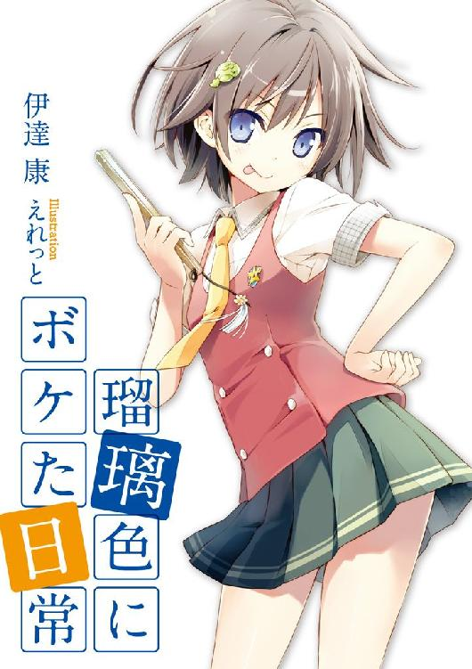
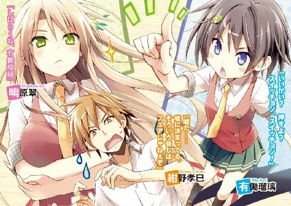
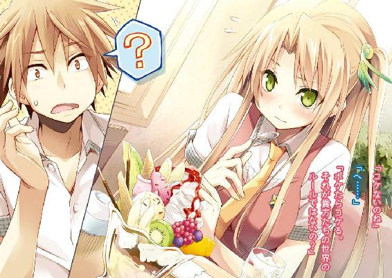
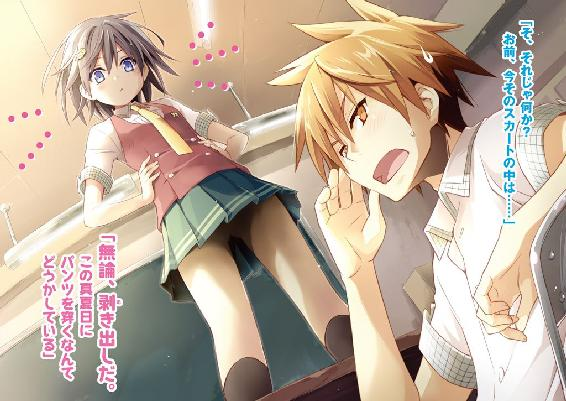
ＭＦ文庫Ｊ
瑠璃色にボケた日常
伊達康
口絵・本文イラスト●えれっと
どこの学校にも、突出した「有名人」が大抵一人はいるものだ。
運動部のエースだったり、芸能人レベルの美女やイケメンだったり、泣く子も黙るヤンキーだったり、はたまた純粋に奇行が目立つ変人だったり。
俺は紛れもなく、そんな「有名人」の一人だ。
中学時代もそうだったし、高校生になった今もそうだ。目立つのは嫌いじゃない。中学の頃はそれが自慢ですらあった。でも......今は逆だ。
今の俺は、悪い意味での有名人なのだ。そしてその汚名は、これからもどんどん酷くなっていくような気がする。奴の隣にいる限り――
教室は今、授業の真っ最中だ。カツラであることで有名な英語教師の小比類巻が、黒板にチョークを走らせるカツカツという硬い音だけが響いている。
メトロノームのように規則正しいその音に、ついウトウトとし始めた頃。不意に廊下をバタバタ駆けてくる足音が聞こえた。
足音は次第に大きくなり、俺たちの教室の前で急停止した。何だ何だと室内がざわめき、小比類巻が手を止めて不審げに扉へ歩き出す。
それを待たず、教室後方の戸が勢いよく開かれた。
現れたのは、ショートカットの小柄な少女だった。
どう贔屓目に見ても中学生にしか見えない童顔で、キョロキョロと室内をしきりに見回している。それに合わせて揺れていた癖のある猫っ毛がピタリと止まった頃、彼女の視線は目当ての人間に真っ直ぐ照準を定めていた。
「紺野くん、緊急の業務連絡だ」
出し抜けに言い、少女は我がクラスのごとくトコトコと中へ入ってきた。進む歩みの先に......俺がいた。
俺は目の前に立った外見だけは無駄に可愛らしい闖入者を見上げ、「業務、連絡......？」とオウム返しをした。
「そうだ。風雲急を告げる業務連絡だ」
「な、何だってんだよ。それよりお前、まだ授業......」
俺の言葉などどこ吹く風で、少女がいきなり人差し指をピンと立てた。それをそのままゆっくりとこちらに近付けてくると、切れ長の両目が鋭く光る。
「お、おい......」
「いいかい？ 押すよ？ スイッチョン、スイッチョン！」
少女が途端に俺の眉間をボタンのように押し始めた。当然だが、意味が分からなかった。
「スイッチョン、スイッチョン！」
教室はシンと静まり返っていた。
俺はただ固まり、されるがままに少女に突っつかれていた。静寂の中、ただ謎の「スイッチョン」だけが室内に威勢よく繰り返された。
......気の済むまで俺を連打し続けた彼女は、やがて一仕事終えたように手の甲で額をグイと拭った。
「ふぅ、終わり。......どうかな？」
「ど、どうって......」
「今のギャグだよ。寝ていたら、天啓のように舞い降りてきた。君の意見を聞きたい」
「............」
「ん？ どうしたんだい、何か悪い物でも食べたかい？」
「こっちのセリフだ！」
不覚にも忘我に陥っていた俺は、その時ようやく怒号を上げた。何だこれは。こいつはコレのために......わざわざ俺を小突くために乗り込んで来たのか！
「う、有働！ 授業中に何しとるか！」
英語教師・小比類巻もやっと我に返った様子で、眼鏡の奥の目を剥いて少女に一喝した。
しかし少女はあくまで泰然自若としたまま、目の前にやってきた小比類巻に向かって諭すように言った。
「これは勉学とは比較にならないほど大切なことなんだ、小比類巻教諭」
「馬鹿を言うんじゃない！」
「君も教師なら理解したまえ」
「いいから教室に戻れ！ あとで職員室に来るように！」
「何を、この......スイッチョン、スイッチョン！」
「もういいっての！」
あろうことか、今度は小比類巻をカツラがズレるほど突っつき始めた奇行少女を、俺は慌てて止める羽目になった。周りからの視線が痛い。また伝説が増えてしまった。また有名人の地位を固めてしまった。学校屈指の変人の、その仲間として。
どうしてこんなことに。どうして俺がこんな目に。
こんなことになるなら、俺はいっそ呪い殺されとけばよかったんじゃないのか。
こんなヤツの相方になるくらいなら――
第一章 ボケる霊感少女
０
紺野孝巳は、中学まで野球エリートだった。
子供の頃から運動が得意で、足も速かった。小学四年でリトルリーグに入り本格的に野球を始めると、上級生を押しのけ瞬く間に不動のエースとなった。
中学でフォークボールを覚えた孝巳は、ますます手がつけられない投手になった。球速とコントロールにも磨きがかかり、野球部を二度も全国優勝に導いた。地方新聞に載り、ローカル局で特集され、全国の高校から特待生の話が来た。
間違いなくその頃が、紺野孝巳の人生の絶頂期だった。
野球部を引退し、進学するべき高校を検討していた中学三年のある秋の日。
孝巳は交通事故に遭った。
ダンプカーにはねられ、全治二ヵ月。幸い一命は取り留めたものの、利き腕の右肩を粉砕骨折。腱も損傷しており、野球は二度と無理だと医師に告げられた。
突然のゲームセットだった。周りから「直角フォーク」と恐れられた天才投手の栄光は、球筋と同様に鋭く落ちたばかりか、地面にこれでもかとメリ込んでしまったのだ。
「お前、バカだろ」
皆が掌を返すように孝巳から離れていく中で、一人だけ頻繁に見舞いにやってくる奴がいた。中学のチームメートだった小田切和人だ。
「せっかくの才能ドブに捨てやがって......お前から野球取ったら何が残るんだよ」
小田切は来るたびに、そんな小言とも叱責ともつかない言葉を一方的に吐いていった。気持ちは分からないでもない。彼は中学三年間、ずっと孝巳の陰で活躍の場を奪われてきた選手だったから。
「紺野。お前これからどうするんだよ。特待生の話もなくなったんだろ？ どこの高校で何するんだ？」
包帯とギプスにまみれた孝巳を見下ろし、小田切は無遠慮に問うてくる。
一度も背番号１を奪えなかった無念は分かるが、こうも毎日のように怪我人に鞭を打つことはないだろう。こっちは生まれてこの方、打たれることには慣れていないのだ。
「そうだなぁ。空手部にでも入って、誰かしらブン殴るか。肩以外は治りそうだし」
いい加減うんざりしていたので、孝巳はそんなことを適当にうそぶき、その日も小田切を追い返した。
それが彼と交わした、最後の会話だった。
小田切はそれ以来ぱったりと見舞いに来なくなった。一度もクラスが同じになることがなかったので、復学してからも彼と顔を合わすことは一切なかった。
否、孝巳は彼を避けていたのだ。「お前、これからどうするんだ？」......接触すれば、小田切が同じ言葉を繰り返してくることは、火を見るより明らかだったから。
高校に入ると、孝巳はすっかり腐ってしまった。
平凡な公立高校に何とか補欠入学したものの、野球部はもちろん空手部に入ることもなく、生来の目付きの鋭さからいつしかヤンキーのレッテルを張られるようになっていた。
小田切とは違う高校になったので、彼がどうしているかは知らなかった。当然野球を続けているだろうが、近況を知っても気が滅入るだけなので、あえて調べたりしなかった。
自堕落な高校生活を始めて三ヵ月ほど経った頃。
孝巳の耳に、小田切の訃報が舞い込んできた。
六月のある日、部活の最中に熱中症で倒れた小田切は、そのまま帰らぬ人になってしまったというのだ。それ以上の詳細は不明だったが、彼のことだからまた無茶な猛練習を強行したのではないだろうか。
（野球生命どころか本当の生命を終わらせやがって......お前の方がもっとバカだろ）
小田切の死はショックだったが、もはや自分には関係ない。あいつももう、孝巳のことなど記憶の彼方へ消し去ってしまっていたはずだ。
小田切とは、二度と会えない。もう顔を見ることも、話すこともない。
なのに。
小田切和人はそれから間もなく戻ってきた。
幽霊となり、孝巳の枕元に立つようになったのだ。
１
モーゼに割られた海のように、生徒の人波が次々と左右に分かれ道を空けていく。
緊張と警戒と戦慄に満ちた視線をチクチクと受けながら、紺野孝巳は素知らぬ振りで放課後の廊下を歩いていった。
周囲と目を極力合わせないよう、遠い前方を見据えたまま進む。以前に女生徒と視線を合わせた際、腰を抜かして泣かれてしまった教訓だった。
賑やかな喧騒が、孝巳が進むごとにピタリとやみ、通過した数秒後にまたポツポツと再開される。まあ、彼らの態度も無理はない。恐れられる心当たりは山ほどある。
この青鶴高校における紺野孝巳の悪名は、同じ一年生のみならず二・三年生、教師に用務員、果ては学食のオバサンたちにまで轟いているのだ。昨日など校舎裏に棲みついた野良犬すら、食いかけの残飯を差し出してきた。
（まるでバケモン扱いだな）
確かに高校入学以降、孝巳はいくつかの揉め事を起こしている。が、自ら他人に喧嘩を売ったことは一度もない。いずれも降りかかった火の粉だったのだ。
入学初日に三年のヤンキーどもをぶっ飛ばしたのは、向こうがしつこく絡んできたからだ。二日目に空手部と柔道部の主将をぶっ倒したのは、彼らの恐喝まがいの勧誘が原因だ。三日目に体育教師をぶっ転がしたのも、竹刀による過剰体罰に抵抗した結果だった。
さりとて、世の中は全てが結果で語られることを孝巳は知っている。だからしてやっぱり自分は、全てを力でねじ伏せる『人間魚雷』以外の何者でもないのだ。
小学生の頃からずっと野球一筋だったお陰で、体力だけは無駄にあった。中学とはいえ全国レベルの速球を打ち込んできたお陰で、拳や蹴りがはっきりと見えた。
死に物狂いで身につけた能力が、今はそんなことにしか活かせない......喧嘩が強いと畏怖されることは、孝巳にとって虚無でしかなかった。
（何であの時、俺は......）
大股で廊下を行きつつ、数ヵ月前の事故にふと思いを馳せる。
日に五回は想起し、そして悔いる。それはすっかり孝巳のライフワークだった。
（俺はそんなに博愛主義者だったか？ 犬コロ一匹の命が、この右肩より大事だったか？）
追想に耽るうちに、程なく突き当たりの階段に辿り着く。そのまま下り階段へ向かったところで、上がってきた一人の男子生徒と鉢合わせた。背の高い金髪の男だった。
「よお紺野。帰んのかい？」
三年生の武本京也だった。
校内でも有名な不良集団の一員で、ゴリラやカバしかいないメンバーの中で唯一まともな顔面を持つ色男だ。長い髪を後ろで束ね、両耳にはピアスのリングがいくつも垂れ下がっている。
「屋上に来てもいいんだぜ？ お前がふんぞり返ってようが、もう誰も文句言わねぇよ」
青鶴高校のヤンキーらは、学校の屋上を溜まり場にしている。孝巳も入学初日にそこへ呼び出され、十人を返り討ちにした。確かあの時、この男は早々に逃げ去っていたか。
「いえ。用事があるんで遠慮します」
つっけんどんに首を振り、孝巳はすぐに階段を下り始めた。骨まで染みついた体育会系の習性で、上級生には相手を問わず敬語になってしまう。
「あっそ。さて、今日はどの子と帰るかなぁ」
武本は特に興味もないように、そんな独り言と共に廊下を消えていった。
相変わらず女漁りに余念がないようだ。武本という男は会うたびに違う女生徒を連れているのだが、それが孝巳には全くもって謎だった。色男と言っても、あくまでゴリラやカバとの比較論でしかないというのに......
「ま、いいさ」
気だるく呟き、足早に階段を下りていく。武本のことなどを考えている暇はない。今から用事があるのは本当なのだ。
孝巳には、行く場所がある。
助けを請うために、行かねばならない場所があるのだ。
紺野孝巳は現在、心霊現象に悩まされている。
他界した中学時代のチームメート・小田切和人が、枕元に現れるようになったのだ。
小田切の幽霊は、何一つ言葉を発さなかった。話しかけても反応せず、怖い顔でじっと見下ろしてくるだけ。深夜二時頃から現れ、空が白み始めるとスウと消えていく。特に実害を被ることはなかったが、最近はベッドを揺らしてくることがあった。
（一体何だってんだ、小田切の奴......）
正直、霊の存在を信じたことなどかつて一度もなかった。野球に人生を費やしてきた孝巳は、幽霊どころかテレビにも漫画にもゲームにも、ほとんど興味がなかったのだ。野球バカというやつだ。
取り急ぎ書店や図書館でそれらしい本を読み漁り、最低限の知識収集に努めた。除霊の方法を調べ、片っ端から実践してみたりもした。が、結果は全て空振りだった。
盛り塩は朝には消えてしまう。御札を貼っても朝には破られている。お経のＣＤを流したところ、朝には真っ二つに割れて床に捨てられていた。レンタルでなくて幸いだった。
すっかり精神的に参ってしまったある日、クラスの人間の会話が耳に止まった。
「ねぇねぇ。幽霊って信じる？」
自席で突っ伏していた孝巳の斜め前。三限目が始まる直前の、女生徒二人の会話。それは今の孝巳にとって、この上なくタイムリーな話題だった。
「どうだろう。昔は半信半疑だったけど、有働さんを見ちゃうとね......」
「私も！ 凄いよね瑠璃ちゃん。いるんだなぁ、本当の霊能者って」
聞けば、何とこの学校には『お祓い研究会』なる非公認の部活動が存在するらしいのだ。
そこの一員である有働瑠璃なる女は、一年にして部長を務め、あらゆる霊を祓える凄腕の霊能者だという。クラスが離れているので顔は知らなかったが、校外からも相談者が訪れるほどの、掛け値なしのホンモノであるとのことだった。
（そいつなら、小田切を除霊できるんじゃ......）
仮に除霊が無理でも、より専門的で効果的な方策を知っていたりはしないか。あるいは、それを知っている人物を紹介してもらえないだろうか。
そう思い、孝巳は一縷の期待を込めて『お祓い研究会』に赴く決心をしたのだった。
......後日思い返すと、それはとんだフィルダースチョイスだったと言える。
その部についての情報をもう少しだけでも得ていたなら、孝巳はもっと慎重になっていただろう。その女を頼るのは、最後の手段にするべきだと判断していただろう。
しかし、孝巳は行ってしまった。
身の毛がよだち、背筋が凍る、有働瑠璃の叫喚の世界へ。
２
目指す『お祓い研究会』の部室は、別館校舎二階の書道室の隣にあった。
本来は書道準備室なのだろう、他の教室より幾分小さい部屋だ。扉上部のすりガラスに大きなヒビが一つ走っており、その下のアルミ部分に「おはらゐけんきゅうかい」と粗雑に書かれた貼り紙がセロテープで止められてある。古風な文字遣いに似合わない、やけに丸っこい筆跡だった。
（大丈夫か？ ここ......）
ただでさえカビ臭く胡散臭い部なのに、この投げやり感は何なのだろう。普通なら怪しい団体は、それを隠すために派手な門構えを施すものではないか？
否、逆に考えれば、本物だからこそ適当なのかもしれない。行列の出来るラーメン屋も、豪壮な建物は少ない気がする。本物は見掛けでハッタリをかます必要がないのだ。
扉の前で逡巡すること数分。
意を決した孝巳は、小さく息を吸ったのちにドアを二回叩いた。
返事がないので、もう一度叩く。それでも沈黙している室内に痺れを切らし、そのまま扉に手を伸ばした。ドアは施錠されておらず、難なく横にスライドした。
「......邪魔するぞ」
カーテンの閉め切られた暗い内部に向けて、そう声をかける。
中は果たして普通の教室の半分もない、かなり狭い部屋だった。
左右に本のビッシリ詰まった棚が連なり、天井には無灯の蛍光灯が等間隔に並んでいる。部屋のど真ん中に細長い机が二つ合わせてあり、その右奥に乗った小さなテレビだけが暗闇で青い光を放っていた。思っていたより整頓された、こざっぱりとした部室だった。
......見ると、テレビの前に一つの人影があった。寝そべるように机にグデンと上半身を預け、テレビ画面をぼんやりと眺めている。
小柄な体格の、ショートカットの少女だ。私服だったら中学生に見えていたかもしれない。スカートから伸びる両足は細く、爪先が女の子らしくハの字の内股になっていた。
「ここ、『お祓い研究会』だよな？」
こちらに後頭部を見せている少女に、改めて声をかける。
「相談があって来たんだが、あんたが有働瑠璃か？」
言いながら扉を閉め、孝巳は横壁のスイッチに触り電気をつけた。数回の明滅と共に、すぐに部屋が明るくなる。
電気がついても少女はなお動かず、だらけた姿勢でテレビをひたすら凝視していた。
ホラー映像でも観ているのかと思ったが、画面に映っているのは古い漫才だった。そういえば先ほどから、男性二人の掛け合いと笑い声がテレビより微量に流れ出ている。
「コラ、客が来てんのにシカトするなって」
頑なに反応しない相手に業を煮やし、数歩詰め寄る。このノーリアクション、もしかしたら寝ているのでは？ そう孝巳が推測した直後。
「......入部希望かい？」
唐突に少女がノソリと頭を上げ、猫のようにくわわと欠伸をした。小柄な見た目とは裏腹の、落ち着いた貫禄のある声だった。
片目をこすりつつようやくこちらを向いた彼女は、とても端正な顔立ちをしていた。
透けるような白い肌に、紅を引いたような小さい唇。少し癖のある柔らかな黒髪は毛先を方々に遊ばせ、右上部分をヘアピンで留めることで何とかまとめられている。......ヘアピンはデフォルメされた河童の形をしていた。
「入部するなら四月の時点で来たまえ。何だい今さら偉そうに......師匠気取りか、君は」
あどけない顔に似合わぬ、愛想皆無の淡白な物腰だった。長い睫毛を湛えた切れ長の両眼が、不機嫌に、眠そうに、孝巳を胡乱に見据えている。幼げでいてどこか近寄り難い雰囲気を醸す少女の印象は、一言で述べれば日本人形だった。
「えっと。あんたが有働瑠璃か？」
「いかにも。私が三日前から鼻炎で鼻がグズグズしている、有働瑠璃その人だ」
知らねぇよと言ってやりたかったが、とりあえずやめておいた。一応は初対面だ、あまり悪い心証を与えたくない。
「そうか。あんたが有働か」
再度確認し、孝巳は一つ咳払いをした。別人の可能性を望んだが、本人なら仕方ない。
「悪いが、あんたに相談がある。ちょっと邪魔するぜ」
「邪魔するのなら帰りたまえ」
すかさず彼女がピシャリと返してくる。
「へ？」
「邪魔するのなら帰りたまえ」
有働瑠璃が繰り返す。机で両手を組み、何かを期待する瞳で孝巳の反応を窺っている。
しばしの沈黙ののち。
反応に窮して立ち尽くしている孝巳に深く落胆し、瑠璃はこれ見よがしに嘆息した。ただでさえ無愛想なその顔が、輪をかけてブスリとなる。
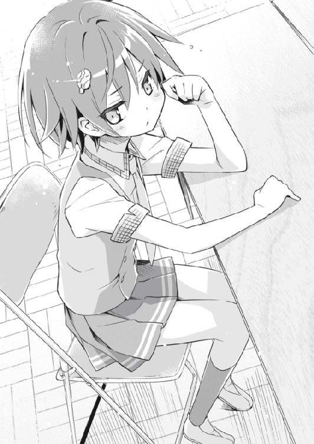
「君、新喜劇を知らないのかい」
「し、新喜劇？」
「邪魔をするなら帰れ......そう言われた人間は一度素直に帰りかけ、そののちに然るべきツッコミを入れるものだよ。それが決まりであり、礼儀であり、モラルだ。この未開人め」
「......会った早々ずいぶんな言い草だな」
何なんだこいつは。関西人の霊でも憑いてるのか。
向こうがそういう態度なら、こちらも気を遣う必要はない。孝巳は彼女から一つ飛ばしたパイプ椅子を勝手に引き、遠慮なくドカリと座った。舐められないよう胸を張り、足を大きく開き、一度グルリと室内を見回す。
「他の部員は来てないのか？」
「そんなのはいない。部員は目下のところ私一人だ。君に適性があれば二人目となるけど、まあ望み薄だろうね」
片手で頬杖をつきながら、瑠璃が倦怠感を隠そうともせず言った。不本意ながらも凶悪ヤンキーで通っている孝巳相手に、ここまで横柄かつなおざりな態度で臨めるとは......少し驚きであり、また新鮮だった。
「俺は別に入部しに来たわけじゃない。除霊を頼みに来たんだ」
切り出すと、瑠璃は「除霊ねぇ」とつまらなそうに言った。再びくわわと欠伸をする。
（こいつが、有働瑠璃......）
見れば見るほど高校生らしからぬ、幼い風貌だ。申し訳程度に僅かに膨らんでいる胸さえ、蜂に刺されただけなのではと思わせられる。
野球一筋で生きてきた孝巳は、自慢じゃないが日直の相手にすら緊張する硬派だ。そんな孝巳が女子と二人きりの密室でここまで平常心でいられるのは、多分に彼女のドライな所作のせいだろう。
「君、来る場所を間違えてやしないかい？」
彼女がぶっきらぼうに発したそんな一言に、孝巳は当惑してパチパチと瞬きした。
「ど、どういうことだ？」
瑠璃が心底疎ましげに見返してくる。蝿を見るような目だった。
「ここが何の部か分かっているのかい？」
「いや、だから......『お祓い研究会』だろ」
表の貼り紙にもそう書いてあった。こいつがこうも私物化している以上、ただの書道準備室じゃあるまい。
「違うね。ここはそんないかがわしい場所じゃない。君はコンニチワという発音を、コンニチハと言う人かい？」
瑠璃が「は」の部分を強調した。言わんとしていることが全く見えてこない。孝巳はひたすら顔をしかめ、首をひねるしかなかった。
「あの貼り紙は正しくは、『おはらい』ではなく『おわらい』と読む。ここは『お笑い研究会』だよ」
「............」
「親しみやすく平仮名で書いたのが裏目に出た。みんな勘違いしてしまってるんだ。ここは『笑い』という、人生において最も不可欠で高尚な感情について研究する部だよ」
......何、だと。
「従って、霊などという稲川的なものは扱っていない。確かに私は人より少しばかり霊感が強いけど、それは人より少し鼻が利くとか、リズム感がいいとか、体が柔らかいとか、その程度のことに過ぎない。私は別に除霊師じゃない」
......何、ですと。
言葉を失い脱力している孝巳に、瑠璃は「でも」と細い人差し指をピンと立てた。
「ひとまずは安心したまえ。やってきた客を無下に追い返すほど、私は薄情でも多忙でもない。せっかくだから、話くらいは聞いてあげようじゃないか」
そう言って椅子を立ち、トコトコと部屋の隅へ歩いていく。その先に膝くらいの高さの、小さな冷蔵庫があった。彼女は中からミニサイズの缶ジュースを二本取り出すと、「ネタはどこに転がっているか分からないからね」と小声で独りごちた。
孝巳の前にジュースを置き、自身も缶のタブを開けながら、再びパイプ椅子に腰を下ろす。コクコクと数回喉を鳴らすと、彼女は「さて」と腕と足を同時に組んだ。
一瞬チラリと垣間見えた雪のように白い太腿に、不覚にも目を奪われてしまう。
「それじゃあ話したまえ。紺野孝巳くん」
「な、何で俺の名を？」
まだ名乗っていないのに、当たり前のように言い当ててきた。
本人は否定しているが、やはりこいつは大物霊能者なのでは......一瞬そう思ったが、彼女の説明は至ってシンプルでつまらないものだった。
「実は私、君と同じ中学なんだ。君は有名人だったからね。今では別の意味で有名だけど」
かつては将来を嘱望された不世出の天才投手。今は全校を震撼させる極悪非道の素行不良。なるほど、同じ中学と高校なら孝巳を知らないはずがない。
「野球部を全国優勝に導いた剛球右腕が、今じゃ暴力沙汰の絶えない狂暴で無慈悲な無造作ヘアー......見事な凋落具合だ」
「髪は関係ないだろ」
孝巳はムッとして、片手で髪の毛をグシャグシャとした。二日前に負った額の生傷が、少し疼いた。ちなみにこんな髪型をしているのは、単にお洒落に疎いからだ。
「野球をやめた原因は、確か交通事故だったかい？ そもそもどうして事故なんかに遭ったんだい？ 不注意かい？ 信号無視かい？ クロスプレーの練習かい？」
「どんな野球部だ。原因はそのどれでもない」
「なら何だい」
早々にジュースを飲み干してしまうと、瑠璃は名残惜しげに缶を机に置いた。質問を連発してはいるが、その口振りはあまり会話に興味を示しているようではない。
「事故の原因なんて、言う必要があるのか」
「そりゃあるよ。今さらやめるのはナシだ。こっちはジュースまで出してるんだから」
孝巳は舌打ちし、眼前の缶ジュースを一瞥した。蒸し暑い室内のせいで、缶は早くも汗をかいていた。
「俺、まだ飲んでないんだけど」
「そのようだね。でも、私が君にジュースを振る舞ったという事実は変わらない。そして人の厚意に背を向ける者を、私は助けたいとは思わない。大丈夫だよ。私の口は、蜂蜜の蓋のように固いから」
......できれば話したくない。あの事故のことは、一刻も早く記憶から抹消したいのだ。
あまりにも間抜けな、あまりにも情けない、あまりにも恥ずかしい過去。それをこんな正体不明のカッパ女に語ることに、多大な抵抗がある。
「話したら、力を貸してくれるんだな？」
「善処しよう。話してくれないなら、その判断すらできないよ」
それからたっぷり一分ほど沈黙したのち、やがて孝巳は諦めたように口を開いた。
あの忌まわしい事故の経緯を、初めて他人に告白した。
「犬だよ。真っ白い、小さな子犬」
「む？」
「歩いてたら、横の車道をいきなり子犬が横切ったんだ。ダンプカーが来てるのは見えてた。あのタイミングじゃ、確実に轢かれると思った」
「で？」
「俺が何をどうしたところで、間に合わないのは分かってた。分かってたのに......気付いたら俺はガードレールを飛び越え、子犬に向かって走ってた」
「ほ？」
断腸の思いで秘匿の過去を暴露しているのに、相手は一文字の相槌ばかりを返してくる。それを苦々しく思いながらも、孝巳は仕方なく続けた。
「当然ながら、見事にダンプに吹っ飛ばされた。目が覚めたら数日後の病室だ。その数十分後には、自分の肩がオシャカになったことを聞かされた......それだけだ」
「そりゃ美談だね。で、子犬は助けられたのかい？」
......やはりそれを訊くか。孝巳は汗に湿る両掌を膝の上でグッと握った。
黙秘しようかとも考えた。が、こいつに見放されたら事態は絶望的だ。小田切の霊への対処に現状で打つ手がないのは事実なのだ。観念するしか、ない。
「......だよ」
「え？」
聞こえなかったらしく、瑠璃が小首を傾げた。
「......んだよ」
「何だって？」
「......だったんだよ」
「聞こえないってば」
「コンビニのビニール袋だったんだよ！」
半ばヤケクソに、孝巳は大音声を張り上げた。
「犬じゃなくて、風に膨らんで転がってた、ただのビニール袋だったんだよ！ そんなモン、確認してる暇はなかったんだよ！」
それがビニール袋だったことに気付いたのは、衝撃と共に天地が逆転する直前だった。
その時に自身の発した「げ、ビニール」という声を、孝巳は生涯忘れられないだろう。運悪く死んでいたら、あれが辞世の句になっていた。こんな間抜けな話があるだろうか？
「採用だ、紺野くん」
いきなり瑠璃が立ち上がり、高らかに言い放った。その瞳は先刻までと打ってかわり、異様にキラキラと輝いていた。
「さ、採用？」
「実に見事なオチだ。最後に焦らしたのも素晴らしい。君は逸材かもしれない！」
鼻息も荒く語る瑠璃を、孝巳はただ困惑して見上げていた。何だこいつは。
「いいかい紺野くん。君は全国でもトップクラスの投手でありながら、その才能をかくもエキセントリックな勘違いでフイにしてしまった。これが一般人だったなら、残念ながらネタの破壊力は何割か減っていただろう。華やかな未来が約束されていた、そんな君だからこその悲劇！ そして喜劇！ 凄いよ君！」
「嬉しくねぇよ！」
机を叩いて激した孝巳に対し、瑠璃は怯むでも悪びれるでもなく、感じ入ったようにウンウンと頷いた。同時に頭のカッパも上下した。
「なるほどなるほど。で、君はすっかりやさぐれ、今の殺戮の日々があるわけだね」
「人聞きの悪いこと言うな。命まで取ったことなんてない」
「そういえばその額の傷、まだ新しいようだけど。どこの誰とやり合ったんだい？」
瑠璃が自分のおでこを指しながら、孝巳の額に数本走る生傷を指摘してきた。
「......それも言わなきゃ駄目なのか」
「そりゃそうだよ」
「言う必要があるのか」
「大アリクイだよ」
孝巳は再び舌打ちし、不貞腐れたように額の傷を撫で上げた。
「学校帰りに、いきなり集団から不意打ち食らったんだよ」
「ほう、物騒な。どこの組の鉄砲玉だい」
「ヤクザじゃない。ってか人間じゃない」
「ん？」
「カラスだ」
「エクセレンツ！」
「うるせえ！」
パチンと指を鳴らした瑠璃に、孝巳はまたも怒鳴っていた。
「君、あえて私に額の傷を言及させたね？ 最初から狙っていたね？ その巧妙な誘導に、私はまんまと乗せられたわけだ！ やってくれるじゃないか！」
「お前が勝手にやられただけだ！」
「やはり君は逸材だ。君には笑いの神・ゼルファスがついているのかも！」
「勝手な神を作るな！」
「むっ。そしてその雷撃のようなツッコミ......ファンタスティック極まりない。明直にして超玄的な鋭質性を埋抱している！」
「そんな日本語はねぇ！」
喚き過ぎて、思わず貧血にフラつく。
そんなこちらをよそに、瑠璃は「うほほ～」などと頭のカッパと共に嬉しそうに小躍りしている。だから、何なんだこいつは。
「なあ、頼む。いい加減に本題を聞いてくれ......」
全く噛み合わない相手に疲れ果て、孝巳は半ば泣きを入れてしまった。これなら野球部の練習の方が、まだ消費カロリーが少なかった気がする。
「本題？ まだ一笑いあるというのかい？」
「ねぇよ！ 幽霊だ幽霊！」
またしても唾を飛ばして咆哮を余儀なくされた孝巳に、瑠璃は一転「ああ、幽霊か」とあからさまにテンションを下げた。
「それ、聞かなきゃ駄目かな」
「当たり前だ！ 人の傷口えぐって終わりか！」
「聞く必要ある？」
「大アリクイだ！」
「雑なボケは感心しないよ」
「お前の引用だよ！ はっ倒すぞ！」
「ふぅ......じゃ、どうぞ」
瑠璃は不承不承着席し、そのままグタリと机に突っ伏してしまった。実に分かりやすい、清々しいまでの豹変振りだった。
（何て自己中な奴だ......）
空前絶後の理不尽を感じながらも、孝巳は気を取り直して小田切の一件を語った。
とにかく、何はともあれ、それが有働瑠璃との出会いだった。
３
「ふぅん。チームメートの幽霊ねぇ」
小田切和人の話を聞いて瑠璃が発した感想は、そんな素っ気ない一言だけだった。
声に何の感情も篭っていない。先ほどのはしゃぎ具合が嘘のように、死んだ魚のごとき目で自分の爪を眺めている。
「ああ。今のところ深刻な被害があるわけじゃないんだが、参ってんだよ」
「憑かれる心当たりはあるのかい？ ないならいいけど」
小指で耳をほじくって、瑠璃が鷹揚に訊いてくる。欠伸を噛み殺したのが分かった。
いい加減窓から放り出してやろうかと思いつつも、当面は話を進めることにする。
「小田切は......恨んでたんじゃないかと思う。俺を」
「何故？」
「あいつは結局、一度も俺に勝つことができなかった。言っちゃ何だが、俺を負かすことに人生懸けてたような奴だったからな。無念だったんだろう」
小田切が孝巳のところへ化けて出てくる理由など、それくらいしか考えられない。
レギュラーが発表されるたび、彼が悔し涙を流していたのを孝巳は知っている。それでも小田切はまた立ち上がり、いつか孝巳からエースを奪う日を夢見て必死に頑張っていた。それは目標などという生温いものではなく、まさに執念だった。
密かに脅威に感じていた彼のその執念が、死した今も孝巳に向けられている......そうとしか考えられないし、それならば納得がいく。
「なるほど、事情は分かった」
瑠璃がおもむろに体を起こし、得心がいったとばかりに大きく数度頷いた。
「力を貸してくれるのか？」
「つまり、私の『笑い』が幽霊にも通用するかどうか......それを見たいわけだね？」
「どうしてそうなった！」
全く聞いちゃいない。何故ここまで人をコケにできる？ こいつの長所は一体どこだ？
「ところで君、スパイクに画鋲を入れられたことはあるかい？」
やぶからぼうに尋ねてきた瑠璃に、孝巳は「へ？」とソプラノ声を上げた。
「ヘルメットに剣山が入ってたことや、ロージンバックが角切り餅になってたこと、グローブが一房のバナナにすり替えられていたことは？」
「ないっての。どんな馬鹿トラップだ」
「私がライバルを蹴落とすなら、それくらいする。バットもフランスパンに替えておく」
「お前、人として問題あるぞ。もう知ってるけどな」
呆れながらそう言うと、瑠璃は真面目な顔で椅子にふんぞり返った。
「でもさ、小田切くんにとって君は、蹴落とすべきライバルだったんじゃないのかい？」
「そうだが、あいつは卑怯な真似までして勝とうとはしない。正々堂々とした奴だった」
「君に小田っちの何が分かる」
「ダチかよ！ お前こそ何が分かるんだ！」
身を乗り出して凄んだ孝巳を、瑠璃の切れ長の両眼が不敵に見返した。
「なら言い換えよう。君に死人の何が分かる」
「し、死人？」
「幽霊と言い換えてもいいよ。生きている人間に幽霊の意思など分かる道理はない。何故ならば、幽霊に意思などないからだ。裏を返せば、生きている者こそが幽霊の意思を決定することができる」
「は、あ？」
何だか小難しいことを言い出した。
「つまり、幽霊には意思などないんだから、こちらが勝手にでっち上げていいということだよ。今の君がそうだ」
「............」
「君は小田切くんが化けて出るのは、自分を恨んでいるからだと踏んだ。君が小田切くんの意思を決めたんだ。彼を怨霊たらしめているのは、君自身の後ろめたさや負い目だよ」
彼女の言葉をどれだけ理解できたのかは疑問だったが、それでも孝巳は孝巳なりの解釈をもって反論した。
「そんなトンデモ理論は聞いたことないぞ。幽霊の意思はこっちが決める？ なら俺が『小田切が化けて出たのは、奴から借りたエロＤＶＤを返さずじまいだったからだ』と思ったら、それが理由になるってのかよ」
「その通り。小田切くんは最低のドスケベ野郎だね。まさに性欲の塊、度し難い変態だ」
「小田切に手ぇついて謝れ！」
「私に怒らないで欲しいな。小田切くんをピンク霊にしたのは君じゃないか」
「新種の霊を作るな！ 今のは例えばの話だ！」
すでにかすれ始めた声も気にせず、頬を膨らませる瑠璃にがなり続ける。きっと明日は声が嗄れているだろう。もう知ったこっちゃないが。
「全く、お前には死者への敬意ってもんがないのか？」
言われた瑠璃は細い肩を大袈裟にすくめ、これ見よがしに天井を見上げてみせた。
冷蔵庫が微かに作動音を上げ、程なくして止まった。
「敬意？ そんなのあるわけないよ。死人とは、この世という舞台から降りた者のことだ。野球で言えば、退場処分を受けて球場から摘まみ出された者だ。もはや影響などない」
野球に例えてくれたので分かりやすかった。
「影響なら立派にあるさ。そいつの悔しさを受け継いで、残ったやつらで頑張るんだよ。そいつの思いを背負って、そいつの分まで投げるんだ。野球ってのはそういうもんだし、それは生者と死者だって同じじゃないのか」
「それは君の勝手な解釈だ。君が退場者の意思をでっち上げたんだ。退場者は、『もうこんな試合どうでもいいよ。負けるんなら負けちまえ』と思っていたかもしれない。あるいは『俺が抜けたのに勝たれちゃ困る。頼むから負けてくれ』と思っていたかもしれない」
何て嫌なことを言うカッパ少女だ。
「でも、そんなことはどうでもいいじゃないか。退場した者の意思なんて、残った者が勝手に決めつけ、勝手に応えればいいんだ。生者と死者だって同じだよ。君は、小田切くんの霊への理由付けを間違えたんだ」
こいつの言いたいことが、ようやく掴めかけてきた。つまり有働瑠璃は、生者至上主義者なのだ。死んでしまった人間には、顧みる価値などないと考えているのだ。
――あの人は、きっと天国から見守ってくれている。
――あの人の分まで幸せになろう。
――ククク。奴め、さぞかし地獄で悔しがっているだろうよ。
――小田切は......恨んでたんじゃないかと思う。俺を。
それらは死者の意思じゃない。残された生者の勝手な代弁だ。そう言っているのだ。
「有働。改めて訊きたいんだが」
「何じゃらほい」
ふざけた返事と共に、瑠璃が首を回す。バキボキと音が鳴った。
「例えば、巷に溢れてる怪談話なんかだと、霊とのコミュニケーションが成立しているケースが多くある。お前の言う通り幽霊に意思がないとしたら、あれは何と話してるんだ」
瑠璃はあっさりと「もちろん、自分自身とさ」と答えた。
「さっきの君の『あいつの分まで投げよう理論』と同じだ。全ては生者の邪推であり、自己満足さ。告別式やお葬式だってそうだよ。あれは死者のためにするものじゃなく、残された者のためのイベントだ。この人はもう死んだのだと、もういないのだと、生者の心に言い聞かせるセレモニーに過ぎない」
「お前、坊さんにどやされるぞ」
「別に坊主をけなしてるわけじゃない。むしろあのハゲたちは正しい」
「呼称を選べ！」
「坊主は幽霊の意思をポジティブに代弁し、生者に清く誠実に振る舞うよう諭してるんだ。とても立派な職業さ。逆に、ネガティブな代弁をして相談者を脅かすような、タチの悪い霊能者にはご用心だ。......私の持論はそんなところだよ。さて」
瑠璃がやにわに両手をパンと鳴らした。
「面倒だから、この際もう出てきてもらおう」
「で、出てきてもらう？ 誰に？」
室内を見回したが、もちろん誰もいなかった。
瑠璃は心底嘆かわしげに孝巳を見やり、深呼吸のような溜息をついた。
「この期に及んで他に誰がいると言うんだい。小田切くんに決まってるじゃないか」
４
瑠璃がさらりと言った言葉に、孝巳は口を半開きにしたままフリーズしてしまった。
「......誰だって？」
「小田切くんだよ。君はモノマネ番組を見たことがないのかい？ ご本人登場は、場を盛り上げる最も効果的で古典的な手法だよ」
何故モノマネ番組の定石に則らねばならないのか。そもそも盛り上げる必要があるのか。そんな疑問を抱く余裕もなく、孝巳はただ瑠璃を見詰めていた。
「このまま欠席裁判を続けるのも、小田切くんに悪いじゃないか。私の持論とは矛盾するけど、一応コミュニケーションを働きかけてみよう。無意味だとは思うけどね」
冗談のようには聞こえなかった。
孝巳の背中にゾクリと寒気が走る。あれだけ蒸し暑かった室内の気温が、一気に五、六度下がったように感じる。
......何だか、部屋に何者かがいる気配がした。恐る恐る左右を確認したが、当然どちらにも誰もいなかった。だが、気配は依然として付近に存在している。きっとこの部屋には......どこかに三人目がいる。
「小田切が、いるのか？ この部屋に......」
「いるよ。お早いお着きだ」
「ど、どこに」
瑠璃が「そこ」と、人差し指で孝巳の背後を示した。
孝巳の動悸が、百メートルをダッシュした直後のように激しく暴れ出した。気付けば全身にビッショリ汗をかいており、首や胸をいくつも雫が伝い流れていく。
「後、ろ......？」
息が苦しい。震えが止まらない。孝巳はまるでロボットのように、ぎこちなく首をひねって振り向いた。
ゆっくりと向けた視線の先に――小田切和人が立っていた。
「わあぁぁぁぁ！」
絶叫と同時に椅子から転げ落ちる。そのままシャカシャカと床を這い、無我夢中で瑠璃の座るパイプ椅子の後ろに回り込んだ。
「お、おだ、小田切......！」
乱れた呼吸を、懸命に整える。両手で背もたれを掴みながら猫っ毛の頭越しにそっと顔を出すと、果たして三メートルほど先に小田切が浮遊していた。
青白い顔で、いつものようにこちらを睨んでいる。ダラリと両腕を下げ、心なしか猫背気味の姿勢になっているのが、首吊り死体を思わせた。よく見ると体はぼんやりと透けており、向こうの壁が滲んで見えていた。
ほぼ毎晩見ているのだが、さすがにこんな時間、しかも学校に現れるのは初めてだった。
「さて、紺野くん。この小田切くんだけど」
「な、何だよ」
「呼んだはいいが、どうしよう」
「考えとけよ！」
危うくその細首を絞めそうになったが、すんでのところで思い止まる。今こいつに死なれたら、無事にここを出られる気がしない。
「じゃあとにかく、コミュニケーションを試みてみよう。え～っと......ハロー、ミスター・オダギーリ。マイネームイズ、ルリ・ウドウ。アイライク、スシ」
「ボケはもうたくさんだ！」
孝巳が半狂乱で喚いた途端、いきなり頭上の蛍光灯が一つ弾けた。長机の上に、ガラス片の豪雨がバラバラと降り注ぐ。
「うおっ！」
孝巳の悲鳴と共に、今度は机上に置いてあった孝巳の缶ジュースが、打ち上げ花火のように垂直に飛んだ。物凄い勢いで天井に激突し、続き床に落下してゴロゴロと転がる。
（な、何だこれは？）
かつて小田切がこれほど荒々しい手段に訴えたことは、一度としてなかった。
もしかして小田切は今、本当に怒っているのではないか？ 無意味に呼び出されたことか、孝巳が除霊の相談に訪れたことか、先ほどのふざけた英会話か......理由は分からないが、とにかく物凄く怒っているのではないか？
小田切の周囲で、絶え間なく破裂音が鳴り続けている。ラップ音というやつだ。
銃声にも似た乾いた音が響く中、瑠璃が椅子から立ち上がった。固唾を呑んで見守る孝巳を背に、彼女は腕組みしたまま品定めするように小田切をしげしげと観察した。
「ふむ。その落ち着き払った隙のない佇まい......大御所の熟練漫才師を彷彿とさせる」
「言ってる場合か！」
危機的状況を意に介さない彼女の呑気な感想に、ついツッコミを入れてしまう。もう、本当に、何なんだこいつ。
小田切は何も言わず、眼前に立つ小柄な少女をじっと見据えていた。
言葉はないが、小田切が敵意を持っているのは明白だ。「幽霊に意思などない」と瑠璃は言った。しかし、今のこの小田切の形相が......本当に意思なき魂の残滓か？
不意にガタガタという音が聞こえ、孝巳ははたとその方向に視線を転じた。
長机を挟んだ向こう側の本棚が、小さく動いている。間もなく棚から一冊の分厚い本がせり出し、瑠璃に向かって一直線に飛来した。
「有働！ 危ない！」
叫びより早く、孝巳の目の前を何かが横切った。それがこちら側の棚から飛び出した本だと気付いた頃には、二冊は宙で激しく正面衝突し、そのままガラス片の散らばる長机にドサリと墜落した。
「問答無用というわけか。せっかちくんめ」
瑠璃がやれやれと目を細め、小田切に説教を始める。
「そうやってすぐに実力行使に訴えるのは、頭の悪い証拠だよ。実に滑稽で不細工だ。......そうだ紺野くん、不細工で思い出したが、君の奥さんは元気かい？」
「大御所漫才から離れろ！」
もういい、分かった。ボケたいなら好きなだけボケてくれ。その代わり、この状況だけは何とかしてくれ......今の孝巳はもう、この愉快なカッパ少女にすがるしか道を見出せなくなっていた。
再び向こう側の本棚から本が射出された。瑠璃の頭部を目掛け走ったそれは、しかし目的を果たす前に、またもや反対側の棚から飛び出した本によって迎撃されてしまう。
（さっきから何が起こってる......!?）
まるで何かが瑠璃を守っているようだった。もしやこれは、彼女の守護霊の仕業か？
「紺野くん。早く彼を何とかしたまえ」
「できないから俺はここに来たんだ！」
「そうは言っても、小田切くんを何とかできるのは君だけだよ。彼を厄介な怨霊にしているのは、他ならぬ君自身だ」
こいつの理屈で言えばそうなのだろう。孝巳は小田切の化けて出た理由を、執念が高じた憎悪だと推測した。だから小田切は怨霊なのだ。孝巳の偏見がそうさせているのだ。
スイ......と、小田切が僅かに前進した。
幽霊に相応しく、彼の両足は膝下の辺りから段々と透過性を増し、先端が綺麗さっぱり消えている。だからそれは、「滑るように平行移動した」と表現した方が正しかった。
そんな小田切が、一メートルも行かないうちにピタリと止まった。
暗い眼差しが、射るように瑠璃を捉えている。体温を感じさせない土気色の顔は、何故だろうか躊躇しているように見えた。
瑠璃がニヤリと人の悪い笑みを浮かべ、両手を腰に当てながら偉そうに言った。
「賢明だね小田切くん。さすがに私とやり合う無謀さを悟ったかい？ 今の君は、ストレートしか投げられない素人ピッチャーだ。対する打席には、プロの四番バッターがボックス狭しとひしめき合っている。例えるならそんな状況だ」
互いが邪魔になって打てないのでは、と思ったが、孝巳は口を挟むことをやめた。
先ほど床に転がったジュースの缶が、またしてもフワリと浮遊し、瑠璃へと飛ぶ。
直後に今度は机の隅にあった小さなテレビがグルリと回転し、勢いで抜けたコードが蛇のごとく缶を絡め取った。
やがて缶はコードからスルリと滑り落ち、重い音を立てて再び床を転がっていった。中身が入っているのだ、あの勢いで彼女に当たっていたら大変なことになっていた。
「悪いけど、私に霊障は効かない」
自慢げに鼻を鳴らし、瑠璃がクルリと小田切に背中を向ける。パイプ椅子の後ろで戦々恐々としている孝巳に、彼女は改めて手招きした。
小田切のポルターガイストは、瑠璃に危害を与えることはできないらしい。彼女が作為的にそれを可能にしているならば、きっと孝巳のことも守ってくれるはず。そんな希望的観測を込めて、孝巳はおずおずと瑠璃の横までやってきた。
小田切と視線がぶつかる。一メートルもない至近距離だ。
当たり前だが、生気のない淀んだ瞳だった。その双眸から感情を読み取ろうとするならば、やはり憎悪、怒りだ。
（俺に勝ち逃げされたのが、そんなにムカついたか？）
それを瑠璃は勝手な推測だと言ったが、ならば他にどんな理由があるというのだ。
野球以外では、小田切との仲は特に悪くなかった。それどころか意外とウマが合ったくらいだ。お互い譲らず対立するのは、良くも悪くも野球に関することだけだった。彼が孝巳に対し、死してなお執着することなど......野球を置いて何がある？
その時、いつの間にか孝巳の背後に回っていた瑠璃が、背中をトンと押してきた。
「！」
突然の不意打ちに、なす術もなく前方へつんのめるように踏み出す。顔を上げると、目と鼻の先に小田切の顔があった。凄まじい睥睨がそこにあった。
「おわああぁぁぁ！」
雄叫びのような悲鳴と共に、忍者のごとく後ろへ飛びすさる。椅子に踵をぶつけ引っくり返りかけるも、幸い瑠璃が両手で支えてくれた。
「何すんだよ！ こ、殺す気か！」
「そんなつもりはないナリよ、キテレツ」
「それはコロ助だ！ ぶん殴るぞ！」
「紺野くん。君が本当に小田切くんを何とかしたいのなら、ここで逃げるべきじゃない。ちゃんと向かい合って、ちゃんと答を出すんだね」
有無を言わさず、小田切の眼前に固定される。手を伸ばせば触れられそうな位置だ。
「君は小田切くんに何を見る？ 彼はどうして成仏できなかったんだと思う？」
小田切の周囲では、ラップ音が間断なく連鎖している。机の向こうの本棚がカタカタと小刻みに動いており、今にもまた本のミサイルが飛び出てきそうだった。
不穏なサウンドが渦巻く中、背後の瑠璃の声だけがやけに玲瓏に響いた。
「小田切くんは、君に負けたことを根に持っているのかな？ それとも、ライバルがすっかり腐ってしまったことを嘆いているのかな？ エッチなＤＶＤを返さないことを怒っているのかな？ 決めるのは君だ」
小田切は何も答えない。まるで孝巳の言葉を待っているかのように、怒り顔でこちらを見据えたままだ。
（小田切......お前は、俺が勝ち逃げした上に野球をやめちまったから怒ってるんだろ？ だから化けて出たんじゃないのか？）
だから毎日のように、病院へ恨み言を吐きに来たんじゃないのか。ずっと張り合ってきたライバルが、馬鹿げた交通事故であっさりリタイアしてしまったことに、孝巳本人以上に納得がいっていなかったのではないのか。
「そりゃ俺だって、高校でも野球続けるつもりだったよ。甲子園に行く気満々だった。それくらい野球には自信があった。それをアホな理由でアホみたいに終わらせちまった」
ヤケクソになり、小田切を睨み返す。溜め込んできた鬱積が堰を切り、孝巳は感情を爆発させた。
「でも、こうなっちまったもんは仕方ないだろ！ 右が駄目なら左で投げろって？ 漫画じゃないんだ！ 俺はそこまで野球ナメちゃいない！ スター扱いされてガチガチに固まったプライド捨てて、また一から出直せるほど殊勝でもない！ キャッチャーまでろくに届かない肩でまだ野球続けりゃ良かったのか！ そもそもお前はもう、この世にいないだろ！ どっちみち俺は恨まれてたんじゃねぇのか！」
吐き出した思いの丈に返してきたのは、小田切ではなく後ろの瑠璃だった。
「この期に及んでも野球かい。未練がましいなぁ」
「お前に何が分かる！ 俺と小田切にとって、野球がどんな意味を持ってるか――」
「小田切くんは、高校では野球をやっていない」
５
瑠璃が出し抜けに言ったセリフに、孝巳は目の前の小田切の脅威も忘れ、十秒ばかり沈黙してしまった。
背中に瑠璃の気配がある。物音一つ立てない彼女は、背後霊のようだった。
「や、野球を、やってない？」
「どうやら知らないみたいだから、教えてあげよう。彼は高校では空手部だよ」
嘘だ。小田切はあんなに野球に燃えていたじゃないか。その情熱たるや、孝巳に勝るとも劣らぬものだったじゃないか。
「な、何だよそれ。何でお前がそんなこと」
「言ったろう？ 私は君と同じ中学だって。だから当然、小田切くんとも同じ中学だ。私は中二、中三と小田切くんのクラスメートだったんだよ」
今さらながらの事実を開示してきた彼女に、孝巳は放心状態になった。こいつは小田切と面識があったのか。冗談ではなく、本当にダチだったというのか。
「だから、私は小田っちを知っている。それほど親しかったわけじゃないけど、道で会えば挨拶をするくらいには顔見知りだ」
「............」
「先月、偶然街で会ったんだ。彼が死ぬ三日ほど前だ。思えばそれも、君がここへ来たことを含めて因果だったのかもしれないね」
「小田切に、会った？」
死ぬ三日ほど前の小田切に。生きていた頃の小田切に。
瑠璃はパイプ椅子に座り直すと、さも傍観者のように孝巳と小田切を交互に眺めた。
「その時の会話をかい摘まんで教えよう――」
『小田っち、久し振りだね。高校でも野球は頑張ってるかい』
『いや、野球はもうやってないよ。思うところがあって、空手部に入った』
『へぇ。そりゃまたどうして』
『張り合いがなくなっちまったのかな。野球は好きだし、続けてもよかったんだけど......空手部の方が燃えられそうな気がしたんだよ。あいつも空手部に入るって言ってたし』
『それはもしや、紺野孝巳のことかな？』
『まあな。そういやルリルリ、同じ青鶴高校なんだろ？ あいつ頑張ってるか？』
『さあ。中学でも一度も話したことはなかったし、今も面識はないよ。それにしても、どうしてそこまで彼に固執するんだい？ 野球をやめて、空手部に入ってまで追いかける理由は何だい？』
『別に付きまとってるわけじゃないんだが......あいつに挑むのって、何か燃えるんだよ。勝ち負けじゃないんだ。紺野が凄い奴だってのは、俺が一番よく知ってるからな。本人には言えねぇけど......野球ができなくなったあいつの悔しさは分かるつもりだ』
『ふぅん』
『どうせ乗りかかった船だ。空手だろうがサッカーだろうが、こうなりゃとことん付き合ってやろうかと思ってな。......詰まるところ、俺は俺で充実したいってだけの話さ。その上であいつから、負けたよ小田切、って言葉が聞けたら上々ってことかな』
『なるほど、分かった。君はホモだ』
『何でそうなるんだ。そうやってすぐ恋愛感情に結びつけるのは、女子の悪い癖だぞ』
『攻撃は最大の防御、攻めは最大の受けというわけだ』
『いや、聞けよお前』
『君は進学する高校を誤った。ＢＬ学園で総受けになるべきだった』
『はあ。本当に変わらないな、ルリルリは』
――そこまで話すと、瑠璃は「まあ、こんな感じかな」と肩をすくめてみせた。
後半のホモ談義はともかく、彼女が語った小田切の言葉が、孝巳の胸に突き刺さる。
その会話が真実なら、小田切は恨んでなどいない。不満があるとすれば、結局は空手部にすら入らずヤンキーの色眼鏡を受け入れ腐っていた、今の体たらくに対してだろう。
（それが理由か？）
分からない。正解のような気もするし、違うような気もする。
小田切。お前は俺に何を言いたい？ 教えてくれ。もう降参だ。......俺の負けだ。
「さあ、紺野くん。いい加減に小田っちを解放してあげたまえ」
不意に背後からかけられた声に、我に返り顔を上げる。
相変わらず小田切が怖い顔で浮かんでいた。何も言わず、怒ったように、じっと孝巳を見据えている。その眸子からは、怒り以外の意思は読み取れない。
「何でもいいじゃないか。ただ一言、『頑張れ』と言いに来た。『いつまでも拗ねてんな』と叱咤しに来た。『顔面を整形しろ』と忠告しに来た。何でもいいよ」
「最後のいらないだろ！」
小田切がピクリと表情を動かした。が、怒りの形相にまで変化はない。
「分からねぇんだよ！ 小田切の心なんて！」
苛立ち剥き出しの視線で振り返ったが、瑠璃はけろりとしていた。彼女はおもむろに机に片肘を置こうとしたが、蛍光灯の破片に気付いて仕方なく腕を戻した。
「目の前に引っ張り出せば、早く片付くと思ったのに......小田っちも困ってるじゃないか。君が未練がましく引き留めるから、成仏すらままならない」
不平を上げる瑠璃に、孝巳は顔色を変えた。
「俺が......小田切をこの世に引き留めてる？」
「そうさ。だから早く理由を決め直して、納得したまえ。そして君の言った通り、彼の無念を背負って自分の試合を続けたまえ。私も元クラスメートとして、小田っちが今の状態でいるのは心苦しい」
彼女の言葉を整理するのに、若干の時間を要した。
孝巳自身が小田切を引き留めている？ 彼には最初から未練などなく、そのまま成仏するはずだったということか？ そんな彼を、孝巳が留まらせた......？
「あれこれ小田切くんの心中を探る行為は、それこそ時間の無駄だ。正解も不正解も、君の中にしかない」
いつしかラップ音はやんでいた。
「意思のないはずの小田切くんが、何故怖い顔をしているのか分かるかい？ 彼をあんな顔にさせているのは君だよ。小田切くんは怒っている、自分を恨んでいる......そう君が決めたから、彼は怒っているし、恨んでいる。怒らされて、恨まされている」
小田切は......恨んでたんじゃないかと思う。俺を。
孝巳は、そう瑠璃に言った。小田切が枕元に現れた夜からそう思っていた。
「だから私は言ってる。君は理由付けを間違った。改めて決め直して納得したまえ、と」
それを俺が決めていいのか。小田切の意思を、コロコロ勝手に変えていいというのか。
「いいのさ。死人には意思などないのだから。この世とは生者のものだ。死人に主張する権利などない」
孝巳の迷いを見透かすように、冷えた言葉が室内に響く。傲岸でいて凜とした鈴音のごとき声は、何だか悪魔の囁きのようにも聞こえた。
（俺が、小田切を怨霊にした）
孝巳が理由を「恨み」に求めたから。だが、よくよく考えてみれば、小田切和人という人間を思い返してみれば、果たしてそれが妥当な解答だったと言えるだろうか？
入院中、塞ぎ込む孝巳をずっと見舞ってくれたのは、小田切だけだった。「お前これからどうするんだよ」と、彼はうんざりするほど訊いてきた。興味本意ではなく、純粋に心配だったのだ。そしてきっと、あの言葉はこう続いていたのだ。「どうせ乗りかかった船だ。こうなりゃとことん付き合ってやるよ」と。
「小田切......」
フラリと小田切に向き直る。暗く濁った彼の瞳に、孝巳は静かに語りかけた。
「お前が化けて出たのは、拗ねて腐ってフラフラしてる俺がムカついたからだ」
小田切は何も答えない。
「そりゃそうだよな。そこまで買っていた自分のライバルがこんなザマじゃ、張り合ってたお前だって馬鹿みたいだもんな」
勝手極まりない解釈だ。でもそれでいい。もしまだ小田切が生きていたら、きっと彼はそう思っただろうから。それが孝巳の中の、小田切和人という男だから。
「悪かったよ小田切。俺の人生、まだ続いてるもんな。お前のライバルとして恥ずかしくないように、新しいマウンド探すよ。そんでまた、いつかそっちで勝負しよう」
ふと小田切の顔から、険が消えたような気がした。今まで何を言っても反応しなかったのに。――必要だったのは、こんなにも簡単な言葉だったのか。
「もう大丈夫だよ。俺は紺野孝巳だ。お前が勝てなかった、紺野孝巳だ」
宣言に合わせるように、小田切が消えていく。ゆっくりと、淡く、全身が溶解していく。
孝巳はそれを、最後の一瞬まで見逃すまいと凝視した。
「お前が凄い奴だったのは、俺が一番よく知ってる。俺はそんなお前とライバルだったんだ。だから......まあボチボチ頑張るよ」
右手を上げ、軽く振る。肩部が微かにズキリと痛んだが、構わなかった。
最後に見た彼の顔は、少し微笑んでいたような気がした。いや、彼は紛れもなく微笑んでいたのだと、孝巳は思うことにした。
「じゃあな小田切。それから、ありがとうな――」
６
「ようやく終幕したね」
小田切が消滅してしばらくののち。瑠璃がよっこらせと椅子を立ち、大きく伸びをした。
小田切の去った室内には、砕けた蛍光灯のガラス片、机の数冊の本、そして床の缶ジュースだけが残った。今となっては夢うつつのような時間だが、それらが確かにここに小田切がいたことを示す物証だった。
「君、ちゃんと掃除するように。それから、新しい蛍光灯を買ってくるように」
人差し指を突きつけてきたカッパ少女に内心ムッとしながらも、孝巳はとりあえず頭を下げることにした。とにもかくにも、問題が解決したのはこいつのお陰だ。
「世話をかけたな。礼を言っとく」
「うむ。崇め奉りたまえ」
貧相な胸を張り、瑠璃が尊大に頷いた。頭のカッパも一緒に頷いた。
「しかしお前さ、あれは何だったんだ？」
「あれって？」
「いや、だから......本とか缶とかだよ」
飛んできた本を、本が打ち落とす。飛んできた缶を、テレビのコードが纏縛する。小田切のポルターガイストから、瑠璃は明らかに守られていた。そう考えねば説明がつかない。
「やっぱり、守護霊か何かか？」
瑠璃が頭を掻きつつ、面倒臭げに溜息をついた。如実に嫌そうな顔だった。
「私が小田切くんに言ったこと、覚えてるかい？ 私に相対するのは、素人ピッチャーがプロの四番バッターの集まりに挑むようなもの。だったかな」
そういえば、そんなことを言っていた。全員が一度にフルスイングしたら、きっと打席は大惨事になるだろう。
「私には現在、十数人の怨霊が取り憑いている」
「え......？」
「恋人に捨てられて自殺したＯＬ。ノイローゼになって首を吊ったサラリーマン。八人を殺した末に射殺された連続通り魔。内地にて戦死した日本兵。あとは......まぁいいや、とにかくそういう有象無象がまとめて憑いてるんだ。みんな半端なく私を恨んでいる」
とんでもないことを平気で言ってのけた瑠璃に、孝巳は硬直した。
「な、何でそんなのが憑いてんだよ。だって霊ってのは......」
幽霊に意思はないんじゃないのか。その意思は、生きている者が決めるのではないのか。
ならば、誰がそいつらを怨霊にした？ 誰が瑠璃を呪わせた？
絶句している孝巳をよそに、瑠璃はいきなり無関係な話を始めた。
「小田切くんを早めに解き放つことを勧めたのは、何も君のためだけじゃない。例えばこの先、小田切くんが君の枕元だけじゃなく、こうやって学校なんかにも現れるようになっていたとする。もしその時、他の誰かが小田切くんを目撃してしまったら、問題はさらにややこしくなっていた」
「ど、どういうことだ......？」
「紺野くん以外の人間まで、小田切くんに理由付けをしてしまうからさ。やれ古い地縛霊だ、やれ失恋相手に復讐する自殺者だ、やれ事故死に気付いていない浮遊霊だ......そうなったら彼はテンテコ舞いだよ。山寺宏一ばりに色んな霊を演じねばならなくなる」
表現が適切かはともかく、それは確かにテンテコ舞いだ。
「一般的に霊能者、除霊師、霊媒師、中には霊導師なんて輩もいるけど......そういう者たちは、色んな理由付けをされてしまった霊に、強引な断定を与えられる人間を指すんだ。霊に対し、他者より強い発言力を持つ......それがすなわち霊感の強さということさ」
不特定多数による様々な理由付けを、謂わば鶴の一声で恣意的に決めてしまう。「大勢から色々言われているが、お前が幽霊になった理由はこれ！」と、独断と偏見で断定してしまう。それが霊能者や除霊師の本質だと、瑠璃はそう言っているのか。
「でも、それは必ずしもベストな方法とは言えない。引き留めた本人が解放してやるのが、本来は一番いいんだ。他人に尻拭いをさせるべきじゃない」
「それは何となく分かるけど......でもお前、祟られてるんだろ？」
自分に憑いている十数人の怨霊とやらを、何故彼女は放置しているのか。
本人の言う通り、こいつが人より強い霊感を持っているのは間違いないのだろう。ならばその十数人を解放してやることができるはずだ。瑠璃は霊たちに、理由を与えてやれるはずなのだ。祟られている以上、ベストな方法などを追求している場合ではない。
「例えば、恋人に捨てられて自殺したＯＬ。彼女に対し、私はこう言った。『君から彼氏を奪ったのは私だよ。だから君は捨てられたんだ。ざまあないね』と」
「な、何？」
「ノイローゼのサラリーマンには、『君の良からぬ噂を、上司や得意先に色々告げ口した』と。射殺された連続通り魔には、『通報したのは私だ。理由は君の顔が気持ち悪かったからだ』と。戦死した日本兵には、『君の部隊を敵国に売った。時代はアメリカだ』と」
こいつは何を言っている？ そんなことをして、何の意味がある？
「もちろん、全て身に覚えのない嘘っぱちだ。でも、私は彼らに言った。『君が破滅したのは私の仕業だ。私が元凶だ。憎いだろう？ 悔しいだろう？ 存分に恨みたまえ』と」
私を祟れ、恨め、憎め、呪え――瑠璃は芝居風に両手を広げ、「そう言ったのさ」と妖しく笑った。
孝巳は押し黙ったまま、ただ眼前の少女を見詰めていた。
孝巳だって、一度は小田切を怨霊にしてしまった。彼に対して抱えていた後ろめたさや負い目を、そのまま小田切の意思としてしまった。
だが、瑠璃は違う。彼女は自覚的に、意図的に、作為的に、十数人もの霊を怨霊に仕立て上げたのだ。きっと解放させてやることもできただろうに、瑠璃は嘘までついて、彼らに怨霊となることを強いたのだ。
「霊っていうのは、究極的な個人主義をしてるんだ。憎いこいつを殺すため、ここは手を組もう......そういう概念が彼らにはない。あるのは私への恨み、殺意、害意だけだ」
だったら何故、彼らは瑠璃を守った？
「私が他の誰かに殺されたりしたら、彼らは存在意義を失うんだよ。それは彼らにしたらとても困るんだ。存在理由がなくなるんだ。だから」
不意に、傍らの本棚の上に置かれていた段ボール箱が、ズルズルと動いた。
明らかに不自然な動きだった。引きずられるように、ゆっくりと、瑠璃の頭上辺りへ向けて移動する。本でも詰まっているのか、かなりの重量を思わせる動き方だった。
孝巳が見上げていると、やがて段ボール箱がグラリと傾いた。そのまま落下すれば、瑠璃に直撃する。あの重そうな箱が、細首に支えられているだけの脳天に！
「有働！ 上！」
叫んだが、段ボールは落ちてこなかった。本棚の上で傾いたまま、引力を無視して固まっている。よく見ると箱は小刻みに震えており、少しずつ押し戻されているようだった。
「抜け駆けは他の怨霊が許さない。ましてや無関係の霊が危害を加えるなんて、彼らには言語道断だ。故に私には霊障は効かない。私が傷付くのを、彼らが許さない。漫画っぽく言えば、『お前を倒すのは俺だ。他の奴にやられるなんて許さん』ってとこかな」
瑠璃がペロリと小さな舌を出した。
何て奴だ。ここを訪れて以降、もう何度も思った感想だが――改めて、何て奴だ。
「ついてけねぇよ......」
「最初に言ったじゃないか。私は別に除霊師じゃないって。それに、こうも言ったはずだよ。私には死人への敬意などない、ってね」
敬意がないどころか、もはや冒涜の域に達している。幽霊を騙くらかして、その意思を利用して、ボディーガードにこき使うなんて......とても正気の沙汰とは思えない。
震懼する孝巳の前方で、瑠璃が堂々と断言した。
「これでいいのさ。この世は生者のものだ。死んだ聖人君子より、生きている悪人罪人の方がまだ偉いんだ。だから霊なんて、こんな扱いでいいんだよ。私みたいな美少女に使役されるなんて、むしろラッキーだよ。お風呂や着替えだって見放題」
「......割に合わねぇ」
「君、失礼だよ」
瑠璃が頬を膨らます。その顔は、ごく普通の可愛らしい女の子に見えた。
見えなくもなかった。
７
「何はともあれ、色々世話になったな」
蛍光灯の破片を箒とチリトリで片付け終えると、孝巳は鞄を持って瑠璃に告げた。
「蛍光灯は明日持ってくる。それ以降は来ることもないだろうけど、まあ元気にやれよ」
ドアへと歩き出した孝巳を、即座に瑠璃が「待ちたまえ」と呼び止めてきた。
「何をお別れのように言ってるんだい。採用だと言ったろう。まさか君、私が無償奉仕するほど善人に見えたかい？」
......孝巳の脳が、危険信号を訴えている。まずい流れだ。
「私はプリティーだけど、チャリティーとは無縁だ。フロンティア精神に溢れているが、ボランティア精神は枯渇している」
きっぱりと言い放ち、彼女は机に一枚の用紙を置いた。
「入部届けだ、書きたまえ。非公式の部だけど、証文は必要だ」
「............」
嫌だ。それは決して誇張でも何でもなく、悪魔との契約に等しい。
何とかこの窮地を脱すべく、孝巳は脳ミソをフル回転させた。
「ま、待てよ有働。俺は今まで小田切以外の幽霊なんて見たこともなかった、霊感ゼロの人間だ。入部したって、お前の役には何一つ立てない」
「何をたわけたことを言ってるんだい。ここは『お笑い研究会』だ」
「............」
そうでした。
「霊感なんて必要ない。求められるのはオモシロ人間だ。君のように、ビニール袋と子犬を間違えるスカポンタスが欲しいんだ」
本気で殴ってやりたかった。
「君は逸材なんだよ。さっきも言ったけど、君には笑いの神・ムルドゴーラがついている」
「ゼルファスじゃなかったのか！」
思わずまた突っ込んでしまった孝巳をニヤリと見返したのち、瑠璃がにわかに真面目な顔付きになった。小柄な体格のせいか、胸のネクタイがやけに大きく見える。
「ところで、君は予知能力を信じるかい？」
「え？」
「私はそちらにも造詣が深くてね。霊感が強いというのは、そういう方面にも活かされるみたいなんだ。もちろん訓練したわけじゃないから、いつでも予知を働かすことはできない。ふと誰かを見たとき、不意に頭にビジョンが浮かぶ......そんな感じなんだけどね」
名前のごとき瑠璃色の両眼が、意味ありげにこちらを捉えている。
「......何が言いたいんだよ」
「いやね、見えたんだよ。まさに今、君のビジョンが。もしこのまま入部せずに帰るなら、君は途中でダンプカーに轢かれる」
「......！」
「残念ながら、今度は即死だ」
「............！」
孝巳は凍りついたまま、知らず鞄を取り落としていた。ダンプに轢かれる？ また？ しかも、今度は即死だと？
数ヵ月前の、あの悪夢の瞬間が去来する。けたたましいクラクションと、急ブレーキの音。全身が砕けるような衝撃と、宙に舞う無重力の感覚。
「嘘だ......嘘に決まってる。そういう脅しはフェアじゃねぇぞ」
「本当だよ。私は冗談は言わない」
「どの口でそのセリフを......」
「君はもちろん、ダンプの運転手の人生もパァだ。君は愉快なリアクションを取る暇もなく、早々に小田切くんと気まずい再会を果たすことになる」
「お前は不謹慎の王様か！」
長机を叩いて身を乗り出した孝巳に、瑠璃は嫣然と微笑んできた。
「でも、もし入部するなら事故には遭わない。それどころか、帰りに五十円拾う」
「バランスってもんを考えろ！」
「どうせ当面やることもないんだろう？ お笑い研究は、チンピラ稼業よりよっぽど有意義で人道的な行為だよ」
「俺は体育会系で生きてきたんだ！ 今さら文化系に鞍替えできるか！ ていうか、チンピラ稼業って何だ！」
ここへやってきてから、自分は一体どれだけ怒鳴ったのだろうか。
そもそもこんな大ボケ小娘の戯れ言など、軽くあしらって流せばいいのだ。律儀に突っ込んでやる義理がどこにある？ 何を自分は、力一杯ツッコミを入れている？
「でも実際のところ、私と一緒にいるメリットはあると思うよ。私は学校内外の色んな人間に顔が利く。私の身内だと知れば、絡んでくるヤンキーはいなくなるだろうさ」
「............」
「必然的に君は喧嘩をしなくなる。それが長く続けば、周囲はいずれ『紺野孝巳は更正したのだ』と認識するようになる。運動部に受け入れられる日だって来るかもしれない」
「............」
「さあ、名前を書きたまえ。どのみち入部しなければ君に明日はない。死ぬし」
......人生最大の熟考を経て、結局孝巳は入部届けに名前を書いてしまった。
有働瑠璃に丸め込まれる形になったのは心外の極致だったが、考えてみれば奴の言うことも一理ある。どうせこのままでは、まともな高校生活など送れはしないのだ。
何かやりたいことが見付かるまで、その間までだ。後腐れのないように彼女に借りを返しておくべきなのかもしれないと、そう思ったのだ。
瑠璃は上機嫌で入部届けを鞄にしまうと、鼻歌を唄いつつ孝巳の肩をポンと叩いてきた。
「じゃあ、これからよろしくね。紺野くん」
「死ぬほど不本意だがな」
これ見よがしの不機嫌面を返してやったが、瑠璃は構わず「またまたぁ」と満面で笑うだけだった。
今日は活動はお開きらしく、瑠璃は孝巳と共に部屋を出て鍵をかけた。「おはらゐけんきゅうかい」と書かれた貼り紙のセロテープ部分を、剥がれないよう指で押していく。
それが終わったとき、彼女はふと何かを思い出したように孝巳に振り返ってきた。
「あ、そうだ。小田っちのことだけど、会って話したって言ったよね」
「ああ」
「すっかり忘れていたよ。伝言を預かっていたんだ。もし紺野くんと顔見知りになるようなことがあったら、その時でいいから一言伝えといてくれって。その程度の内容だけど」
入部の憂鬱も吹き飛び、孝巳は目を剥いて瑠璃を見た。
生前の小田切の伝言。孝巳の決めつけじゃない、小田切和人からの直接のメッセージ。
ライバルからの、最後の言葉。
「俺に、伝言......」
「うん。じゃあ言うよ。心して聞きたまえ」
瑠璃が向き直ったので、孝巳は姿勢を正してかしこまった。
なるほど。瑠璃の言う通り、孝巳がここに来たのは因果だったのかもしれない。もし有働瑠璃に会うことがなかったら、孝巳はこの伝言を耳にすることもなかったのだから。
瑠璃が小さく息を吸う。間もなく彼女の唇から、小田切の最後の言葉が紡がれた。
「満開ロリロリ天国」
「............」
瑠璃がよく分からない単語を発した。
「満開ロリロリ天国」
瑠璃が事務的に繰り返す。しばらく待ってみたが、続きはなかった。だから伝言はそれだけのようだった。
「えっと......」
「確かに伝えたよ」
「いや、あの......え？」
「察するに、その満開ロリロリ天国をいい加減に返して欲しい、とのことだろう。以上」
「どんな伝言だ！」
激しい目眩に襲われつつ、孝巳は薄暗くなった廊下で力の限り喚いた。同時に確かに小田切からそんなＤＶＤを借りていたことを、電撃のように思い出す。
「一言一句間違ってないさ。それが君の永遠のライバル、誇るべき好敵手、そして認め合った友である小田切和人の、紺野孝巳への最後のメッセージだ」
「格好良さげに言うな！ 今さら言う必要あったのか！ そのＤＶＤのことを！」
小田切。何故この悪魔にそれを伝えた。ホモ認定されたのがムカついたのか？ それとも、そんなに大事なＤＶＤだったか？
まさかとは思うが、お前......そのために化けて出たんじゃないよな？
「君、ロリコンだったんだね」
「ち、違う......それは、たまたま借りた物が......別に俺は......」
しどろもどろに弁明する孝巳に、カッパ少女が下手クソなウィンクをよこしてきた。
「よし、入部祝いだ。一回だけ『おに～ちゃん』と呼んであげよう」
「やめろ！ 俺はそんな、そんな特殊な趣味は......」
「じゃあいくよ。耳をかっぽじって、心を無にして、前屈みで聞きたまえ」
「や、やめろおおおおー！」
数分後。逃げるように学校を飛び出した孝巳は、事故以来初めて全力疾走をした。
あの怨霊娘にとてつもない弱味を握られてしまったような、そんな不吉な予感を胸に。
途中の横断歩道で、五十円玉を拾った。
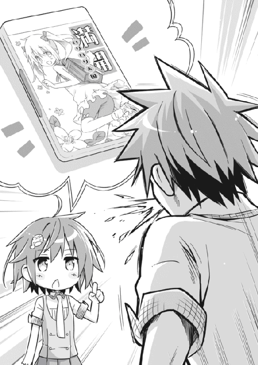
第二章 彼女の事情
１
紺野孝巳が心ならずも『お笑い研究会』に籍を置くことになり、すでに五日が過ぎた。
これまで有働瑠璃しかいなかったはずの研究会は、毎日必ず活動があるという無駄な勤勉さを有していた。顧問すらいない非公式の部活のくせに、どういう陰謀か少額ながら部費まで支給されているらしい。つくづく謎の伏魔殿だった。
活動といっても、特に何をするわけでもない。
孝巳が初めて訪れたときと同様、瑠璃は長机にグタリと伸びてお笑いビデオを漫然と眺めているだけ。時おり口を開くかと思えば、愚にもつかない無茶振りばかりだった。
「紺野くん。期末テストはどうだった？」
「......訊くなよ」
「そうだ。テストで一つ掛けてみたまえ。お題はテスト、さあ」
「な、何で俺がそんなこと」
「いいから早く。早く早く」
「く......テ、テストと掛けまして......出塁されたランナーと説きます」
「その心は？」
「返ってこなくて結構です」
「............二十点」
「何様だお前は！」
「君は本当に野球バカだね。パワプロくんの霊でも憑いてるんじゃない？」
「あいつは実在しない！」
と、万事がそんな調子で、孝巳は毎日ヘトヘトになって帰宅するのだった。運動部でもないのに何故これほど疲弊する必要があるのか......すこぶる不条理だった。
その日もホームルームが終わると、孝巳は重い気分で重い腰を上げた。
近頃は放課後が来るのが憂鬱である。狂暴なヤンキーで通っているはずの紺野孝巳は、今やクラス内で最終授業が終わるのを喜ばないただ一人の生徒になっていた。
（入部したからって、何もクソ真面目に顔を出す必要はないんだよな）
事故以来まともに体を動かしていないし、できれば放課後はリハビリやトレーニングに使いたい。いずれまた運動をやると決めたからには、落ちた体力を戻しておきたかった。
が、そんな決心をしかけるたびに、たちまち瑠璃の日本人形のごとき澄まし顔が脳裏に浮かぶ。
本人が言うには、彼女に予知能力があるというのは単なる与太話だったらしい。しかし、それが本当に冗談だったのかどうかは分からない。孝巳が帰り道で五十円を拾い、交番に行き、迷惑がる警官に半ば脅すように突き渡したのは事実なのだから。
できれば不興は買いたくない。有働瑠璃は尋常ならざる霊感を持ち、多数の怨霊をツアコンのごとくゾロゾロ引き連れている恐るべき危険人物なのだ。
（仕方ない、行くか）
しばし教室に佇立し思案を重ねたものの、ここでじっと悩んでいても掃除当番の邪魔になるだけだ。そう覚悟を決めて歩き出した孝巳の足は、しかし教室の扉を出たところでピタリと止まってしまった。
廊下は生徒たちが絶え間なく行き交い、いつもと変わらぬ賑わいを見せている。下校する者、部活へ向かう者、立ち止まって談笑している者......期末テストが終わり緊張が抜けているのか、普段のように孝巳に気付いて身をすくませる者は僅かしかいなかった。
「............」
孝巳は扉の前に立ち尽したまま、廊下の窓際に立つ一人の少女を見詰めていた。
長い三つ編みが印象的な、色白で細身の少女だった。見るからに儚げな雰囲気を醸し出しており、良く言えば清楚な優等生、悪く言えば目立たない地味っ子といった感じだ。頬に浮いたソバカスが、なおさらその素朴さを際立たせていた。
「チッ......」
教室の中を真っ直ぐに凝視する少女を眺めたまま、孝巳は知らず舌を打っていた。
別に、無遠慮に自分の教室を覗かれているのが気に食わなかったわけじゃない。少女が見覚えのない他校の制服なのを怪しんだわけでもない。
舌打ちの理由は、少女の全身が薄く透け、両膝から下が完全に消失していたからだ。
（また見ちまった）
最近の孝巳には、一つの深刻な問題が発生している。たまにだが幽霊を見るのだ。
小田切の一件まで、幽霊など見たことはなかった。が、一度霊に接したからか、はたまた瑠璃と一緒にいる機会が増えたからか、孝巳はそういった存在を感知、視認するようになってしまっていた。
電柱の陰、公園の片隅、人混みの中......見えてしまえば、彼らはどこにでもいた。みんな一様に青白い陰鬱な顔をしており、通説に違わず足がない。小田切と同じく怖い表情をしている者もいれば、無表情の者もいた。
貧しい知識で考察するなら、怖い顔をしていればおそらくそれは怨霊だ。目撃者か、引き留めた者か、とにかく誰かに「恨み」という存在理由を与えられた死者だ。そこにいる少女は、果たしてどちらなのだろうか......
（っと、駄目だ）
そこで我に返り、孝巳はすぐに少女に背を向け廊下を歩き出した。
（無視だ無視。誰にも見えてないようだし、ほっとけばいい）
霊たちに勝手な理由付けをしてはならない。たとえそれが肯定的なものだろうと、孝巳の意思などを不用意に付与するべきではない。
結局は放っておくのが一番なのだ。危害を加えてこないなら、無関係、無関心を決め込むに限るのだ。それが孝巳の決めた霊への方針であり、瑠璃からの忠告でもあった。
（クソッ。あのカッパ野郎に会ってからろくなことがないぜ）
心でボヤきつつ、足早に廊下を行く。少しばかり不便になった生活に、孝巳は改めて有働瑠璃を恨めしく思うのだった。
......ちょうど隣の教室前を通過したとき。
突然後ろから腕を掴まれ、孝巳は思わずビクリと身をすくませた。まさか少女の霊に目をつけられたかと、戦々恐々と振り向くと――そこに一人の生きた女生徒が立っていた。
腰まで届きそうなロングストレートの、女の子にしては背が高い大人びた少女だ。記章を見ると同じ一年生のようだが、凜と引き締まった白い顔は非の打ちどころなく整っており、息を呑むほどに美しい。皺一つない夏用制服を乱れなく着こなし、両耳サイドから垂れた栗色の髪が豊満な胸を飾っている。スラリと細い足が伸びるスカートは、まるで定規で計ったようにピッタリ膝上五センチだった。
「貴方、『お笑い研究会』の紺野孝巳くんね？」
孝巳の腕を掴んだまま美少女が言った。強い意思を感じさせる、高く澄んだ声だった。
「遺憾ながら、そうだ」
頷いて少女に向き直る。面識のない相手だ。この学校で孝巳に声をかける豪気な女子がいたことに、内心少し驚く。
「俺に何か用か？」
「私は鴫原翠。隣のクラスの人間よ」
用件を言う前に、美少女はまずそう名乗った。友好さの欠片もない刺々しい口調だ。残念だが、心躍る類の用事ではないらしい。
「その隣のクラスの奴がどうした」
「有働瑠璃」
鴫原翠が発した一言に、孝巳はたちまち訝しげに眉をひそめた。頭半個ほど低い彼女の顔を、改めて観察する。
つくづく西洋人形のように完成された顔立ちだ。日本人形の瑠璃とは、バストも含めまさに対極的な麗容と言える。
「貴方はどうして、アレと一緒にいられるの？」
睨むように孝巳を見上げながら、翠が尋ねてきた。いや、尋ねるというよりは、ほとんど非難に近い。
「有働瑠璃がどんな人間か、貴方は分かっていないの？ あの子には物凄い数の」
「怨霊が憑いてるって話か？ それなら知ってるよ」
翠の言葉を遮り、孝巳は辟易と嘆息した。なるほど、そっち系の人間か。
確かに瑠璃の罰当たりなポリシーを考えれば、あちこちに敵がいてもおかしくない。というか、味方がいる方がおかしい。もちろん孝巳も、仏に誓って瑠璃の味方ではない。
「でも、奴の事情なんてどうでもいい。俺は単に雑談相手やってるだけだからな。俺は霊感なんか一ミリもないし、一緒にいても霊的な息苦しさは感じないよ。別の意味じゃ死ぬほど息苦しいけどな」
「霊感がない？ 嘘ね」
薄紅色の艶やかな唇を吊り上げ、翠がにわかに後ろを振り向いた。
その数メートル先に、相変わらず窓際に佇む三つ編みの少女霊がいた。
「見えてるんでしょう？ 彼女のこと」
「............」
「彼女は、多少の霊感では見えない種類の霊よ。それが見える貴方は、もう普通とは呼べないわ。毒され始めているのよ、あの有働瑠璃に」
笑えない指摘だった。
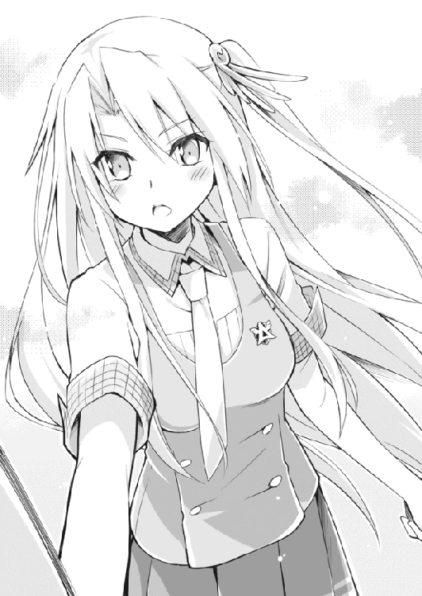
最近になって幽霊が見えるようになったのは、やっぱりあの怨霊長者の影響だったか。
「あんた、有働の知り合いか」
問いへの返答はなかった。孝巳は構わず質問を重ねる。
「あそこの霊が見えてるんなら、あんたもそれなりの霊感持ちってことだよな？ 祓ってやれないのか」
霊感の強い者は、不特定多数によってつけられた霊の存在理由を、強引に一つに決めてやることが可能だという。あの少女霊が何故こんな場所にいるのかは知らないが、霊能者ならばあの世へ送ってやることができるのではないだろうか。
「彼女は山根由香子。半月ほど前、自宅マンションから飛び降り自殺をした花小塚高校の一年生よ」
霊の素性を事もなげに語った翠に、孝巳は思わず気後れした。一度少女霊を見て、すぐまた視線を翠に戻す。
「あの幽霊を知ってるのか」
「調査は済んでいるわ。貴方に言われるまでもなく、私が送り還してあげるつもりよ」
そう言うと、翠がひときわ厳しい瞳で、孝巳を真っ向から射抜いてきた。まるで引力を持つかのような力強い瞳孔に、吸い込まれてしまいそうな錯覚に陥る。
「だから、あの霊には関わらないで。貴方だけじゃない。有働瑠璃にもそう伝えておいて」
もちろん、言われなくても関わるつもりなどない。伝言を頼むというなら、それぐらいは請け負おう。
「それから、貴方のクラスの瀬戸川圭太くん。彼にも近付かないで」
「瀬戸川圭太？」
名前を挙げられたものの、記憶の中に該当人物はいなかった。
高校生になって三ヵ月半、教室にろくな話相手もいない孝巳は、未だクラスメートを半分も覚えていないのだ。自分はそれほど浮いた存在なのだと、改めて気が滅入る。
「山根由香子さんがここにいるのは、瀬戸川くんが原因よ」
「それはつまり......」
三つ編み幽霊・山根由香子は、その瀬戸川とやらを恨んでいるということか？ 否、瀬戸川自身が由香子にそういう理由を与えてしまっている、ということか。
腕を組んで唸る孝巳に、翠は「用件はそれだけよ」と一方的に話を打ち切った。
「山根さんと瀬戸川くんに関わらないこと。それから、貴方も一刻も早く有働瑠璃と手を切ること。くれぐれもお願いするわ」
「お、おい、ちょっと待てよ」
立ち去る翠を慌てて追おうとしたが、孝巳の足は一歩目で止まった。廊下の向こうから、三年の武本京也がやってきたのが見えたからだ。
武本は翠に片手をヒョイと上げ、「待ったか？」などと親しげに声をかけている。続き一度だけ孝巳にも片手を上げてくると、そのまま翠を伴って廊下を引き返していった。
瞬く間に去ってしまった二人を見送りながら、孝巳はしばしポカンと突っ立っていた。
（一体何だったんだ......）
鴫原翠とかいう謎の女は、武本の彼女だったのだろうか。話をした感じから、武本のような人種をあまり快く思わない潔癖タイプだと思っていたのだが。そもそもあの軟派な金髪ロンゲ不良に、あれほどの美少女はあまりにもったいない。
（というかあの女、結局三つ編み幽霊を放置して帰りやがった）
視線を向けると、山根由香子なる幽霊は依然として教室の中を見詰めていた。行き交う生徒たちは誰一人彼女に気付かない。その様がことさら物悲しさを引き立てている。
「......俺には関係ない」
自身に言い聞かせるように呟いたが、胸中には黒い雨雲が立ち込めていた。
２
その日からというものの、山根由香子の霊は頻繁に廊下に出現した。
いや、もしかしたら彼女は、以前からずっと現れていたのかもしれない。単に霊感のなかった頃の孝巳には、他の生徒たちと同じく感知が不可能だっただけなのだろう。
鴫原翠から聞いた瀬戸川という男は、クラスでもあまり存在感のない人物だった。
高校生にしては背の低い、モヤシのようにヒョロリとした少年。見るからに気が弱そうで、色が白く、こいつも充分幽霊みたいだと孝巳は思った。いつも数人の男女グループの中に交じっているが、仲間外れにされないよう懸命に周りの機嫌を窺っているような、そんな卑屈さを感じさせる男だ。
翠の言葉は、その日のうちに瑠璃に伝えておいた。彼女は鴫原翠の名を聞くと、器用に顔面の右半分だけをしかめ「言われなくても関わらない」と不機嫌に言い捨てていた。
「紺野くん、あの女に関わるのはやめたまえ。鴫原翠という女は、欠片もお笑いセンスを持ち合わせていない天然マヒャド人間だ。あまり近寄ると凍死するよ」
「お前ら仲悪いのか？ 霊感女同士、火花散らしてるってか」
「フン、『霊感女』の称号なんて翠にくれてやるさ。私には『爆笑王』の称号と、『ミス青鶴高』の称号があればそれでいい」
「その二つは同時に成立するのか？」
思った通り有働瑠璃と鴫原翠は、既知でありながら互いを好ましく思っていない間柄のようだった。どちらもかなり強い霊感の持ち主みたいだが、鴫原翠のそういった噂を孝巳はかつて耳にしたことがない。翠について判明したことと言えば、青鶴高校においてその美貌を知らぬ者はいない、孝巳や瑠璃とは別の意味での有名人ということくらいだ。
どうやら彼女の正体を知っているのは、瑠璃を含めごく一握りの人間だけらしかった。
鴫原翠との一幕から四日が経った金曜日の放課後。
孝巳は何度か躊躇した末に、とうとう瀬戸川圭太に声をかけてしまった。
あれからというものの、翠は一向に山根由香子の成仏に乗り出す気配がない。毎日のように武本と一緒にさっさと下校してしまい、廊下にポツリと立つ由香子のことなど、全くノータッチのままなのだ。
それに不審を感じたのも原因の一つだったが、孝巳は瀬戸川の身が純粋に気掛かりだったのだ。怨霊に憑きまとわれる難儀は、嫌というほど知っているから。
「おい、瀬戸川」
「ひっ」
掃除用具をロッカーにしまい、鞄を提げて教室を出ていこうとした瀬戸川は、そんな情けない声と共に大袈裟に体をすくませた。まさか学校一のヤンキーに声をかけられるとは思っていなかったのか、不自然なまでにぎこちなくカクカクとこちらを振り向く。
「は、はい......何でしょう紺野くん」
「敬語は必要ないよ」
なるべく気さくな感じで笑ってみせたが、瀬戸川は蒼白のまま「と、とんでもありません！」と千切れんばかりに首を振ってきた。声が裏返っていた。
「心配すんな、別に殴ったりしない。俺は無害な人間だ」
微塵も説得力がない断りを入れ、おののく瀬戸川を教室後方に連れていく。事態が呑み込めない彼は、今にも泣き出しそうに顔を引き攣らせ孝巳に従った。
「あの、僕......お金なんて全然持って......」
「......カツアゲじゃないっての。ちょっと訊きたいことがあるだけだよ」
軽く傷付きながらも言い放ち、次いで教室の外を指差して単刀直入に質問する。
「お前、アレが見えてんのか」
「えっ？」
「花小塚高校の山根由香子っていったか？ あの幽霊、お前に憑いてるのか」
瀬戸川は言葉を失ったまま、驚きとも焦燥ともつかない眼差しを孝巳に向けていた。やがて返答に迷い果て、忙しなく眼球を上下左右に動かし始める。明らかに挙動不審だ。
「こ、紺野くん、どうしてそんな......」
「ああいや、別に深い意味はないんだ。お前はその山根由香子ってのと、何か因縁でもあるのかと思ってな」
「べ、別に......」
瀬戸川が首を振る。言葉とは裏腹に、彼が由香子を知っているのは一目瞭然だった。
「言いたくないなら、無理には訊かない。見たところ霊障の類も受けてないようだしな」
「............」
「ん？ もしかして、受けてんのか？」
黙り込んだ瀬戸川の顔を覗き込んだとき、いきなり孝巳の後頭部がパシーンと乾いた音を上げた。背後から平手打ちされたのだとすぐに悟り、目を剥いて振り返る。
見ると、そこに瑠璃が立っていた。
泣く子も黙る紺野孝巳の後頭部をはたいた彼女に、瀬戸川をはじめとする教室に残っていた生徒たちが水を打ったように静まり返った。
「紺野くん、何を油を叩き売ってるんだい」
緊張する空気の中、猫っ毛のショートカットがそう言って唇を尖らせる。
頭を擦りながら「叩くことないだろ」とささやかな抗議をしただけの孝巳に、固唾を呑んでいたギャラリーが一瞬ザワリとした。
あの紺野孝巳が、叩かれたのに報復しない。手足を折り、頭蓋を砕き、腹を裂いて内臓を取り出し、滴る血をすすり舐めない......みんなの視線が、そんな驚愕を物語っていた。
「ホームルームが終わったんなら、真っ直ぐ部室に来なきゃ駄目じゃないか。困るよ、これからはコンビとして活動していくのに」
「そりゃ俺への死刑宣告か」
「さあ、部活だよ。犯罪者ヅラ下げてないで、さっさと来たまえ」
「はぁ......お前は何でそう一言多いんだろうな」
仕方ない。瀬戸川とはまた改めて話をすればいい。何より教室内の困惑と好奇の視線に、今や孝巳はこの上ない居心地の悪さを感じていた。
「紺野くんは」
不意に瀬戸川が独り言のようにポツリと呟いた。
「紺野くんは......有働さんと知り合いなの？」
瀬戸川の視線は、孝巳を通り越して瑠璃に向けられていた。
確かに瑠璃は、学校では孝巳に並ぶ有名人だ。もっともそれは『お笑い研究会』ではなく、『お祓い研究会』としての有働瑠璃なのだが。
「ああ、いや、知り合いっていうか」
歯切れ悪く弁解しようとした孝巳を差し置き、瑠璃が渾身の勢いで頷いた。
「紺野くんは、私の相方なんだ」
意味が分からず、瀬戸川が「あ、相方？」と首を傾げる。そりゃそうだ。
「うん。彼はすでに数え切れないほど、私に突っ込んでいる。入れまくりだ」
教室に一段と動揺が走る。皆が今の言葉をどう解釈したかは、想像に難くなかった。
「おい有働！ そういう誤解を招く説明は――」
「よほど私に入れるのが好きなようでね。もう隙あらばという感じだよ。若干激し過ぎるきらいがあるから、もう少しテクニックを磨いて欲しい」
「そ、そうなんですか......」
瀬戸川は目を白黒させたのち、「それじゃあ僕はこれで」と逃げるように教室を駆け足で出ていってしまった。
「おい瀬戸川！ 違うぞ！ それは違う！」
慌てて声をかけたが、すでに彼の姿はなかった。孝巳はしばし虚しく扉を眺め、やがて脱力して傍らの机にヨロリと手をついた。
「あいつ......絶対勘違いしてやがる」
「間違いないね」
してやったりと満足げに目を細めた瑠璃に、憤怒の目を向ける。
「どういうつもりだ、お前」
「認識の齟齬は笑いの王道だ。私は別に嘘は言っていない。が、彼はそれを違う意味に、おそらくは性的な意味合いに捉えたはずだ。コントの滑り出しとしては申し分ない」
「何でコントを始めた！」
孝巳が怒鳴ったのを合図に、クラスメートたちが一斉に教室から退出した。凶悪なヤンキーが怒号を上げたことに、危険回避の本能が働いたのだろう。
すっかり無人の空間となってしまった教室に絶望し、孝巳は肩を落としてフラフラと歩き出した。瑠璃が気にした様子もなく、軽い足取りでトコトコとついてくる。
またビビられた。自分は、周囲に更正をアピールするために『お笑い研究会』に入ったのではなかったか？ なのに教室でこんな風に猛っているようでは、評判は地に墜ちる一方だ。しかもその原因が瑠璃なのだから、笑い話にもならない。研究会への入部は、今のところ完全に逆効果だった。
教室を出ると、廊下に山根由香子の霊はいなかった。
おそらく瀬戸川についていってしまったのだろう。そんなことをふと考え、孝巳は思わず瑠璃に尋ねていた。
「なあ有働。お前がここへ来たとき、そこに幽霊がいたか？」
「いた」
瑠璃には山根由香子の一件は話してある。鴫原翠の「関わるな」という忠告を伝える以上、当然の流れだった。
「そういえば、いなくなってるね。瀬戸川くんが帰ったからかな？」
「てことは、やっぱり瀬戸川は......」
「うん、憑いてるね」
「ラッキーみたいに言うな。あれはやっぱり......怨霊なのか？」
「興味ないよ、霊のことなんか」
けんもほろろに言い捨てると、瑠璃がいきなり孝巳の前にピョンと飛んで立った。
腰の後ろで手を組んで、ニコニコと上機嫌にこちらを見上げている。何かろくでもない目論見を告げようとしているのだと、孝巳は直感で悟った。
「それより、朗報があるんだ」
「聞きたくねぇな」
「どうして？」
「間違いなく悲報だからだ」
「いやいや、これは掛け値なしの朗報だよ。まあ聞きたまえ」
瑠璃がわざとらしく咳払いをして、次いで悪人のようにフッフッフと笑った。
「紺野くん。次の日曜日は、必ず予定を空けておくように」
「はあ？」
「欠席は認めない。告別式だろうと、出廷日だろうと、全てキャンセルしたまえ」
「な、何を言ってんだよ」
鼻白む孝巳に、瑠璃はまた一つコホンと咳払いした。芸のない勿体振り方だ。
「来る日曜日、私たちの初舞台が決定した」
......何、だと。
「今日を含めあと二日しかないけど、根を詰めれば何とかなるよ。頑張ろうじゃないか」
......何、やと。
「公演場所は、青鶴町三丁目の養護老人ホームだ。全員笑い死にさせてやろう」
「お前は不謹慎のチャンピオンか！」
もはや周りへの配慮など気にも留めず、孝巳は爆発した。
「何だそりゃ！ 何でそうなるんだ！ 何を勝手に営業取ってんだ！」
「こういった地道な活動を疎かにするものではないよ。老人ホーム、結構じゃないか。場所や相手を選ぶべきじゃない」
「殊勝かつ横暴なこと言ってんじゃねぇ！ 大体お前、ボランティア精神は枯渇してたんじゃないのかよ！」
「これは慈善じゃなくて趣味だもの。実践のステージは、私たちにも多大に得るものがある。実入りはないけど収穫はあるよ。それで納得したまえ」
気付けば孝巳は眉間を押さえ、過呼吸に陥りながら壁に寄りかかっていた。腰に力が入らなかった。目眩と頭痛が尋常じゃなかった。
「設定コントは、老人には分かりにくいだろう。ネタは漫才にするべきだと思う」
瑠璃に手を引かれ、自分も老人になったようにヨボヨボと歩き出す。瀬戸川のことなど記憶の彼方へ吹き飛んでしまっていた。
「最近の流行を織り交ぜるのは賢明じゃない。でも反面、必要以上に媚びるのもどうかと思う。あくまで人口に膾炙した話題を軸に、我々の持ち味を損なわない掛け合いを......」
熱っぽく語る瑠璃の言葉など、今の孝巳にはどうでもいいものだった。「我々の持ち味」なるものが何なのか知らないし、知りたくもなかった。
（俺は、何をやってるんだ......）
球児だった奴が落ちぶれて、霊が見えるようになって、今度は漫才......これではまた小田切が化けて出かねない。奴は改めて言うだろう。「お前、バカだろ」と。
二人の有名人の行進に、例によって廊下の人波が割れていく。怯える視線が左右より突き刺さる。知ったことか。何なら今すぐ世界など終わればいい。
鈍い頭痛が治まらない中、孝巳は結構本気でそう思った。
３
「皆さんこんにちは。私たちは青鶴高校の『お笑い研究会』です。今日はちょっと近くを通りかかったので、漫才をやらせて頂きます」
「いや、まさにそのために来たんだよ」
「それにしても、ここは綺麗な人が多いですね。お婆さん方、みんな女優さんみたいで」
「あざとく機嫌を取らなくていい。媚びは売らないんじゃなかったのか」
「いやでも、見なよ紺野くん。みんな若々しくてスタイリッシュで......今からここのお婆さん方を、レディー・ババと呼ぼう」
「叩き出されるぞ」
「まぁそれはいいとして。今日はみんなの知っての通り、日曜日だ」
「そうだな。日曜に何やってんだろうな、俺たち」
「時に紺野くん、日曜日と言えば何かね？」
「は？ 何って言われても......」
「日曜日と言えばアレじゃないか。ねえ皆さん？ 分かりますよね？ はい、そこのお爺ちゃん！ そうお前！」
「お前って言うな！」
「正解！ 日曜と言えば、あの夕方の長寿番組です！」
「いや聞けよ！ あの人まだ何も答えてねぇし！」
「日曜日の夕方と言えば、やっぱりあの『スマイルポイント』なわけです」
「何で英語で言うんだ」
「あの番組の大喜利を見るのは、もはや日本国に生きる者の義務と言ってもいいよね」
「んなワケあるか。あんなもん、毎週似たような内容じゃないか」
「......何だって？」
「毎週同じようなことやってる、って言ったんだ」
「山田くん！ こいつの臓器、全部売っちゃって！」
「山田はいねぇよ！ そして奴はカタギだ！」
「紺野くん、君の暴言は耳に余る。君はあの六賢人を舐めているのかい？」
「賢人もクソも、ありゃ台本があるんだろ？」
「何と愚かな......君はそれでも私の相方かい？ 君ごときに小遊三の何が分かると？」
「何で小遊三だけなんだ。名前まで知らないし、青い着物の人でいいだろ」
「知らないなら教えよう。彼の発想、閃きは神の領域に達している。視聴者を嘲笑うかのように下ネタ、不謹慎ネタ、正統派の回答を使い分けるその頭脳は、かの伏竜や鳳雛にも比肩する。回答者の先陣を切って上手から颯爽と現れるその勇姿は、さながらゼウスだ。まさに笑いの申し子、青い巨星、ブルージャスティス......それが小遊三だ」
「お前は小遊三の何なんだ」
「君も毎週ブルーレイに高画質録画して勉強するといい。彼らの回答は、どれを取っても秀逸だから」
「ピンクの着物の人もか？」
「あいつはどうでもいい」
「何で！ じゃあ紫の着物の人はっ？」
「あいつもどうでもいい」
「他の着物は！」
「カラフルでいいんじゃない？ それより小遊三だ、彼は本当に才能豊かで......」
「ただの小遊三フェチじゃねぇか！」
絶望的かと思われたそのネタは、何の奇跡か老人たちにそれなりに受けていた。
前日に部室で泊まり込みまでさせられた挙げ句、出来たネタは謎の小遊三ラッシュ......あのあとも十分以上に渡り小遊三まみれの会話が展開された。
ちなみに孝巳は、今回のネタをするまで三遊亭小遊三を知らなかった。今さらだが年配の落語家に呼び捨てはどうかと思う。
「ウフフ、上々だったね」
老人ホームを辞去した帰り道。
瑠璃は上機嫌に鼻歌などを唄いながら、先ほどから自画自賛をエンドレスに繰り返していた。孝巳の横でカッパ型のヘアピンが大きく上下しているのは、彼女がスキップを踏んでいるからだ。
「出たとこ勝負の感は否めなかったけど、小遊三を信じてよかった」
「言っとくがな、あのクソネタが受けたのは俺らの実力でも小遊三の加護でもない。単に爺ちゃん婆ちゃんが優しかったからだ」
「確かに慢心は駄目だね。とはいえ、初舞台であれだけやれれば及第点だよ。君はさすがに私が見込んだ相方だ」
いつもの無愛想から考えれば極上と言っていい笑顔を向けられ、思わず毒気を抜かれてしまう。認めるのは悔しいが、こいつは笑うと意外に可愛い。鴫原翠のような成熟さとはまた違った、飾らない無垢な魅力が彼女にはある。
が、誉められている内容が内容だけに、気分は複雑だった。
孝巳は、お笑いに生きるつもりなど毛頭ない。幽霊が身近にいる世界で図太く生きていける自信もない。「お笑い」と「怨霊」という二大成分で構成されている瑠璃とは、住む世界が根本から違うのだ。
「......有働。お前って、人より霊感が強いんだよな？」
機嫌がいいこともあってか、瑠璃は素直に「うん」と頷いた。
「だからお前は十数人もの霊に自分を呪わせ......憑かせている」
「みんなすでに色々な理由付けをされていたからね。私が一つに決めてあげた」
「それが何で『恨み』なんだ？」
それはもう、ずいぶん前から抱いていた疑問だった。
あえて自分を恨ませる必要がどこにある？ 利用するにしても、危険な怨霊ではなく、守護霊みたいなものにすればいいはずだ。霊にそういう理由を与えることなど、瑠璃なら雑作もないだろう。
「君の言いたいことは分かるけど、理由なんて簡単だ」
瑠璃は事もなげに言うと、茜色に染まりつつある空を見上げた。
気付けばもう夕方だった。午後二時からの漫才披露のあと、何だかんだ老人たちとコミュニケーションを交わしているうちに、結構な長居になってしまったのだ。
「確かに守護霊っていうのは、憑いた人間を守ってくれる存在だ。霊をそういう風に活用している人間は珍しくない。並大抵の力じゃ無理だけどね」
「お前なら守護霊にできたんじゃないのか」
「できた」
「なら、何でそうしなかったんだ。怨霊より守護霊の方がいいだろ」
そう問うと、瑠璃は腕を組みつつ、左右に首を傾けながら小さく唸り出した。ヒクヒク動く小鼻がまるで子犬のようだった。
「守護霊は何体も憑けることができないんだよ。というか、意図的に憑けること自体が大仕事なんだ。中には二体も守護霊を憑けてる異才もいるけど、そんなのは例外中の例外だ。これは修行でどうにかなるもんじゃない。先天的な素質、血筋で決まるんだ」
「要するに才能ってことか」
「それを持たない者が複数の霊を憑けようとするなら、こういう形しかない。怨霊なら憑けたい放題だしね。私は質より量を重視する人間なんだ」
つまり守護霊と怨霊は、ネズミを駆除するために「罠を使うか」と「ネコを飼うか」の違いに似ているのかもしれない。「使用」と「利用」の違いというわけだ。
「お前にとって霊は、護身のために利用する、言っちまえば暮らしの知恵ってことか......」
「まあね。役に立つものは使うし、立たないものは放っておく。リサイクルの延長だね」
確かに合理的な考え方なのだろう。しかし。
「やっぱ納得いかねぇ。お前の考え方に、俺は頷きたくない」
霊とは、かつて生きていた人間の残片だ。
それを他人が勝手に拾い、勝手に有効活用していいのだろうか？ そこに何ら葛藤を感じない瑠璃は、やはり心のどこかが欠落している人間ではないのか？
「心外だね。お金や貴重品を着服してるわけじゃないんだから。君はゲームでアイテムを見付けても、自分の物じゃないからと拾わない人間なのかい？」
そういうことじゃない。所有権の有無といった法的な問題ではなく、もっと人道的、道徳的な観点で語りたいのだ。故人の魂は、物と同様に扱っていいものではないはずだ。
「いいじゃないか。私が憑けてる霊なんて、もともとすでに怨霊だった。ほっといたらどれだけ悪さを働いてたことか。私は自分を恨ませることで、彼らが引き起こしていただろう被害を未然に防いだんだ。聖女とは呼ばれても、悪女と呼ばれる謂われはない」
「そりゃそうなんだろうが......」
「大体さ、君も小田切くんの一件で理解したとは思うけど、基本的に霊っていうのは引き留めた本人が解放してやるのが一番なんだ。他者が無理やり理由付けしたところで、それはやっぱり嘘っぱちだし、気休めに過ぎない。だから私はそんなことはしない」
詭弁だと思う。が、孝巳には反論の言葉が浮かばなかった。
「言っておくけど私は、私に憑いている霊をこの世に引き留めた張本人に会ったなら、丁重にお返しするつもりだよ。ご希望とあらば紺野くんにしたように、成仏させる手助けをしてやってもいい」
そういうフォローをするだけの親切心は持っているらしい。孝巳は少しだけ安堵した。
「まぁその際はお金を取るし、別の新しい怨霊を補充するけど」
安堵した自分が馬鹿だった。
４
それからブラブラと連れ立って歩いていると、すでに駅前が間近だった。
瑠璃は怨霊談義に嫌気が差したらしく、再び漫才成功の喜びに終始していた。「今度は刑務所で慰安漫才をしようか」などと興奮気味に話す彼女を、孝巳は適当な相槌であしらい続けた。そのサービス精神を、霊関係にも少し向ければいいのに、と思いながら。
「私は電車だ。紺野くんは？」
駅舎を向こうに臨む大きな十字交差点が迫ると、瑠璃がそう訊いてきた。
彼女は先ほどから、何故かしきりに腕時計に目をやっている。このあと何か用事でもあるのかと尋ねてみると、返ってきた答は悲しいほど得心がいくものだった。要はこいつは、例の長寿番組が始まるまでに帰宅したいのだ。
「俺はチャリだよ。駅前に停めてある」
「巷で恐れられる凶悪ヤンキーが自転車かい？ ハーレーとかトライアンフに乗りなよ」
「そんな金はねぇし、俺は不良じゃない。鈍った足腰を少しでも鍛え直しときたいんだ」
「鍛えたいなら、自転車に鉛でも付ければいいんじゃない？」
「速度が徒歩と変わらなくなるだろ」
「じゃあ鉄の甲冑を着込んで」
「光景がシュール過ぎるぞ」
「自転車を背負って走れば」
「本末転倒だろ！」
「そのまま日本一周すれば」
「帰還が絶望的だ！」
「だからハーレーに乗るんだよ」
「俺は一体何がしたいんだ！」
またしてもまんまと全力で突っ込んでしまうと、瑠璃はさも愉快そうに腹を抱えてケタケタ笑った。こんなだから、こいつが調子に乗るのだ。
横断歩道で信号待ちをしている人波の最後尾に、二人して並んで立つ。まだ信号は変わる気配がなく、片側三車線ある車道を様々な車両が絶え間なく駆け抜けていた。
「とにかく今日はもう解散だ。いいか、二度と勝手にワケの分からない営業取ってくるなよ。老人ホームはもちろん、刑務所も駄目だ」
「いいじゃないか、減るもんじゃなし」
「俺の神経は確実にすり減ってるんだよ！」
孝巳の大声に、前方の数人が振り返った。不審げな眼差しを受け、孝巳はそれ以上言葉を継ぐことができなかった。駄目だ、ツッコミが癖になりつつある。
腹立たしげに正面を向いたとき。
孝巳はふと前方に、見覚えのある後頭部を見出した。
「ん？」
それは、瀬戸川圭太だった。人波の最前線にぽつねんと佇み、信号が青になるのを待っている。どうやら一人のようだ。
（瀬戸川......）
漫才の一件のせいで不覚にも失念していたが、彼には山根由香子の霊が憑いているのだ。
霊障の有無を尋ねた際、無言でうつむいた彼の姿が蘇る。どうして瀬戸川は何も言わなかったのだろうか。もしや彼は、由香子から何らかの干渉を受けているのでは？
傍らに目をやると、瑠璃は相変わらず腕時計を気にしていた。小柄な彼女には、瀬戸川が見えていないのかもしれない。
（鴫原には関わるなと言われたけど......）
その鴫原翠も、未だ行動を起こす様子はない。「貴方に言われるまでもなく、私が送り還してあげるつもりよ」などと大言を吐いておきながら、どういうつもりなのだろうか。
瀬戸川が本当に霊障の被害に遭っているとしたら、一刻も早く手を打つべきだ。このまま放置していいはずがない......そんなことを考えていたときだった。
フラリ、と。
瀬戸川が夢遊病者のように、足を一歩踏み出した。信号はまだ変わっていない。車道では車の奔流が引きも切らず続いている。
嫌な予感がした。気付けば孝巳は人波を掻き分け、大急ぎで瀬戸川に向かっていた。
（まさか、あいつ）
右手の道から、大型トラックがスピードを落とさず迫ってきていた。
瀬戸川はそちらを見向きもしない。フラフラと左右に揺れながら、さらに足を一歩踏み出す。すでに体の半分以上が車道へはみ出ていた。
「瀬戸川！」
孝巳は声を張り上げ、三歩目を出そうとした瀬戸川の首根っこを掴み、引き戻した。
華奢な瀬戸川の両足は、孝巳の片腕一本で軽々と宙に浮き、そのまま地面に尻餅をついた。直後、目の前をトラックがクラクションの怒声と共に猛然と通り過ぎていく。
「......え？ あれ？」
事態が呑み込めず呆けている瀬戸川に、孝巳は周囲の視線も構わず雷を落とした。
「馬鹿野郎！ 死ぬつもりか！」
「こ、紺野、くん......？」
「大型車両に吹っ飛ばされるのがどんなに痛いか、お前分かってんのか！」
胸ぐらを掴んで強引に立たせる。
いつの間にか後ろへやってきていた瑠璃が、「経験者だもんね」と茶化してきたが、孝巳はそれを無視して瀬戸川を一発小突いた。瀬戸川がキャンと情けない声を上げた。
「瀬戸川。お前、憑かれてんのか」
「............」
「今、山根由香子に何かされたのか」
彼女の姿を孝巳は見てはいないが、その可能性は高い。
孝巳には、全ての霊が視認できるわけではないのだ。現に瑠璃に憑いている十数体の怨霊とやらも、まだ一度も見たことはない。何より山根由香子は、「多少の霊感では見えない種類の霊」だと鴫原翠が言っていた。
間もなく信号が青になると、孝巳たちの様子を窺っていた歩行者たちが一斉に歩き始めた。一連の救出劇に唖然としていた彼らだが、瀬戸川が無事だったこともあり、各自の目的に復帰したようだ。
孝巳は依然として瀬戸川をその場に捕らえたまま、彼の顔をじっと見据えていた。この期に及んでは、捨て置くわけにもいかない。そう腹を決めて瀬戸川の返答を待つ。
......長い逡巡ののち、瀬戸川が諦めたように口を開いた。
「由香子は、僕を恨んでいるんだ」
青白い顔で、オドオドと孝巳と瑠璃を上目遣いで見てくる。
「それでいいんだ。当たり前なんだ。僕は......そうされるだけのことをしたから」
孝巳は片眉をひそめ、意見を求めるように瑠璃を見た。
しかし彼女は瀬戸川のことなどまるで興味がないように、またしても腕時計をチラリと確認するだけだった。そわそわ加減が先ほどより酷くなっている。
仕方なく瀬戸川に向き直り、孝巳は話を続けた。
「それはどういう意味だ？ 山根由香子が死んだ理由に、お前は何か関係があるのか」
瀬戸川が再び黙り込む。どうもここで尋問を繰り返していても、埒が明かないようだ。
間もなく青の歩行者信号が点滅を始めると、慌てて瑠璃が片手を上げて「じゃあ私はこれで」と駆け出した。
「お、おい有働！ 待てよ！」
「急がないと間に合わない。私は小遊三に勝利報告に行く！」
横断歩道の途中で振り返り、また片手をシュタッと上げてくる。
「こいつはどうすんだ！ ちゃんと瀬戸川の話を」
「聞く価値のない話だよ。その問題は翠にでも任せておきたまえ。ほなまた！」
わざとらしい関西弁でそれだけ告げると、瑠璃はスカートの裾を翻して行ってしまった。パタパタと走り去っていく小さな背中が、程なく通行人の人波に消えた。
信号が変わり、停止していた車たちが発進する。あとには学校屈指のヤンキーとモヤシだけが残された。
孝巳は途方に暮れ、シュンと萎れる瀬戸川を前に頭を掻くしかなかった。
「由香子とは、中二の頃から付き合い始めたんだ」
その後。孝巳と瀬戸川は駅前の広場へと赴き、片隅にある小さな噴水の縁に並んで腰を下ろした。瀬戸川がこのまま口をつぐむようなら引き下がるしかなかったのだが、彼はどうやら話をする気になったようだ。
「お互い図書委員で、話がよく合ったんだ。由香子も地味な方だったから、地味な僕と相性が良かったのかな」
孝巳は「ふぅん」と返しながら、缶コーヒー（もちろん奢らせてなどいない）を一つ呷った。確かに、学校の廊下で見た山根由香子はそんな印象だった。
「でも、結局別れたんだ。高校に入ってすぐ」
もともと暗い瀬戸川の声のトーンが、さらにもう一段階沈む。項垂れた彼のマッシュルームのような頭髪は、よく見ると少し脱色していた。自己主張の弱い彼の、精一杯のお洒落なのだろう。
「由香子がマンションから飛び降りたのは先月なんだ。六月の、中旬辺り」
六月。皮肉にも小田切の死と同じ時期だ。
「僕たちが別れたのは、入学して間もない四月の中旬くらいだった」
つまり山根由香子の自殺は、瀬戸川と破局して二ヵ月後に行われたことになる。
思い悩み続けた末の、気の迷いだったのだろうか。それとも、その二ヵ月の間に何かがあったのだろうか。
「あまり立ち入るつもりはないが......何で別れちまったんだ？」
「取られたんだよ。別れさせられたんだ」
「え？」
「由香子と別れないと半殺しにするって。毎日そうしてやる、って」
......話がおかしな雲行きになってきた。それはつまり、横恋慕による第三者の介入ということか？
「由香子に一目惚れしたんだって。僕みたいなのは、由香子とは釣り合わないって......」
「何だそれ？ で、お前はそれにビビって別れたってのか」
無言で肯定する瀬戸川を、改めて小突いてやりたくなった。ヘタレた奴だとは思っていたが、まさかここまで筋金入りだったとは。
孝巳の刺すような視線に耐えながら、瀬戸川が声を絞り出す。
「僕は由香子を差し出して逃げた。それから由香子は彼の......武本さんの彼女になった」
「武本？」
いきなり現れた聞き覚えのある名に、孝巳は思わず体ごと向き直った。
「それってまさか、ウチの三年の、あの武本か？」
瀬戸川が弱々しく頷く。
「最初は頑張った。でも、言った通り毎日メチャクチャに殴られて......もう限界だって漏らした次の日に、由香子は武本さんのところへ行って......武本さんのものになった」
どこで見掛けたのかは知らないが、とにかく武本は山根由香子を見初め、彼女の恋人である瀬戸川を脅迫してきた。そして、目的通り由香子を奪った。
「それからは、全く連絡が取れなくなった。電話もメールも拒否された。由香子が死んだあと、彼女の友達から聞いた。由香子は......妊娠してたって」
孝巳は知らぬうちに、「あの野郎」と唸っていた。
金髪ロンゲのあの女たらしは、今では頻繁に違う女を連れ歩き、さらに最近では鴫原翠と親密な関係にある。......やっぱり入学初日のときにぶちのめしておくべきだった。
「由香子の霊が僕に憑いてることは、知ってる。僕を恨んでることも知ってる。僕は由香子を裏切って逃げたんだ。恨まれるのは当たり前だ」
罪の意識。その後ろめたさ。そんな思いから瀬戸川は、由香子をこの世に引き留めた。そして負の意思を与え、彼女を怨霊にしてしまった。
（クソ、何てこった）
瑠璃や翠の言う通り、やはり立ち入るべきではなかったのかもしれない。が、知ってしまったものは仕方ない。
今の状況では、山根由香子があまりにも救われない。自分の人生を滅茶苦茶にした武本を恨むならまだしも、彼女は愛していた瀬戸川を呪わせられているのだ。それも、当の瀬戸川本人から与えられた意思で。
「瀬戸川。俺が言えた義理じゃないけどな」
長い沈黙ののち、孝巳は厳粛な口調で言った。
「自分を犠牲にしてまでお前を助けた山根が、恨んでると思うか？ 今さらお前を」
瀬戸川は何も答えない。
「お前の話が本当なら、武本をボコるのも悪くない。でも、そんな意趣返しは何の問題解決にもならない。そもそも今の俺は、お前も同じくらい気に食わねぇよ」
左手でスチール缶を握り潰してみせると、瀬戸川が小さく悲鳴を上げた。利き手ほどではないが、握力は投手時代に嫌というほど鍛え抜いた部分だ。
「お前は、未だに山根由香子を苦しめてる。それが何より気に食わない」
「え......」
「このままじゃお前、マジで祟り殺されるかもしれないぞ。お前はそれを覚悟してるようなこと言ったけどな、俺は......山根にそんなことをさせたくない」
立ち上がり、空を見上げる。夕日はすでにビルの向こうに沈み、頭上には薄く星が瞬き始めていた。
胸に去来するのは、友人の顔。孝巳自身の身勝手な後ろめたさで怨霊にしてしまった、小田切の顔だった。
「きっと彼女はそんなこと、望んじゃいなかったはずだからな」
５
散々な土日だったせいで、全く休んだ気がしなかった。金曜日の次にすぐまた月曜日が始まったような気分だった。
学校へ行くと、瀬戸川は相変わらず友人に愛想笑いを浮かべ、必死に話を合わせていた。
自身に降りかかっている問題を脇に置いてまで、彼がああも日常にすがりついているのは、もしかしたら山根由香子や武本のことを何とか忘れようとしている故なのかもしれない。辛い過去を振り切り、新しい生活に生きようと腐心しているのかも。それは滑稽ながら、涙ぐましい姿と言えなくもなかった。
（でも、山根由香子の怨霊を憑けたままじゃ、瀬戸川が過去と決別できるはずがない）
放課後が来ると、孝巳は早々に教室を去り、『お笑い研究会』の部室へと向かった。
今日も廊下では、三つ編みの少女霊が凝然と教室を覗いていた。
昨日の瀬戸川の話を瑠璃に打ち明けてみたものの、案の定彼女はさしたる興味を示さず、椅子をギコギコと傾けてくわわと欠伸するだけだった。ショートカットの柔らかな黒毛には、今日もカッパのヘアピンがくっついていた。
しかし唯一、山根由香子が自殺時に妊娠していたことを聞いたときだけ、切れ長の目を孝巳に向けて「それ、確かなのかい？」と確認してきた。
「ああ。山根にとっちゃ、それがダメ押しになったんだろうな。やりきれない話だ」
「昼ドラだね」
山根由香子は遺書の類を何一つ残しておらず、結局彼女の自殺は突発的な衝動によるものだと片付けられたそうだ。
瀬戸川は報復を恐れ、最後まで武本の名前を出すことができなかったらしい。その腰抜け加減に改めて腹が立ったが、ひょっとしたら由香子は、子供の父親が武本であることなど誰にも知られたくなかった可能性がある。瀬戸川は、それを汲んで口を閉ざしたのかもしれない......甚だ好意的な解釈だが。
「それにしても紺野くん。私の忠告を見事に無視して、しこたま首を突っ込んでいるね」
咎めるような瑠璃の視線に、孝巳は粗暴に「何がだよ」と返した。
「無論、その昼ドラのことさ。困るよ。君が突っ込むのは私だけでいいんだ」
まあ予想していた反応だ。彼女に関わる気がないことなど、最初から分かっている。
それでも、山根由香子を何とかしてやるためには、こいつの力を当てにするしかない。鴫原翠が期待できない以上、頼れるのは周りに瑠璃しかいないのだ。
「なあ有働、何とかしてやれないのか」
「何をだい」
「だから瀬戸川......というより、山根由香子だよ」
「君が今回の一件に、自分と小田切くんのケースを重ねているのは分かる。そりゃあ山根由香子なる少女は、確かに不憫っちゃあ不憫だよ。でも、所詮もうこの世にいない人間じゃないか。君の彼女への同情なんて、焼き肉のウシさんへの同情と変わらない」
カルビと一緒にしやがったか。
孝巳は不快そうに顔をしかめ、吐き捨てるように毒づいた。
「ケッ、鴫原の言う通りだな。やっぱお前とは一刻も早く手を切るべきだぜ」
瑠璃が一瞬だけ小さく片目を細める。翠の名前に、気分を害したようだった。
「確かにお前の言う通りだよ。俺は瀬戸川の野郎に、ちょっと前の自分を見てるんだろうぜ。あいつは俺と同じように、後ろめたさや罪悪感から山根由香子を怨霊にしちまった。武本の奴はもちろん許せないが、山根に対しちゃ瀬戸川だって加害者だ」
「言っておくけど、君と瀬戸川くんのケースは違う。紺野くんと小田切くんの場合は、双方が馬鹿で単細胞だった。でも、瀬戸川くんの場合は第三者まで絡んだ痴情のもつれだ。質が全く違う」
さっきの悪態が癇にさわったのか、刺々しい物言いだった。
「へっ。お前だって恋愛になんか欠片も縁のないクチだろ」
ひとまず自身を棚に上げ、揶揄するように言い返してやる。すると。
「失礼な。特定のお付き合いをしている相手くらい、私にもいるよ」
......あまりの予想外な返答に、孝巳は危うく聞き流してしまうところだった。
脳の情報解析が遅れている。こいつは今、何と言った？
「......いる？」
「いる」
「............」
「いる」
「う、嘘だ！」
血相を変え、猛然と椅子から立ち上がる。
窓から吹き込む風を後頭部に受け、瑠璃はフフンと人差し指で見えない眼鏡を上げた。
「何が嘘なんだい。いわゆるデートしたり、一緒にお風呂に入ったり、一緒に寝たりする相手だろう？」
「そ、それがいるってのか！」
「いるさ。そういったことは最近とんとご無沙汰だけどね」
小さい胸を張った彼女に、孝巳は膝から崩れ落ち、気付けば床に這いつくばっていた。全国大会の決勝で逆転ホームランを打たれたときでも、これほど落ち込まなかった。
嘘だ。信じない。だってこいつ、怨霊まみれじゃん。こいつを抱くのは、ひいては日本兵や連続通り魔も抱くということではないのか？ そうでしょ？ え、違う？
何とか呼吸を整え、孝巳は長机に寄りかかりながら辛うじて立ち上がった。
「......いや、いやいや、その手にゃ乗らないぞ。どうせ親父さんとか兄弟とか、そういうオチだろ？ な？」
「私に兄弟はいない。父親とも死別している。そもそも、家族に対して特定のお付き合いなんて言わないだろう。私が指しているのは正しく、交際相手という意味だ」
「マジ......なのか」
こんなけったいな小遊三フリークにすら恋人がいるというのに、俺は。俺ときたら。
凄まじい焦燥感が体を駆け巡る。俺は今まで一体何をしていたのか？ 俺が満開ロリロリ天国に喜んでいる間に、瑠璃は、瀬戸川は、武本は、山根由香子は......周りはとっくに大人の階段を登っていた。そういうことか？
「何をショックを受けてるんだい？ 私にそういう相手がいるのが、そんなにマズいかい？ まさか君、私とセックスするのが目的で近付いてきたのかい？」
「ご、豪速球投げるんじゃねぇ！ んなわけないだろ！」
「ならその挙動不審をやめたまえ。突風にヅラが飛んだ小比類巻教諭じゃあるまいし」
「残酷な例えはやめろ！」
突っ込みながらも、精神的ダメージは甚大だった。「彼氏持ち」だと知ってしまった今、彼女に対する言い知れぬ畏敬が心の中に生まれていた。
もしやこいつが下ネタを容易く発するのも、そういう経験の裏打ちがあってのことではないのか。こんな座敷童子みたいなナリして、こいつは俺より遥かに大人なのか？
嫌だ。俺も彼女が欲しい。
必死に記憶を手繰り、幼馴染みや血の繋がらない妹を探したが、いなかった。
「大丈夫さ。そのうち君にも彼女くらい出来るよ」
「そ、そうなのか」
「何なら紹介してやってもいい。マリちゃんっていうんだけど」
藁にもすがる思いで、孝巳は身を乗り出す。
「マ、マリちゃんか。可愛い名前じゃないか」
「うん。無口だけどいい子だよ。阿寒湖で買ったお土産で......」
「マリモじゃねぇかよ！」
「ちょっと毛深い子なんだけど」
「マリモだからだろ！」
「ほとんど動かないけど」
「マリモだっつってんだろ！」
「特別天然記念物」
「マリモ以外の何でもねぇよ！」
「キノコでパワーアップしたり」
「マリオだ！ 引っかかるか！」
こめかみに青筋を立てて喚く孝巳を見て、瑠璃が口を押さえてシシシと笑った。やっぱりこいつとは、一秒でも早く手を切らねばならない。
倒れ込むように椅子に座り、机に上体を投げ出す。
「お前と話してると、普通の三倍のカロリーを使うよ......」
「ボヤかない。それが君の仕事だ」
にべもなく笑い飛ばし、瑠璃が片隅の冷蔵庫へと向かう。
彼女が扉に手を伸ばしたとき、突然バチン！ という巨大な破裂音が部室に響き渡った。
「な、何だっ？」
仰天して体を起こした孝巳に、瑠璃は構わず冷蔵庫を開けて「気にしなくていいよ」と告げてきた。缶ジュースを二つ持ってくると、一本を孝巳に投げてよこす。
「いつものことだよ。誰かが抜け駆けしようとして、他のメンバーに阻止された」
......有働瑠璃は、十数体もの怨霊をその身に憑けている。
誰か一人が彼女に霊障を加えようとすると、他の怨霊らがそれを阻む。怨霊たちに協力という概念がない以上、彼らは互いに互いを邪魔し合い、結果として当の瑠璃には何も起こらない......理屈では理解できるが、やはり反則に近い荒業だ。
「お前って、いつから怨霊を憑けてるんだ」
缶ジュースを開けながら、孝巳は改めて訊いた。痛む喉に炭酸が沁みる。
「小六から。それまでは私も、いたいけな美少女だった。今も美少女だけど」
疲れているので、流した。
「昔は今ほど上手く霊障が相殺できなくてね。試しにもう一体、足りずに二体......そんなことをやっていたら、引っ込みがつかなくなった」
「......グダグダだな」
「まあね。でも今さら言っても仕方ないよ。とにかく私の人生は、その頃から１２６０度変わった」
「回り過ぎだ」
結局突っ込んでしまった自分に深く失望する。残りのジュースを一気に飲み干したものの、渇きはちっとも癒えなかった。
６
それから部室で取り留めもない時間を過ごしたのち。
部室を辞した孝巳は、一階の廊下を一人ブラブラと歩いていた。時間は午後六時。すれ違う生徒はもうほとんどなかった。すっかり忘れていたが、来週から夏休みなのだ。
今日もまた、鈍重な疲労が全身にのしかかっている。いつもは肉体、精神共に同じくらいの割合で消耗するのだが、今日は「瑠璃に彼氏がいた」という衝撃的な事実が発覚したお陰で、精神ダメージの方が上回っていた。
（世の中ってのは、何て理不尽に出来てるんだ）
孝巳とて、投手として騒がれていた頃はそれなりにモテた。ラブレターを何通も貰ったし、交際を申し込まれたこともあった。しかし当時の孝巳は「今は野球で手一杯だから」と、それらの申し出をことごとく辞退してきたのだ。「俺、今は野球が恋人なんだ」などという、赤面もののセリフを真顔で吐いた黒歴史すらある。
それがどれだけ恵まれた立場だったのか、今なら身に沁みて分かる。もしあの頃の自分が目の前にいたなら、孝巳はきっと喧嘩を売っているだろう。
（理不尽な世の中ってんなら、山根由香子も同じか）
黄昏に染まる窓の外の中庭を眺めつつ、廊下に佇む由香子の姿を思い出す。
身勝手なヤンキーに横槍を入れられ、彼氏は怯えるばかりで助けてくれず、結果そのヤンキーに手込めにされ、挙げ句には子供を宿して命を絶った......彼女の受難に比べれば、孝巳の抱える理不尽など片腹痛い御託だろう。
（彼女が生きているうちに出会っていれば）
ふとよぎったそんな馬鹿馬鹿しい空想に、さらに気が塞ぐ。
出会っていれば、何とかできた......それは甚だしい思い上がりというものだ。ましてや由香子を救えたなどと考えるのは、自意識過剰の骨頂と言っていい。
（俺はいつも、過去のことでグズグズいじけてやがる）
交通事故のこと、小田切のこと、今回の件にしたってそうだ。そんな自分に苛々し、虫唾が走る。虚しく理不尽を嘆くだけの自分に、心底腹が立つ。
不機嫌な顔で廊下を突き進み、やがて校舎出口に辿り着いたとき。
孝巳は玄関口で一人壁にもたれて立っている武本京也と鉢合わせた。
（武本......！）
長い金髪を後ろで束ね、両耳には無数のピアス。学校の玄関であるにも拘わらず、口には煙草をくわえている。嘆かわしいことに、この学校には武本らヤンキー集団に一喝できるほど気骨のある教師が存在しないのだ。
「よお、紺野」
先に声をかけてきたのは武本だった。
人を食った笑みを浮かべ片手を上げてきた彼に、孝巳は無言で近寄っていった。
「こんな時間までいたのか？ と言っても、俺もさっきまで屋上でダベってたんだがよ」
「............」
「そうそう、さっきダチから聞いたんだけどよ。お前、最近あの有働瑠璃とつるんでるってマジ？ お前って意外とマニアック？」
軽口を叩く武本に答えず、そのまま眼前に立つ。
「......何だよ」
「あんた、山根由香子を知ってるか」
眉間に皺を寄せた武本に、孝巳は出し抜けに低く言い放った。その名前に、彼が一瞬顔色を変えたのが分かった。
「あ？ 誰だって？」
続きあからさまにとぼけてみせた武本に、さらに一歩詰め寄る。
「花小塚高校一年、山根由香子だ」
「どうだったかな。顔を見りゃ分かるかもしんねぇな。女なんていちいち覚えてねぇよ」
「お前に孕まされて自殺した、山根由香子だ！」
孝巳は激昂し、武本の口から煙草をむしり取った。それを地面に叩きつけ、燃えるような目で武本を睨む。
「ぶん殴れば思い出すか？ お前が瀬戸川にやったみたいに！」
武本は尻込みするでも怯えるでもなく、冷たい瞳で孝巳を見返していた。いつもヘラヘラしている彼からは想像できない、蛇のような視線だ。おそらくこれが本当の彼なのだ。
「......紺野」
数秒の沈黙ののち、武本が顎を上げて言った。
「俺、できればお前とは揉めたくねぇんだわ。お前の腕っぷしは知ってるからな」
「俺がこのまま引き下がるように見えるか？」
「だよなぁ。あんま気が乗らねぇが......やるしかねぇんなら仕方ねぇわな。俺らみたいなのは、舐められたら終わりだからよ」
武本が壁から背を離し、ゆっくりと歩き出す。その足は校舎内へと向いていた。
「とりあえず場所変えようや。屋上な」
言い残してさっさと行ってしまった武本に、すぐに続く。
くだらない。とんだ空回りだ。いくら武本を叩きのめしたところで意味などないのに。晴れるのは孝巳の鬱憤だけであり、山根由香子が浮かばれるわけじゃない。おそらくは孝巳の気分だって晴れることはないだろう。
本日最大の自己嫌悪に陥りつつ、孝巳は武本の後を追った。
屋上へ出ると、やや冷えた風が孝巳の前髪を躍らせた。
無機質なコンクリートの床が広がる、寂寞とした空間だった。周囲は三メートルほどもある高いフェンスで覆われており、沈みかけの夕日が山並に遠く見えた。金網の前には誰がどこから持ち込んだのかは知らないが、古ぼけたソファーが一つ置かれている。ヤンキーら愛用の、大きな黒革のソファーだ。......ここへ来たのは、入学初日以来だった。
「心配すんな。他の奴らはもう帰ったよ」
武本はすでにやってきており、ソファーの前で再び煙草を吸っていた。
少し意外だった。武本がやけに泰然と構えているので、てっきりまだここに仲間がいると思っていたのだ。
「......知ってるよ。山根由香子だろ」
先ほどシラを切ったのをあっさり撤回し、武本が煙を燻らせて口許を歪めた。
「紺野。何でお前が由香子を知ってる？ 瀬戸川の野郎にでも泣きつかれたか？」
せせら笑う武本に、孝巳は殺気を撒き散らし大股で歩み寄った。
「瀬戸川は関係ねぇよ。お前を殴りたいのは、俺の個人的な感情だ」
「へぇ。カッコいいなぁ紺野。正義の味方か？」
「お前の敵なだけだ」
孝巳が接近すると、武本は煙草を捨て、ズボンのポケットから素早く棒状の凶器を取り出した。彼が一度腕を振ると、瞬く間に鉄棒が伸長して倍以上の長さになる。警棒だ。
「これぐらいのハンデはいいだろ？」
「勝手にしろよ」
あんな得物の一撃など、頭にさえ食らわなければどうということはない。
孝巳はかつて練習中、素振りをしている奴の前を不注意で横切ってしまい、フルスイングをまともに受けたことがある。確かに悶絶したが、そのあと普通に練習をした。......バットを振っていたのは小田切だった。
「なあ紺野。由香子は自分から俺の女になったんだぜ？ ヘタレの瀬戸川より、俺の方が魅力的だったわけよ。あんま男女の恋愛事情に立ち入るもんじゃねぇぞ、天才投手」
「お前のしたことが、恋愛なんて呼べる代物か？」
「瀬戸川なんかの仇討ちやって、何の得がある？ あいつは......」
「瀬戸川じゃねぇっつったろ！ 仇討ちってんなら山根由香子のだ！ このクズ野郎が！」
叫ぶなり、孝巳は武本に飛びかかった。
警棒を使う暇を与えず、先手必勝と武本の横っ面を思いきり殴りつける。たたらを踏んだその手首を掴み警棒を封じた上で、敵の腹へ膝を突き上げ、拳の連打を浴びせる。
武本は音を上げず、無理な反撃よりも防御に重点をおいて致命打を防ぎ続けた。反応が速く、手捌きが上手い。体勢が崩れている状態をよく理解した、喧嘩慣れした対処だった。
（口だけの奴じゃなかったか）
他の三年生たちよりは、確かに骨がある。が、それでも孝巳にとっては問題にならない相手だった。このまま殴り続ければ、間もなく一方的な展開になるだろう。この程度の無酸素運動なら、いくらでも続けていられる自信がある。
武本の腹をかち上げ、顔を殴る。腕をひねり、背中を蹴る。分かってはいたが、やっぱり気分など晴れなかった。
（それがどうした。喧嘩なんてそんなもんだ。こいつがこうやってのうのうと過ごしてることが気に入らない。それだけだ）
やがて予定調和のように、孝巳の攻撃が的確に当たり始めた頃。
不意に背後から伸びてきた手が孝巳の襟首を掴み、そのまま力任せに後ろへ引っ張った。
「うお！」
ちょうど頭突きを食らわせようと背中を反らしていた孝巳は、いとも簡単にバランスを失い、引っくり返る寸前で何とか踏ん張って事なきを得た。
「そこまでよ」
振り返るより早く、少女の声がした。凜然とした、透き通った声だった。
......そこにいたのは、鴫原翠だった。
流れる風に長髪を泳がせ、彼女は鋭い眼光で孝巳を見据えていた。近付いてきた気配など、不覚にも全く感じなかった。
「紺野くん、もういいでしょう。くだらない憂さ晴らしは見苦しいわよ」
図星を突かれ、孝巳はたちまち憤然と翠を睨み返した。すでにグッタリとしてしまった武本を捨て置き、唐突な介入者に対峙する。
「何しに来た」
「喧嘩を止めに来たのよ。見れば分かるでしょう」
蔑むように、翠が澄まして答える。不良二人の大喧嘩を目の当たりにしても、彼女はまるで平静だった。涼しげな瞳が伸びている武本を瞥見し、改めて孝巳を厳しく貫く。
「有働瑠璃は、この件に関わるのを止めなかった？」
「止めたな。でも、それがどうした。俺は有働の舎弟じゃない」
唐突に強まった風が、翠のスカートを勢いよく舞い上げた。彼女の手がそれを予見していたように動き、素早く裾を押さえつける。見事な鉄壁ガードだった。
「......まあいいわ。とにかく、それ以上武本さんに危害を加えるなら、私が相手になる」
その表明は、さすがに予想していなかった。
確かに翠は長身だが、それはあくまで女性にしてはというレベルの話である。スタイルはいいが腕も足もか細く、とても格闘向きの体格はしていない。
「何か武道でもやってんのか？」
「護身術程度にはね。でも、そんなものは使わない」
いきなり翠が小さくヒュッと口笛を鳴らした。いや、厳密には口笛ではなく、唇をすぼめて息を吸ったのだ。
続いて彼女が、僅かに首を横に傾ける。一見すると可愛らしい仕草だったが、孝巳はそんなことを気にする余裕もなく、愕然と彼女の肩口を刮目していた。
――翠の肩に、鷹がいた。バサリと数度翼を羽ばたかせ、その場違いな巨鳥は特有の丸い目玉をひん剥き、炯々と孝巳を観察していた。
いつの間にやってきたのか、という疑問は孝巳の頭になかった。理由は一目瞭然だ。
鷹は、その全身がぼんやりと透けていたのだ。よく見ると脚部がなく、不可視の足で翠の肩に掴まっている。足がないということは、つまり......
「獣霊を見るのは初めて？」
「じゅ、獣霊？」
初めてどころか、そんな存在など初耳だ。そういえば、読んだ本の中に動物霊という字面を見た覚えがあったような気がするが......
「曲がりなりにも貴方は、あの有働瑠璃の傍にいる人間だもの。なら、この子がどれほどの霊格の存在かも分かるはずよ。紺野孝巳くん」
霊格というものが如何なるものかは分からなかったが、確かにあの鷹からは何か強烈な圧迫を感じる。そりゃ鷹なんだから剣呑に思って当たり前なのだが、そういう意味とは少し違う。何というか、あの鷹は嫌な感じがするのだ。
心臓が冷えるような、息が詰まるような、胃が収縮するような、そんな感覚。あえて言えば、不吉だ。凶なのだ。
「山根由香子さんの霊は、武本さんを狙う」
半透明の鷹を肩に乗せたまま、翠が独白のように呟いた。
「私の護符で当座はしのげているけど、本当は四六時中ガードする必要があるくらい」
「武本を、狙ってる？」
もしや山根由香子を怨霊にしたのは、瀬戸川ではなく武本だったのか？ いや、由香子は頻繁に瀬戸川の前に現れているし、瀬戸川自身もそれを自覚している。
由香子の霊は、明らかに瀬戸川をマークしているのだ。「自分は彼女に、恨まれるだけのことをした」と彼は告白していたし、実際に赤信号の車道へ身を投げようともした。
（だから間違いないはずだ。とはいえ......）
今さら疑う余地もなく、鴫原翠は凄腕の霊能者だ。この学校に、瑠璃以外にこんなとんでもない奴がいるとは思いもしなかったが......とにかく彼女が言うからには、山根由香子が武本を狙っているのも間違いはないのだろう。
ならば由香子は、瀬戸川と武本の両方から怨霊にされた......そういうことか？
「瀬戸川圭太くんのことは、私の与り知るところじゃないわ」
風に揺れる髪をそのままに、翠が淡々と言う。
「私の目的は由香子さんを送り還すこと。彼女に罪業を背負わせないこと。それだけよ」
翠の意見は、孝巳にとってどうにも釈然としないものだった。
「鴫原。お前は武本がどういう人間か知ってんのか。山根に何をしたか知ってんのか」
いつかと同じように、翠は「調査済みよ」と頷いた。
「事情を知ってて、それでも武本を守るってのか。そりゃ何だ、惚れた弱みってやつか？」
「下世話な勘繰りは不愉快ね。私は武本さんの恋人ではないし、守って欲しいと頼まれたわけでもない。繰り返すけど、私の目的は一つだけ。由香子さんを還すことだけよ」
気に入らない。山根由香子がもし、瀬戸川と武本の双方を狙う怨霊なら、守ってやるべきは瀬戸川ではないのか。
事態の経緯を勘案すれば、武本は紛れもなく加害者だ。瀬戸川が無辜の被害者などと言うつもりはないが、それでも武本よりは優先して守られるべき存在のはずだろう。
だから孝巳は「ああそうかい」と吐き捨て、一度両手で自分の頬をそこそこ強くバチリと叩いて気合いを入れた。
どちらにせよ、翠の行動はこちらとは相容れぬものだ。それがよく分かった。
「鴫原。お前に任せてたら、瀬戸川はくたばっちまう。おそらく山根由香子の成仏より先にだ。それでもお前は、武本を優先するって言うんだな？」
翠が「だったら何？」と目を細める。同時に肩の鷹も目を細めたような気がした。
「貴方こそ理解していないの？ 瀬戸川くんもまた、加害者であることを」
「分かってるさ。でもな、武本より重罪だとは思わない」
奥歯を噛み締め、鷹の発するプレッシャーに耐える。吐き気をねじ伏せ、怖じ気を叩き出し、荒波を掻くように一歩ずつ翠へと向かう。
「本当に私とやり合うつもり？」
翠の表情に、初めて驚嘆の色が浮かんだ。
正直、女と喧嘩なんて気が進まない。が、今の孝巳は怒っている。翠に、武本に、瀬戸川に、そして自分自身にも。
鷹がこちらを見詰めている。今にも翠から飛び立ち、一直線に襲ってきそうな気配だ。
「紺野くん、やめなさい。無謀だし無意味だわ。この一件に関して、貴方にそこまでする義理があるの？」
「黙れ美少女。お前がどういうつもりかは知らないがな......武本に味方するってんなら、俺は優しくねぇぞ！」
拒否反応のごとく畏縮する全身に鞭を目一杯打ち、孝巳が駆け出そうとしたその時。
翠の全神経が、残らず孝巳に向けられたその時。
「ぐあぁぁぁ！」
と、後方の武本が苦しげな悲鳴を上げた。
何事かと振り向いた先に、武本はいなかった。即座に左右を見渡したが、そこにも彼の姿はなかった。
「武本？」
背後にはただ、高いフェンスとソファーがあるだけだ。
困惑して翠の方をチラリと窺うと、彼女は口を半開きにしたまま、何故か顔を上げてフェンスの上を瞠目していた。嫌な予感に再び振り返り、翠の視線に倣うと――果たしてそこに武本と、山根由香子がいた。
「！」
由香子は両手で武本の首を掴み、フェンスの頂上に吊り上げていた。
武本は最初こそ悲鳴と共に両足をバタつかせていたが、体の半分以上がフェンスの外側へと乗り出してしまう頃には、すでに抵抗をやめてしまっていた。......その直前、彼の両目が由香子を捉えたように見えた。
「禽踊！ 一分！」
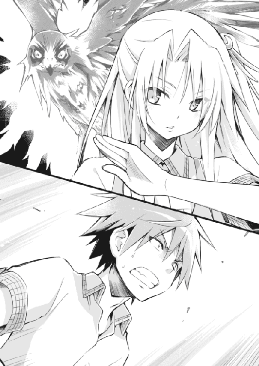
翠が鋭く叫ぶと、鷹が翼を広げ飛び立った。目にも止まらぬスピードで孝巳の真横を突き抜け、一瞬で由香子に飛来する。
たちまち鷹のクチバシが、由香子の手首を裂いた......ような気がした。互いに実体のない身だけに、そう見えただけかもしれない。
それでも由香子は力を振り絞り、一心不乱になおも武本をフェンスの外側へと引きずり続ける。虚ろなソバカス顔が、泣きそうに歪んでいるように見えた。
先ほどの襲撃は威嚇だったのか、旋回した霊鳥が改めて由香子に狙いを定める。
「やめろ山根！」
気付けば孝巳はフェンスへと走っていた。
行ったところで何ができるのかは分からなかったが、そうせずにはいられなかった。
「牙穿！ 三分！」
後方でまた翠が意味不明な言葉を張り上げたが、孝巳には振り返る余裕などなかった。ソファーを飛び越えフェンスに張りつくと、上へ向けて喚き散らす。
「やめてくれ！ お前はそんなことをしなくていいんだ！ そんなことをしたって――」
言い終わらぬうちに、由香子が消えた。薄闇の空に、溶けるようにスゥと霧散した。
半瞬後。孝巳の目の前、フェンス越しの数十センチ先を、黒い影が落下していった。
武本だった。
第三章 相方貸します
１
武本は、奇跡的に一命を取り留めた。
幸い落ちた下に花壇があり、ささやかながらもクッションになったそうだ。もちろんそれでも各所を骨折し、しばらくは入院生活だということだった。無理もないだろう。
「花壇がクッション？ 屋上から落ちた人間が、その程度で助かるわけないじゃないか」
翌日、放課後の部室にて。
孝巳が屋上での顛末を詳しく語る最中、瑠璃が馬鹿らしそうに鼻を一つ鳴らした。
すでに昨夜のうちに何度も携帯を鳴らしたのだが、彼女は一度も出てくれなかった。しつこくかけ続けていると、やがてメールが一通、「君は私を『モーニングレスキュー』ノイローゼにする気か」と送られてきた。それはお前の着メロの問題だ！ と、孝巳は夜空に吠えたものだった。
「んなこと言っても、現に助かったんだから仕方ないだろ」
緋色の夕日が差し込む整然とした狭い室内。中央に二つくっつけて置かれた長机。そこに二人してだらしなく上体を預けて座りながら、会話は続く。
「翠の仕業だよ。転落は防げなかったけど、最悪の事態だけは食い止めたといったとこだね。赤面モノの失態には変わりないけど」
「鴫原の？」
「アレは守護霊持ちなんだ。話しただろう？ 霊をそんな風に活用する人間がいるって」
確かに聞いた。まさかそれが鷹だとは思わなかったが。
「鷹だけじゃないよ。私が知る限り、翠は守護霊を二つ憑けている。鷹の禽踊くんと、狼の牙穿たん。彼ら守護霊ズが力を合わせ、何とか落下の衝撃を抑えたんだね」
鴫原翠、やっぱり只者じゃなかったか。守護霊ズへの敬称が気になったが、そこは突っ込むだけ無駄なのだろう。
「あと、これも話したと思うけど、守護霊は基本的にいくつも憑けることはできないんだ。二体も持ってる翠は、例外中の例外......しかも制御が難しい、種別の異なる獣霊を同時に従えるなんて、稀代の才物と言っていい」
滔々と説明した直後、瑠璃はハッと我に返って口をヘの字に結んだ。翠のことを饒舌に語る自分が、自分で癇にさわったようだった。
「まあ、そんなことはどうだっていい。とにかく翠はドジった。鴫原家霊導師の三十七代目当主が聞いて呆れるよ」
「俺の責任でもある」
鴫原翠の素性をひとまず脇に置き、孝巳は神妙な顔で気だるい体を起こした。
昨日は遅くまで眠れず、睡魔が来る頃には夜明けになっていた。不足した睡眠時間は授業で補填したのだが、実際のところ疲労はほとんど取れていない。
「鴫原を挑発したのは俺だ。そのせいであいつは一瞬、武本から目を離しちまった」
「フン。武本くんが弱っている状態は、由香子さんにとってまたとない襲撃チャンスだったんだよ。そんなタイミングで目を離すのが悪いのさ」
「その原因を俺が作ったんだ」
武本に降りかかった災難は、孝巳の身勝手な憂さ晴らしに端を発している。それは紛れもない事実だ。
痛めつけた分際で言えたことではないが、当然ながら孝巳は、武本を殺すつもりなどなかった。せいぜい意識を失わぬ程度に殴打し、最後に由香子へ詫びの一つでも入れさせようと思っていたのだ。それが......下手をすれば孝巳は、殺人の片棒を担ぐところだった。
そんな孝巳の慚愧を見透かしたように、瑠璃が改めて非難の視線を向けてくる。
冷房もつけていないサウナのごとき室内のせいか、彼女はタイを外し制服ブラウスのボタンを二つも開けている。チラチラ覗く鎖骨が、生意気にも妙に色っぽかった。
「もちろん、馬鹿さ加減では君も負けていない」
「............」
「私は前に言ったはずだよ？ ちゃんと伝えたはずだよ？」
「......分かってる」
「今の三遊亭円楽は六代目だと」
「初耳だ！」
大声を出したお陰で、少し意識がシャッキリとした。
瑠璃は「ちなみに襲名前は三遊亭楽太郎、本名は會泰通だ」などと、どうでもいい補足を加えたのち、自身も上体を椅子の背に戻した。腕と足を組み、何やら思案している。
「さて。こうなってしまった以上、知らぬ存ぜぬで通すわけにもいかない」
その意外な発言に、孝巳は思わず「え？」と顔を突き出した。
「甚だ不本意だけど、私のパートナーをコケにして好き勝手やられたのは、少々業腹だ」
「力を貸してくれるのか」
ここでこいつが動いてくれるとは、思いも寄らなかった。
きっと山根由香子の怨霊は、これからも武本と瀬戸川を狙うはずだ。鴫原翠が武本を守るなら、瀬戸川を守る者だって必要なのだ。
「チャリティーは柄じゃないけど、まぁいいだろう。不届き者にお仕置きするとしよう」
穏やかならぬその宣言に、片手を伸ばして待ったをかける。
「ちょ、ちょっと待てよ。不届き者にお仕置きって......」
「これは立派な殺人未遂だ。とはいえ、もちろん法では裁けない。だから瑠璃法で裁く」
「そんなジャイアニックな法律はいい。それより、山根由香子は被害者だろ」
由香子は、一方的に怨霊にされてしまった存在だ。彼らを襲うのも、彼ら自身にそう仕向けられたせいだ。
霊は法で裁けないという瑠璃の弁は、確かにその通りだろう。霊はそもそも意思を持たないのだから。それを与えるのは、生きている人間なのだから。由香子は道具にされただけなのだ。彼女を裁くのは、チャカやドスを裁くに等しい行為だ。
「お仕置きするのは山根由香子じゃない。瀬戸川圭太だ」
さも当然とばかりにのたまった瑠璃に、孝巳は片手を突き出したまま固まった。
束の間の沈黙に支配された部室に、威勢のいい蝉の重唱だけが響き渡る。
「......瀬戸、川？」
「どうやら君は勘違いをしているようだけど、そして今まではあえてそれを訂正してやる気もなかったのだけど」
孝巳の開いたままの掌に向けて、瑠璃が意味もなくチョキを出してきた。
「由香子さんは怨霊じゃないよ。瀬戸川くんの守護霊だ」
唐突に告げられた事実に、孝巳の脳が情報処理に手間取る。
山根由香子は怨霊じゃなく、瀬戸川の守護霊？ ということは、何がどうなる？
守護霊とはその名の通り、憑いている本人を守る存在だ。ならば由香子が瀬戸川に害をなすことはあり得ない。害をなすどころか、本人が望めば益をもたらすことだってあるかもしれない。そして山根由香子は、武本を殺そうとした――
「嘘......だろ」
「嘘なもんか。君もまた、ずいぶんと瀬戸川くんに踊らされたもんだね。君はダンスの才能もあるのかもしれない」
混乱する孝巳を嘲笑うように、窓の外でカラスがカァと鳴いた。それを受けて、瑠璃もカァと真似をした。
「君はまず、瀬戸川くんへの認識を改めるべきだよ。彼は君が思ってるほど、純朴でも臆病でも正直でもない。君は由香子さん同様、彼に道具として使われたのさ」
「............」
「瀬戸川くんは、君に由香子さんが見えること、さらには君がこの有働瑠璃の相方であることを知って警戒した。だから必死に主張したんだ。自分もまた由香子さんに狙われる身であると......あの日、君が止めなくても、瀬戸川くんはトラックになんて轢かれやしなかった。あれはわざとだ」
「わざと？」
「あれだけ大声でツッコミを入れてたら、後ろに君がいることくらい気付くよ。だから瀬戸川くんは、霊障に遭っている自分をアピールしたんだ。自演乙ってやつだね」
あれは茶番だったというのか。
瑠璃はあの時、瀬戸川の話を「聞く価値はない」と切り捨てた。彼女はあの時点で、すでに瀬戸川の思惑が分かっていた？
「瀬戸川くんの目的は、言うまでもなく武本くんへの復讐だ。だから私たち『お祓い研究会』の出方を確認したかったんだね。幸いにも研究会は、この件に関わるつもりはないらしい。それでも瀬戸川くんは駄目を押して、君に悲惨な過去話を披露した」
「あいつの話は、全部嘘だったってのか......」
「いや、真実だと思うよ。瀬戸川くんはただ、由香子さんが自分の守護霊だと知られたくなかっただけだ。そもそも瀬戸川くんには、君をここまで見事に踊らせる意図はなかったんじゃないかな。せいぜい憐れな腰抜けだと認識してもらえれば、それでよかったんだ。ところが君ときたら、武本くんをライフ１にした挙げ句、邪魔者だった翠の注意まで引きつけて、千載一遇の好機をお膳立てしてあげた」
ぐうの音も出ない。
自身を完全なる被害者だと主張しなかった瀬戸川は、思えば実に巧妙だ。自業自得だと放置されるだけでも上出来だったのに、孝巳はそれ以上に役に立ってくれた。瀬戸川からすれば嬉しい誤算だったろう。
孝巳は椅子に深く腰掛け、頭を抱えるしかなかった。瑠璃の「だから言ったじゃないか。君と瀬戸川くんのケースは違うって」という言葉にも、全く反応できなかった。
「守護霊ってのは......並大抵の霊感じゃゲットできないんだろ」
呻吟ののち、気力を振り絞り弱々しく尋ねる。
「だったら瀬戸川は、強い霊感を持ってるってことか？」
「別に人並みじゃないかな。瀬戸川くんは多分、そっちのことに関しては素人だよ。それは彼の稚拙な嘘を取ってみても明らかだ」
その稚拙な嘘に踊り狂った男を前に、情けってものがない。弁解の余地もないが。
「大体さ、紺野くんならともかく、この私に怨霊と守護霊が見分けられないはずないじゃないか。彼は私のレベルすら計れない、白帯のペーペーだよ」
「そんな瀬戸川が、何で守護霊なんて憑けられる？」
孝巳のさらなる質問に、瑠璃はおもむろにうーんと唸り始めた。返答に窮したというよりは、説明の方法を吟味している感じだった。やがて彼女は天井を仰ぎ、先日取り換えた蛍光灯を見上げながら口を開いた。
「霊感がなくても、守護霊を得る方法はある」
「あるのか？」
「あるよ。ただ、当然ながら難しい」
「そういう意思を霊に与えればいい話じゃないのか？ お前は俺の守護霊だ、って」
単にそれだけのことではないのか。怨霊にするか守護霊にするかなど、生者の与える意思がポジティブかネガティブかだけの違いではないのか。
「確かにそうなんだけど、それは言葉で言うほど簡単なことじゃない。霊を前にしてネガティブな感情を抱かない者なんて、実際にはそうそういないよ。誰だって幽霊が出たら驚くし、怖がるし、訝る」
「でもよ、それが近しい人の霊なら『この人は自分を守るために現れたんだ』とか思ったりもするだろ？ そう思えるなら、守護霊にすることだって......」
驚きはするだろうが、数分も経てばそんな発想にも至るはずだ。親、兄弟、恋人......そういう故人の霊が、自分を祟るために現れたと考えたりはしない。考えたくなどない。
そんな孝巳の意見に、しかし瑠璃は「本当にそう思えるかな？」と両目を細めた。
「絶対にそうだと、一片たりとも疑わず、一切の迷いもなく、意識も無意識も引っくるめて思えるかな？ 『もしかしたら』という疑念は一ミクロンも湧かないかな？」
やけに念を押してくる彼女に一抹の不審を感じたが、孝巳は何も返せなかった。無意識の底まで一切合財そう信じきれる者など、逆に存在するのか？
「そんな疑念が一ミクロンでもあったなら、守護霊にするのは不可能だ。でもそれが、霊感なしに守護霊を得るための唯一の方法だ。どうだい、難しいだろ？」
「でも、瀬戸川は......」
頼りなく吐き出した声に、瑠璃が白い膝をポンと打った。
「そう、そこだ。もう分かったよね？ 由香子さんが怨霊になっていないのはおかしいんだよ。瀬戸川くんが彼女を守護霊にしているのは、とても問題なんだ」
瀬戸川は、由香子を武本に差し出した。報復を恐れ、周囲に相談することもしなかった。
彼女を裏切ったと、恨まれるだけのことをしたと、瀬戸川は確かにそう言っていた。孝巳にそう告白した。それこそが――彼の最大の嘘だ。
「由香子さんの霊をこの世に引き留めたのは、もちろん瀬戸川くんだ。彼は現れた由香子さんに対し、何を思ったか？ もし後ろめたさや負い目があったなら、由香子さんは怨霊になっていただろう。しかるに瀬戸川くんは、こう思った。『彼女は、自分の復讐を手伝いたいのだ』と。そりゃもう、意識も無意識も引っくるめて、心の底からそう思った」
由香子は今でも自分を愛している、役に立ちたがっている、と。
「つまり、それが瀬戸川くんが由香子さんの幽霊に与えた意思だ。晴れて守護霊・山根由香子の誕生だよ。瀬戸川くんの力から考えて、由香子さんはそれほど強い守護霊じゃないんだろう。武本くんみたいな体の大きい男性を真っ向から狙うのは難しいし、さらには翠の護衛のお陰で、これまではなかなか手が出せなかったようだけど......彼はついに手を下した。由香子さんに手を下させた」
そんな馬鹿な話があるか。
山根由香子の破滅に、瀬戸川が一切の呵責を感じていないなんておかしい。守護霊にできるなんておかしい。由香子を道具に使うなんておかしい。
「納得がいってないようだけど、十中八九それが真相だよ。瀬戸川くんは、武本くんに復讐したんだ。もちろんその復讐は由香子さんのためじゃなく、瀬戸川くん自身のためのものだ。お仕置きに異論はないだろう？」
最後に「正直なところ、死人を誰がどう使おうと勝手なんだけどね」と付け加え、瑠璃は長い講釈を終了させた。
いつしか数匹に減ってしまった蝉の喚声の中、孝巳は放心状態で床を見詰めていた。
瀬戸川のためではなく山根由香子のためだと、武本を殴り倒した孝巳の行動は、結果的に瀬戸川を一人勝ちさせてしまうことになった。由香子のためにやったことが、最も彼女のためにならない結果を生んでしまった。
（そうか、鴫原は）
だから翠はこうならぬよう、ずっと武本を見張っていたのだ。
彼女は言っていたじゃないか。武本のために動いているのではないと。瀬戸川のことなど与り知らないと。「私の目的は由香子さんを送り還すこと。彼女に罪業を背負わせないこと」だと。任せておくべきだった。無闇に首を突っ込むべきではなかったのだ。
激しい自己嫌悪に陥る孝巳をよそに、ふと瑠璃が出入口の扉を見た。渋面で溜息をついたのち、煩わしげに声を投げかける。
「用があるなら入りたまえ」
孝巳が「え？」と振り向くと同時に、扉がカラカラと横に開いた。蝉の歌に吹奏楽部の演奏が遠く混じり、ミスマッチな和音となる。
入ってきたのは、鴫原翠だった。
２
相変わらず愛想の欠片もない顔で、鴫原翠は後ろ手に扉を閉め、室内を一度小さく見回した。何やら胡散臭いものを見るような目付きだった。程なくその瞳が右奥に座る瑠璃を捉えると、さらに一層険しさを増す。
「しばらくね、有働瑠璃」
あからさまに非友好的な口調で、翠は両腕を抱くように組み、ついと顎を上げた。その姿は、ファッション雑誌のモデルのように決まっていた。
思えばこうして有働瑠璃と鴫原翠が対面しているのを見るのは、初めてのことだった。
「やあ翠。昨日は色々と大変だったみたいだね」
揃えた指を口に当て、瑠璃が意地悪くプククと含み笑う。翠の放つ眼光など、まるで意に介していない態度だった。
そう。確かに翠は、昨日は大変だっただろう。
話がややこしくなるからと孝巳を帰らせ、救急車を呼び、教師たちに報告に行き、さらには警察への事情説明。彼女はそれらを全て一人で行ったのだ。
いずれ武本の意識が戻れば、孝巳との喧嘩のことは発覚するかもしれないが、そもそも三メートル以上あるフェンスを乗り越えて武本を落とすことなど、孝巳には不可能なのだ。この一件は武本の不用意な転落事故として処理されるだろう、とは翠の弁だった。
「さすがに貴女のパートナーだわ。人を困らせることにかけては一級品のようね」
棘のある口上と共に、翠がチラリと孝巳を一瞥してきた。
「私は紺野くんを通して伝えたはずよ。山根由香子さんの件には関わらないでと」
「承っているよ」
「嘘ね。話は外から聞かせてもらったわ」
美貌に怒りを湛え、翠が肩の髪を乱暴に払った。上質な絹のような栗色の髪が躍り、シャンプーの香りがほのかに漂ってくる。
「せっかくだけど、貴女の出る幕じゃないわ。山根由香子さんは、私が送り還す」
「それは好きにするといい。私は『瀬戸川圭太にお仕置きする』と言ったんだ。目的がかち合うことはないよ」
怒色を募らせる翠に対し、瑠璃はあくまでけろりとしていた。心なしかヘアピンのカッパまで横柄に見えた。
「翠、君のやりたいことは分かる。君は瀬戸川くんを現行犯で押さえたかったんだろう？ 確かに昨日までの状態じゃ、瀬戸川くんが本当に復讐するかどうかも分からなかったもんね。由香子さんを悪用しない限り、霊導師としては介入する名目がない。でも、このままじゃ由香子さんが可哀想だ......もどかしいところだね」
「そうね。私が強制的に送り還したところで、由香子さんは浮かばれない。何の罪もない彼女を、何の罪もないまま送るには、やはり瀬戸川くんに馬脚を現してもらう必要があった。彼自身の手で、由香子さんを解放させるのがベストだった」
淡々と語り合っているが、空気がやけにギスギスしている。このまま取っ組み合いにでもなったら、俺はどうすればよいのだろうなどと、孝巳は益体もないことを考えた。
しばしの不穏な沈黙ののち。
瑠璃はおもむろに制服スカートのポケットからボールペンを取り出すと、何故かその先端をパクリと口にくわえてみせた。二本の指でそれをすぐ抜き取り、フゥ～と息を吐き出す。意図は不明だが、煙草のつもりらしい。
「ねえ翠。確かにウチのロクデナシブルースが迷惑をかけたのは認めるけど、それも元はと言えば、君がそんな悠長なことをしてるからじゃないかい？ 由香子さんがよく廊下にいるのは君も知ってたんだろ？ 綺麗事を言ってないで、さっさとあの世に返品すればよかったんだ。それで終わってたじゃないか」
ふてぶてしく見えない煙を吐き続ける瑠璃に、翠が「貴女らしい考え方ね」と顔を不快げに歪めた。一分の瑕疵もなく整った顔立ちは、それでもなお秀麗だった。
「死者に一片の敬意も持たない、故人と遺族の尊厳すら踏みにじる、吐き気を催す考え方だわ。つくづく最低最悪の怨霊師ね」
「美少女を付けたまえ」
罵詈雑言もどこ吹く風で、瑠璃がニタリと口角を上げる。完全に悪役の顔だった。
「私への個人攻撃は、今はやめてもらおう。せっかく久し振りに口を利いたんだし、ここは建設的に今後の話でもしようじゃないか」
眉宇をひそめた相手に構わず、瑠璃は椅子を立ち冷蔵庫へ向かった。缶ジュースを孝巳と翠にそれぞれ放り投げてくると、自身も一本手にしてすぐに自席へと帰還する。
「瀬戸川くんの復讐は、果たしてこれで終わったのかな？」
翠はもちろん孝巳も何も言えなかった。そんなこと、瀬戸川本人に訊かねば分からない。
「まあ、終わってようとなかろうと、私は個人的にお仕置きをさせてもらうけどね。瑠璃法の第二十八条、由香子悪用罪だ」
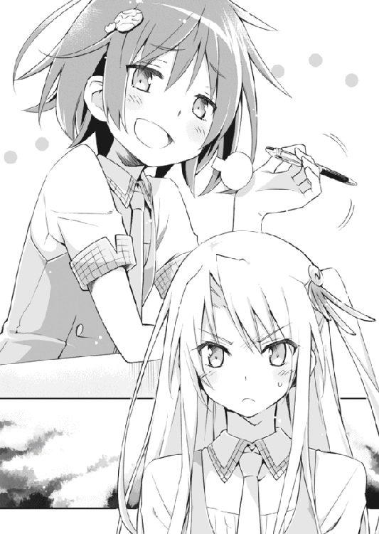
「まだ邪魔をするつもり？」
受け取った缶ジュースをつれなく長机に戻した翠に、瑠璃はショートカットを左右にフルフルと振る。
「しないよ。しないどころか、協力してあげよう。瑠璃法の第六十六条、はっちゃけた相方の損害賠償だ」
「協力？」
瑠璃法をことごとく無視して、翠は事務的な会話に終始する。孝巳は少し見習いたい気持ちになった。
「翠だって、どうせ復讐が終わったとは考えてないんだろ？ だからさ、迷惑料を込めて協力してあげると言ってるんだ」
要領を得ず小首を傾げた翠と同様に、孝巳もまた首を傾げていた。こいつが殊勝なことを言い出すと、かえって嫌な予感がしてしまう。
「役に立つかは分からないけど、貸してあげる」
「貸すって、何を」
「それ」
瑠璃がそう言って、顎で孝巳を指し示した。
孝巳と翠は、思わず同時に「は？」と裏声でハミングしていた。
「体力だけは無駄にあるようだから、好きに活用したまえ。ただし壊さないように」
「ちょ、ちょっと待てコラ！」
嫌な予感的中だった。翠が現れてからほとんど口を開かなかった孝巳は、その時ようやく立ち上がり憤激の声を発した。
「どういう理論だ！ 何で俺がお前の一存で貸し出されなくちゃならないんだ！」
「私の忠告も聞かずに首を突っ込み、翠の邪魔までしたんだ。少しくらい埋め合わせをしたまえ。このままじゃ君、ただの童貞ダンサーだよ」
「辛辣のメーターを振り切るな！」
言葉のナイフで心臓をえぐられつつも、めげずに長机をダンと殴る。
「異議は認めない」
「勝手なことほざくな！」
「これは決定事項だ。瑠璃法の第九十二条、紺野孝巳使役の術だ」
「すでに法じゃねぇ！」
「いいじゃないか。ここだけの話だけど、翠には彼氏がいない。見ての通り鉄の女だ、このままじゃ彼氏イナイ歴が享年になるだろう。きっと今ならオールウェルカムだよ」
今度は翠が顔を真っ赤にして、机をダンと殴った。缶が僅かに宙に浮いた。
「あ、貴女に言われたくないわ！ それを言うなら貴女だって......」
珍しく、というか孝巳が知る限り初めて翠が激昂した。今の言葉を聞く限り、瑠璃に彼氏がいるのを知らないのかもしれない。
「......何よ。何か言いたいのかしら？」
まじまじと見ていると、怒りに肩を震わせていた翠が、何故か今度は孝巳をギロリと睨みつけてきた。
いきなり矛先を向けられたことに怯み、首を振ってノーコメントを主張する。分かってもらえなかったようで、翠のまなじりがさらに吊り上がった。
「言いたいことがあるなら言ったらどう？ ああ、やっぱり彼氏いないんだ......そう思ったんでしょう？ 見るからに堅物そうだし、デートしても能や歌舞伎に連れて行かれそうだし、手を握っただけで婚姻届けを突きつけられそう......そう思ったんでしょう？」
勝手にヒートアップしていく翠に首を振り続けながらも、意外な心持ちになる。あまり周囲の目など頓着しない人種だと思っていたが、結構気にしているみたいだ。
「ふむ。なかなかお似合いのバカップルじゃないか」
「う、有働瑠璃......！」
「じゃあ、とにかくそういうことで。私は夏休みに向けてしばしネタ作りに励もうと思う。紺野くん、時間が空いたときは部活に出るように」
鬼の形相で睨む二人を歯牙にもかけず、暴君はとどめとばかりにボールペンを吹かしてみせた。その姿は今晩うなされそうなほど憎たらしく、小癪だった。
「あとは君の頑張り次第だ。もしかしたら、翠と仲良くなれるかもしれないよ？ 念願の童貞ブレイクだって夢ではないかも」
「俺の人間性を粉砕するな！」
ふと翠と視線が合わさる。
彼女はもはや瑠璃との会話を諦めたのか、無言でじっと孝巳を見詰めていた。
サナダ虫を見るような目だった。
３
それから数日が過ぎ、あっという間に一学期の終業式がやってきた。
思っていたより壊滅的ではなかったものの、決して称賛できる結果でもない通知表を鞄に押し込め、孝巳はしばし像のように自席に座して教室を眺めていた。
明日から待望の夏休みということもあり、クラスの皆は一様に浮かれている。さりげなく瀬戸川の姿を探したが、早々に下校してしまったようだった。
そういえば最近、クラスメートたちの自分を見る目が以前と比べて改善されたような気がする。もちろん今でも孝巳が恐怖の対象なのは変わらないのだが、何というか、その忌避レベルがやや緩和された感じがするのだ。
（認めたくはないが、有働と一緒にいるのが功を奏してることは否定できない）
有働瑠璃という少女は、学校内外から畏敬と畏怖の念を集める存在でありながら、意外にも一般生徒からの評判は悪くない。そういえば、初めて彼女の噂を聞いたときも「瑠璃ちゃん」などと親しげに呼ばれていたし、小田切からは「ルリルリ」などという噴飯ものの呼ばれ方をされていたようだ。
瑠璃の存在が、孝巳の凶悪なイメージを薄めているのだ。加えて先日の老人ホームから学校にお礼の電話があったそうで、紺野孝巳はようやく悪鬼羅刹の汚名から片足半歩ほど脱却できたのだった。
（とはいえ、感謝する気は微塵もないけどな）
孝巳がそう心で毒づいたところで、誰かが教室に入ってきた。
つかつかと優雅に側までやってくると、黙して動かない孝巳を無遠慮に覗き込む。艶のある綺麗な長髪が、一筋サラリと肩口から流れ落ちた。
「......確かお爺様が愛用していた茶釜が、こんな顔をしていたわ」
「せめて生物に例えろ」
挨拶すらなしの失礼千万な第一声に、孝巳はこれ見よがしの仏頂面で応えてみせた。
目の前に、長身の美少女がいた。この数日ですっかりお馴染みとなった顔だが、いつ見ても息が止まるほど優美だ。「美人は三日で飽きる」というが、どうやらあれは「男は顔じゃない」と同じく嘘らしい。
「で、今日はどうするんだ。瀬戸川は帰っちまったぞ」
仕方なく鞄を持って立ち上がると、つっけんどんに尋ねる。
教室に残っている数人の視線が痛かった。校内でも美少女として名高き有名人・鴫原翠が、ここのところ毎日のように非行奇行の有名人・紺野孝巳を迎えに来ることに、みんな納得のいく回答が得られずにいるのだ。
「瀬戸川くんとの接触は控えて。今は遠巻きに監視するだけでいいわ」
「分かってるよ」
「私の目を盗んで、半殺しにしたりしないで」
「分かってるっての」
「その際に、また私に矛先を向けるのもやめて」
「......お前、結構根に持つタイプだな」
溜息を返し、孝巳はさっさと教室を出ていった。翠が足早に追いつき、横に並ぶ。
『鴫原さんって、紺野くんと付き合ってるのかな』
『この間まで三年の武本さんと親しげだったのに』
『優等生なのに、あんなヤンキーが好みなんて』
『そもそも紺野くんって、瑠璃ちゃんの彼氏じゃなかった？』
『きっと鴫原さんが奪ったのよ。何たって学校一の美人だもんね～』
校舎を出るまでにそんな囁き声が耳に入ってきたが、当の翠は腰の前で両手を組むように鞄を提げ、背筋をピンと伸ばして飄々と歩いていた。
......第何条だったかはもう忘れたが、『紺野孝巳使役の術』なる人権無視の法律に則り、孝巳はこうして鴫原翠と行動を共にしている。
その傍若無人な命令には心底腹が煮えたが、翠に借りを作ってしまったのも紛れもない事実だ。彼女がいなければ、孝巳は武本殺害の共犯者になっていた......その礼と謝罪を込めて、翠に協力しようと決めたのだ。瑠璃法に屈したのではない、あくまで自分の意思でそう決めたのだと、孝巳は思っていた。思わねばやってられなかった。
「で、今日はどうするんだ」
学校を出てしばらく行ったところで、再び同じ質問を投げかける。
「また武本んトコの魔除けの強化か？ それとも道場で武道のお稽古か？」
この数日、放課後になると翠はそういった感じで日が暮れるまで孝巳を拘束した。
武本のいる病院を回り、目立たない場所に御札を貼りつけていく。それから彼女の知り合いがやっているという武術道場に連れて行かれ、ひたすら稽古の相手をさせられる。
彼女が使うのは、合気道のごとく敵の動きを利用する独特の護身術だった。喧嘩ならそこそこの実戦経験がある孝巳だが、彼女にはまるで歯が立たなかった。
『暴漢を想定した稽古としては悪くないわ。けど、もう少し真面目にお願いしたいわね』
そんな屈辱的な翠の感想を思い出し、孝巳は不貞腐れるように下唇を出した。
そもそもこんな華奢な美人を随従のままに殴れるほど、孝巳は非道ではない。何より、動くたびにぷるぷると弾む胸が気になって仕方ない。そんな邪念が決定的な隙になり、孝巳は何度も宙を舞い、床板に叩きつけられ、さらに踏んづけられるのだった。
前を見たまま、翠が「今日は違う場所よ」と事務的に言った。吹きつけた強い横風に長髪が舞い上がり、白いうなじが垣間見える。
「一度、暇を見て行っておこうと思っていたの。今日はいいタイミングだわ」
だからどこへだよ、と不平を述べたかったが、孝巳は何も言わなかった。訊くだけ無駄なのは、すでに分かっていた。
学校の男子生徒たちは、翠に同伴する孝巳を羨ましそうに見ているが、実際はそんなに楽しいものではない。
こいつは常時こんな感じで取り澄ましており、皆が想像するような甘く胸キュンな態度など一切見せたりはしない。低いトーンで吐き出す言葉は大部分が遠慮のない猛毒だし、「紺野くん、少し休まない？」と言えばそれは喫茶店で茶を奢れという意味だった。あの瑠璃ですら缶ジュースくらいは振る舞ってくれるというのに、だ。
「お前ってさ、武本にくっついてるときも、ずっとこんな感じだったのか」
「喫茶店で奢らせたり、道場で投げ飛ばしたりということは、さすがになかったわ。そもそも彼には、付きまとう理由すら話していなかったもの」
「それでよく間がもったな......」
「特に嫌な顔をされたりはしなかったわよ。でも、貴方に関しては有働瑠璃から一時的に所有権を譲渡されている。貴方の物は、私の物。貴方の財布は、私の財布よ」
......ここにもいたか、ジャイアニック。
ギラギラと燃え盛る七月の太陽を頭上に、陽炎の揺れるアスファルトの歩道を歩いていく。すでに孝巳は汗の玉を流していたが、翠は汗ばむ様子すらなく涼しい顔をしていた。
「鴫原。お前、有働とはどういう関係なんだ？」
横断歩道の赤信号で立ち止まったとき、ふとそんな疑問をぶつけてみた。
日差しを手庇で遮りながら、翠が「そんなことを聞いてどうするの」と素っ気なく返してくる。心なしか不機嫌になったように見えた。
「いやまあ、良好な間柄じゃないのは見てりゃ分かるけど......霊導師だっけ？」
すぐに信号が青になり、同時に歩き出す。
翠は横断歩道のストライプに目を落としたまま、嘆息を前置きに語り始めた。
「私の家は、代々そういう家系なの。獣を守護霊とし、その霊格をさらに鍛え上げ、子孫に伝える家系。私の守護霊たちは、両親より譲り受けた数百年の歴史を持つ高位霊よ。私は鴫原家霊導師、第三十七代正統なの」
「親の守護霊、両方とも貰ったのか？」
「通常は不可能よ。鴫原の人間は先天的に強い霊感を持っているけど、それでも宿せるのはせいぜい一体......普通は余った守護霊は封印されるわ」
なのに、彼女は二体も守護霊を憑けている。鷹と、狼だったか。
「その霊導師ってのは、どういうもんなんだ？ 今のお前みたいに、悪用されてる霊を救済するのが仕事か？」
横断歩道を渡り切ると、進む先に駅が見えてきた。足取りからして、どうやらそこを目指しているようだ。
「そんな大層なものじゃないわ。霊をあるべき方向へ導くという、それだけの仕事よ。大昔からいくつかの団体に経済的支援を受けているけど、やっていることはこういった地道な活動......依頼で動くこともあるけど、基本的に相談者からお金を貰ったりはしないわ」
霊を生者の延長として憐れみ、尊び、あるべき正しき方向へと導く。ボランティアで。
なるほど。確かに瑠璃とは相容れぬ人種だ。
「実家で霊導師なのは私だけ。祖父も父母も、私がとりわけ優秀だったこともあって、今では揃って一線から身を退いちゃっているの」
謙遜することなく、かといって誇るでもなく、翠は事実として淡々と言い放つ。
口の重い彼女がここまで自分のことを語るのは、今日が初めてだった。この数日間、必死にコミュニケーションを敢行してきた孝巳の努力の賜物と言えた。
やがて思った通り駅にやってくると、翠は四駅先まで行くことを告げ、思った通り運賃を孝巳に払わせた。孝巳は諦観の境地で券売機にて切符を二枚買い、一枚を翠に献上した。
タイミング良く到着した各駅停車に乗り込み、しばし電車に揺られる。
まだ昼前ということもあってか車内は空いていて、二人は扉横のシートに並んで腰を下ろした。少し効き過ぎの冷房が、心地好く体の熱気を奪っていく。
「......有働瑠璃とは、小学生の頃からの付き合いよ」
静かな電車の振動に混じって、翠が独り言のように漏らしてきた。それは、そもそもの質問に対する答だった。
「家が近所で、当時はよく遊んだ。お互い見えなくていいものが見える人間だったから、当時は仲が良かった」
そんなに長い付き合いだったとは。彼女がことさらに「当時は」と付け加えるのが、今の二人の関係を顕著に表している。
「あの子はよく私の家に泊まりにきたし、私もよくあの子の家に泊まりにいった。それこそ毎日のように遊んで、一緒にお風呂に入ったり、一緒に寝たり」
「へぇ......ん？」
そのフレーズを、どこかで聞いたことがある。
そうだ。瑠璃が同じことを言っていた。「そういったことは最近とんとご無沙汰だけどね」と。それはつまり......
（まさかあのペテン師野郎、俺をハメて遊んでやがったのか！）
やっぱりあんな奇人に、彼氏などいるわけがなかったのだ。さらに記憶を辿れば、奴はこんなことも言っていた。「認識の齟齬は笑いの王道だ」と。
歯をギリリと鳴らし「クソ......」と呪詛を絞り出した孝巳を、翠が不審そうに見詰めてくる。孝巳は慌てて表情を繕い、話の先を促した。
「だから、どういう関係かと訊かれれば、幼馴染みだし宿敵だし対立者だし理解者よ。可愛さ余って憎さ百万倍と言ったところかしら」
「桁がヤバいな」
「貴方も身に沁みてるんじゃない？ 私はあの子より小憎たらしい人間を、現実でもフィクションでも知らないわ」
「......俺もだ」
意見が一致した頃には、いつの間にか目的の駅に着いていた。
連れられて来たのは、巨大な霊園だった。下車駅から徒歩十五分ほど坂を上った丘陵地にあり、着いた頃には孝巳は再び汗だくになっていた。
翠は入口近くで花を買うと（幸い自分で代金を出してくれた）、何度か道を間違いながらも目指した墓前に辿り着くことができた。
......それは、山根由香子の墓だった。
緑地を新しく拓いた一角なのか、まだポツポツと墓石が点在するだけの淋しい場所だ。彼女の墓は他に比べ小振りだったが、隅々まで綺麗に清掃されており、竿石が陽光を受けて鏡のように光っていた。墓前に枯れかけの紫陽花が二つ、横にして供えられていた。
「彼女に関わった貴方としても、一度来ておいた方がよかったんじゃないかしら？」
そんなことを言いつつ、翠は手際よく花を新しい物と差し替え、地面の僅かな花弁を拾っていく。続き孝巳が運んできた水桶から柄杓を抜き取ると、墓石の埃を濯ぐように水を丁寧にかけていった。すっかり駄目になっていた紫陽花は、孝巳が回収した。
「確かに、来ておくべきだったかもな」
邪魔にならない程度に翠を手伝ったのち、一緒に墓へ手を合わせる。
それほど長い間そうしていたつもりはなかったのだが、目を開けると翠はすでに合掌をほどいており、何やら不思議そうにこちらを見詰めていた。
「ずいぶん熱心に手を合わせていたわね」
「謝ってたんだよ」
「............」
「色々とやらかしたからな。もう一度ちゃんと力になりたい、ならせて欲しい、って」
素直に思いを述べると、翠の白磁のごとき顔が若干驚きの色を浮かべた。続き彼女が「貴方って、もしかして......」と小声で漏らしたが、それは孝巳の耳に最後まで届くことなく、静謐な空気の中へと吸い込まれていった。
「......あら？」
その時、不意に背後より上がったそんな声に、孝巳と翠は同時に振り向いた。
見ると、そこに一人の女性がいた。中年と呼ぶには年若く見える、上品で穏和そうな主婦だ。孝巳が持ってきた物より一回り小さい桶を持ち、手にはやはり紫陽花があった。
すかさず翠が一歩進み出て、折り目正しくお辞儀をする。
「失礼ですが、由香子さんのお母様でしょうか」
翠の言葉に頷くと、女性は「もしかして、お友達？」と優しげに相好を崩した。
合わせて翠が朗らかに首肯する。いつもの気難しい面相とは正反対の、女の子らしい楚々とした微笑だった。こいつはこんな顔もできたのか。
「はい。由香子さんとは生前仲が良くて。友人を代表してお邪魔させて頂きました」
それは嘘ではあるものの、孝巳もまた肯定を示すように深く会釈した。本当のことなど告げようもないし、告げる必要もないことだ。
由香子の母は嬉しそうに笑い返し、ふと孝巳が小脇に持つ萎びた紫陽花に目を留めた。
「もしかして、いつもお花を供えてくれるの貴方たちかしら？ 入口の管理人さんから、学生さんがよく紫陽花を供えに来るって聞いていたから」
翠は一瞬だけ孝巳と視線を合わせたのち、口許を綻ばせて首を振った。
「いえ。でも、私たち以外にも由香子さんを大好きだった子はたくさんいると思いますので......そういった人たちだと思います」
否定の仕方も如才ない。由香子の母は特に疑うこともなく、そのまま墓石へと近付いた。
「こんなにいい友達が大勢いたのに......本当に馬鹿な子よね」
墓前にしゃがみ手を合わせるその姿に、いたたまれない心地になる。
山根由香子がどういう人物だったのか、孝巳は知らない。でも、彼女の死を悼む人間が一人でもいる以上、その命が失われたのはとても悲しいことだ。遺族はもちろん、紫陽花を供えた人物だって、これからもずっと心に深い傷を負って生きていくのだろう。
この世は生者のもの。死者が消えても、残された者たちの人生は続いていく。だから死んでしまった人間より、生きている者こそを優先するべきなのだ......去来したそんな思いは、どこか有働瑠璃の主張に似ていた。
それからいくつか会話を交わすと、孝巳と翠は丁重に辞去の句を述べ、霊園を後にした。
寄り道もなく駅へとトンボ返りし、再び電車に乗って引き返す。切符はまた孝巳が買わされる羽目になった。
「あの墓に山根由香子は眠ってるのか？」
車内の数分間をもてあまし、孝巳は何となく翠にそう尋ねた。今度は座席には座らず、ドアの横に二人並んで立っていた。
「もちろんいないわ。彼女は瀬戸川くんの守護霊だもの」
「なら、何であそこに行ったんだ」
「由香子さんのお母さんが、あの時間帯にお墓に来るのは調査済みよ。娘の死を悼んでいる者がいることを彼女に示したかったの。一人より、どうせなら二人の方がいいでしょう」
頭数として駆り出されたというわけか。
それにしても、何だってそんなことを......と問うと、彼女は「生者の魂をケアするのも、霊導の一つよ」と答え、宝石のごとき明眸で孝巳を見上げてきた。
「由香子さんのお母さんだけじゃなく、貴方の魂のケアも兼ねていたつもりよ。取るに足らない些細な気休めだけど、それ以上のことができるなんて思っていないわ」
確かに由香子へ詫びを告げられたことで、自己満足ながらも孝巳の心は少しだけ軽くなった。まさか翠に気を遣われるとは思いもしなかった。
「またお前に借りを作っちまうとは......」
「これは借りに入れなくていいわ。霊導師としての役目の内だから。それに――貴方を少し見直す機会が持てたしね」
笑顔というわけではなかったが、翠の表情が柔和に緩んだ。たったそれだけのことで、普段よりも数倍魅力が増したように見えた。
その後はいつも通り、武本の病院を経由していつもの道場へ。散々に投げ飛ばされ、脱水症状で数度ぶっ倒れたあと、孝巳は日没頃にやっと解放されたのだった。
４
「やあ、しばらくだね」
八月の初日。久し振りに部室へやってきた孝巳を歓迎するように、瑠璃がいつもの席からヒョイと片手を上げてきた。
昨日、翠から「明日はお休みにしましょう」と言われ、孝巳は思わずガッツポーズを取った。記憶を遡れば、中学の全国優勝以来のガッツポーズだった。一日中クーラーを効かせて惰眠を貪ろう、なんて考えていた帰り道。携帯が瑠璃からのメールを着信した。
『明日休みらしいね。午前十一時に部室で待つ』
返信はしなかった。気付かなかったと言い張るつもりでいた。
すると、その五分後にまたメールが来た。
『午前十時に部室で待つ』
一時間早くなっていた。
俺は何も見ていない。そう、今日は携帯を家に忘れたのだ。
『午前九時に部室』
三通目。また一時間早くなった。次第に文章が簡素になっていくのが不気味だった。
『午前八時』『七時』『六』『ご』『死』
そこまで粘ったところで、孝巳はついに根負けして『頼む。十一時にしてくれ』と返信を打ってしまった。変則的メリーさんの精神圧迫に屈した己を情けなく思いながらも、かくして孝巳は今この部室にいる。
「翠とのアバンチュールはどうだい？」
長机に両肘を置き、足を交互にブラブラさせて、瑠璃がからかうような目を向けてきた。
「どうもこうもねぇよ」
「キスくらいしたかい？」
「ああ。道場の床とだけどな」
自虐的に吐き捨て、それ以上の追及を拒絶するようにさっさと椅子に座る。最奥の瑠璃から、一つ椅子を飛ばした手前。今やそこが孝巳の指定席だった。
全開にされた窓の外では、相変わらず蝉がやかましく絶叫していた。その音に紛れ、運動部たちの掛け声が遠く聞こえる。自分はいつかそこに加われるのだろうか。
「そういやお前、瀬戸川にお仕置きするって話はどうなったんだよ」
「ああ、あれかい。まだその時期じゃないよ。私は私で色々と忙しい」
瀬戸川のことなど興味がないように、瑠璃は下敷きで自分を扇いでいた。それに合わせてヒラヒラと泳ぐ墨色の前髪は、まるで暖簾のようだった。
「そんなことより紺野くん、呼びつけたのは他でもない。君は青鶴祭りを知ってるかな？」
出し抜けな瑠璃の言葉に、孝巳は「何だそれ」と適当に返した。
「簡単に言えば夏祭りだよ。八月下旬に、青鶴中央公園で毎年催されている。園内中に露店が並び、夜には小規模だけど花火大会もある。特設ステージでは有志のバンド演奏があったり、児童のカラオケコンテストがあったり、町内会の隠し芸があったりする。今時の地域イベントにしてはなかなか活気があって、大勢の人が足を運ぶ楽しい二日間だ」
「............」
そこまで説明されて何ら不吉な予感を抱かないほど、孝巳は鈍くない。
額に浮いた汗が急速に冷たくなっていった。ステージだと？ まさか、こいつ......
「ま、待て有働。待ってくれ」
「私たちの威力を見せてやろうじゃないか」
「待てっつってんだろ！」
悪夢の一言が、小さな唇から無情に紡ぎ出された。威力って何だ。
「お前はまだ懲りてないのか！」
「前回の漫才のことなら、大勝利だったじゃないか。しかも今回は日数的な余裕があるから、準備万端で挑めるよ。その日、青鶴町は笑いの渦に呑み込まれるだろう」
「失笑の間違いだろうが！ いいか、たとえ呪い殺されようと、断固として出ねぇぞ！」
公共の場での舞台となれば、衆目は老人ホームの比ではない。場所からして学校の奴らも来るかもしれないし、昔のチームメートだって来ている可能性がある。最悪だ。
「君がゴネることを見越して、すでにエントリーは済ませてある」
「テ、テ、テメェ......！」
「その怒りは漫才にぶつけたまえ。気持ちは同じだ、私だって悔しい」
「元凶が不思議なことを言うな！」
「だったらどうすれば良かったと？ 私は楽器なんて何もできないよ」
「エントリー自体が間違いなんだ！」
それから数分間、喧々と口論が続いたものの。唯我独尊の暴君が折れるはずもなく、孝巳は喉を嗄らし息を切らせて床にへたり込んでいた。
瑠璃はさすがに憐れと思ったのか、そんな孝巳に向けて下敷きをパタパタと扇ぎ、生温い風を送ってきた。正直、何の埋め合わせにもなっちゃいない。
「全く。あまり女の子に怒鳴り散らすもんじゃないよ。そんなに強く責められたら、私だって泣いちゃうんだから」
微塵も信憑性のないその言葉を無視して、孝巳はヨロヨロと椅子に座り直した。泣きたいのはこっちだ。
「......エントリーの取り消しはできないのか」
「不可だ。その必要もない。よし、成功の暁には座布団を三枚あげよう。十枚溜まれば、私と色々イイコトができる夢の座布団だ。これで少しはやる気出たかい？」
慣れない仕草でしなを作ってみせる少女を、孝巳は廃人のような目で眺めていた。どうせ九枚辺りで全て没収とか、そういうオチに違いない。
「お前って、芸人でも目指してるのか」
深い理由もなく投げやりに発した問いに、瑠璃が目を丸め小首を傾げた。
「だってお前、笑いに人生捧げてるだろうが」
ここまでの意欲を見せておいて、ただの趣味だとは言うまい。
しかし瑠璃は如実な当惑を浮かべたまま、相変わらずキョトンと孝巳を見返していた。
「芸人？」
「お前の希望進路が、芸人じゃなくて何なんだよ」
「アイドルでも女優でもなく、芸人？」
「遠慮しやがれ」
瑠璃は腕を組んで眉間を一つ掻くと、居住まいを正して宣言した。
「私は笑いを職業にする気はないよ。老人ホームや夏祭りには行くけど、漫才大会やオーディションには行かない。私にとって、笑いは芸じゃない。単なるライフワークだ」
「ライフワーク、ねぇ」
「あえて言うなら、生者の魂のケアに近い。私自身を含めたね」
彼女の言葉は、奇しくも鴫原翠と同じものだった。
もしかしたら『笑い』とは、有働瑠璃なりの霊導なのかもしれない。死者ではなく、生者の魂への滋養なのかも......そう考えるのは過大評価だろうか。
「私はボランティアやチャリティーが嫌いだと言ったけど、それはあくまで霊が絡むことに対してだ。何故なら除霊は私の芸だからだよ。芸を披露するなら、当然お金は貰う」
「俺の魂のケアはないのか」
「相方が何を言ってるのさ。......ところで紺野くん」
またもや瑠璃が、閑話休題とばかりにパンと手を合わせた。こいつの話がすぐ四方八方に飛散するのには慣れている。
「この数日、ずっと考えていたんだけど」
やってきてまだ二十分ほどだが、すでにスタミナは底をついていた。これ以上何を聞かされても、元気に対応できる体力はない。
「ルリコン、というのはどうだろうか」
意味が理解できぬまま、何のことかと問い返す。ルリコン......ロリコンみたいで嫌だ。
「君と私のコンビ名だよ」
「コ、コンビ名？」
「コンビには名前が必要だろう。そんなの当たり前じゃないか」
「何でお前と本格的にコンビ組まなきゃならないんだ！」
もはや職業病のように声を張り上げると、瑠璃が頬張ったリスのように膨れた。
「仕方ないじゃないか。当日までに教えて欲しいと、運営部に言われてるんだ。二人の名前を取ってルリコン。色もお揃いだ。いいだろう？」
「名前の良し悪しじゃない！ いいか、俺はあくまで一時的に籍を置いてるだけで」
「じゃあロリマゾにしようか？ 君はロリコン、私はマゾ、二人の性癖を取った名前だ」
「聞きたくなかったぞ、その意外過ぎるカミングアウト......！」
「不服なら君も考えてよ。いいと思うんだけどなぁ、ロリマゾ」
「ルリコンはどこ行った！」
荒れ狂う孝巳と、カラカラ笑う瑠璃。
三分ごとに脱線する彼女の話に付き合ううちに、気付けば太陽は西に傾きかけていた。
フリーな一日を棒に振ったことに深く落胆した孝巳ではあったが、意外にも翠はそれからちょくちょく休暇をくれるようになった。
何でも、瀬戸川に全く動く気配がないので、油断をしない範囲で警戒網を緩めるということだった。何もない日は狙いすましたように瑠璃に呼び出されるので、完全な休日はやっぱり皆無だったが。
「貴方、お笑いに興味があるの？」
八月になって間もない、炎天下の昼下がり。その日も孝巳は呼び出しを受け、従者よろしく翠のショッピングのお供をさせられていた。
駅前の喫茶店でようやく人心地ついたとき、彼女がふとそんなことを訊いてきた。
運ばれてきたアイスコーヒーにストローを刺し、「何でだよ」とぶっきらぼうに返す。彼女が購入した服や靴の紙袋をまとめて持たされ歩き続けた、今日の状況も含めての「何でだよ」であった。
ここ最近、翠の行動のバリエーションがやけに多彩に、そして私的になってきたのは、孝巳の大きな懸念の一つだった。
彼女は由香子に関連する用事だけでなく、買い物や映画やゲーセン、果ては寺や神社への挨拶回りにも孝巳を駆り出すようになったのだ。さすがに遊びにまで二人分の金を払わされることはなかったが、朝から振り回されるこちらの身にもなって欲しい。
「だって、あそこは『お笑い研究会』でしょう？ 貴方も興味があるのではないの？」
金魚鉢サイズの巨大パフェを突つきながら、翠が片手で口を押さえモゴモゴと続ける。最初は彼女の顔が見えないほどそびえていた生クリームやフルーツの山は、すでに三分の一ほどが綺麗に除去されていた。
「興味なんてないさ。俺はそもそも、除霊の相談に行ったんだ。それが――」
「今じゃ有働瑠璃の奴隷、ということね」
「死にたくなるようなことを言うな」
「なら召し使いかしら」
「......それをお前が言うのか」
外見は対照的だが、孝巳への無体な仕打ちにかけては、翠は瑠璃に勝るとも劣らない。霊感とは、人の性格をねじ曲げてしまうのだろうか。
「薄々分かってたことだが、お前もアレだな。他人への敬意を欠片も持ってない人種だな」
「有働瑠璃と一緒にしないで。私は円滑な人間関係を築く手段くらい会得している」
孝巳の懐疑の目に、翠はむっと心外そうに唇を尖らせた。今日も変わらず制服姿の謹厳な彼女らしからぬ、茶目っ気のある拗ね方だった。
街を歩けば、すれ違う男の大半は振り返って翠を見る。そしてその隣にいる人相が悪い男を見て、決まって納得のいかない表情を浮かべる。きっと自分は彼女にとって、「ナンパ避け」の意味合いもあるのだろうと、孝巳は最近になってやっと気付いた。
「私は人との関わりをとても重視している。そのための努力も欠かしていない」
取り澄まして断言した翠の顔が、パクついたバニラアイスにたちまち陶然ととろけた。
本人曰く、この店の特大パフェを食べるのはかねてよりの悲願だったらしい。「こんなもん、いつでも食いに来れるだろう」と言うと、「女の子が一人で特大パフェを頼めると思ってるの？ 貴方はラーメン屋さんで小ライスだけを頼めるの？」とよく分からない説教をされてしまった。
「私の対人関係に抜かりはないわ」
「どうだかね」
「ちゃんと勉強しているもの。通信教育で」
「――え」
最初は聞き間違いだと思った。彼女がボケたのだと悟るまで、孝巳は実に十秒近い時間を要してしまった。
翠はその間、チラチラと上目遣いでこちらの様子を窺ってきた。やがて気まずい表情を浮かべ、ナプキンで一度口を拭う。少し顔が赤かった。
「コケないのね」
「へ......」
「流れは合っていたと思うのだけれど。もしかして違っていた？」
「ええっと......それはつまり、やっぱりボケだったのか？」
困惑気味に頭を掻いた孝巳に、翠も負けじと頬を掻く。
「ボケたらコケる。それが貴方たちの世界のルールではないの？ 今の冗談、自信があったのだけど」
どこの世界を指しているのかは知らないが、少なくとも孝巳はそんな世界の住人ではなかった。彼女が何故ここでボケてみせたのか定かではないが、とにかく孝巳はしどろもどろに不服げな翠に説明した。
「あの、そういうのはよ、ある程度の意識のコンタクトが必要だと思うぞ」
「どういうこと？」
「俺は鴫原がボケを言う人間だと、これまで全く認識してなかった。だから何の心構えもしてなかった。それじゃ突っ込めねえよ」
翠がうつむきつつ、自身の細い顎を摘まんだ。真剣に聞き入っているようだった。
「お前が言った通り、会話の流れは合っていた。ボケ自体も間違っちゃいない。でも相手に突っ込ませるなら、せめてそれまでにボケる気配を臭わせておいた方がいい」
「不意打ちの突発的なボケ、という形を狙ったのだけど」
「その狙いは、第三者の聞き手に向けられるべきものだ。ここには俺とお前しかいない。ツッコミやコケることを求めたのなら、やっぱり不意打ちは駄目だ。俺に心構えをさせておく必要がある」
瑠璃と最初に会ったときも、孝巳は戸惑うだけで突っ込めなかった。彼女がそういう人間だと知らなかったからだ。今ならば、瑠璃がボケるオーラをプンプン醸していることは容易に分かる。別に瑠璃の会話は、第三者に向けて行われてはいないのだけれど。
「なるほど......意識のコンタクトか」
やけに神妙な顔で、翠は数度頷いた。
再び彼女が生クリームの乗ったスプーンを口に運ぶ。幸せそうにペロリと唇を舐める様が普段とのギャップで妙に幼く見え、若干対応に困る。
「少なくとも、ツッコミ役とだけはコンタクトを取っておけ。そうすりゃ『不意打ちでボケるな！ ボケそうもないキャラのくせに！ ていうか通信教育かよ！』と、ボケの趣旨までフォローしてくれるさ。それでようやく一つの流れの成立だ。予定調和に聞こえるかもしれないが、第三者にとっては充分に突発的な不意打ち――」
そこまで語って、孝巳はハッと我に返った。
俺は何を懇々と語っているのだ？ これは何の講義だ？ 俺は誰だ？
「奥が深い......」
翠が何だか感心したように唸っている。やがて顔を上げて「貴方、只者じゃないわね」と告げてきた眼差しは、これまでと違い尊敬の光を帯びていた。
複雑な気分になり、頭を抱えつつ横手の窓の外に視線を転じる。初めてまともに貰った誉め言葉がこんな意味不明の講釈に対するものでは、嬉しさも半減だ。
「今のは忘れてくれ。俺は別に笑いの造詣が深いわけじゃない。只者の素人だ」
「いいえ、傾聴に値したわ。さすがは有働瑠璃の見込んだ人物ね」
嬉しくない。というか、翠まで笑いに走り出したら孝巳の毎日はツッコミ地獄に陥ってしまう。霊感とは、人をボケたがりにさせてしまうのだろうか。
「この機会を利用して、貴方から笑いのイロハを学び取ってみせるわ」
「お前、目的が変わってきてるぞ」
「変わったんじゃない、増えただけよ。ケチケチしないで私に技術を教えなさい」
「教える技術なんかねぇっての！」
「煮え切らない男ね。ゆとり世代はこれだから嫌よ」
「ならお前もだ！」
激しく突っ込んだ孝巳に、翠がにこりと笑って「こんな感じ？」と小首を傾げた。
割と優秀な教え子だった。
５
武本が屋上から転落して以来、瀬戸川が動きを見せないというのは本当らしかった。
瀬戸川は見る限り、平和に平穏に、毎日ごく普通の夏休みを満喫している。クラスのグループとプールに行ったり、ファミレスで談笑したりするだけ。今日も昼過ぎからカラオケ店に入り、すでに二時間が経過している。
「もしかして瀬戸川の奴、もう気が済んじまったんじゃないのか」
「かもしれないわね。復讐なんて非生産的なことを考えて生きるより、友達と面白おかしく過ごす方が楽しいに決まっているもの......星野を回せ～、世界の真ん中で～♪」
「あいつに復讐する気がないなら、俺たちどうするんだ？」
「夏休みが終わっても動きがないようなら、不本意だけど直接交渉しかないわ。由香子さんを解放してあげるよう、瀬戸川くんにお願いするしか......クシャミすればどっかの～、林で蝶野が乱舞ぅ～♪」
彼女が言うには、瀬戸川が守護霊を悪用しない限りは、こちらが実力行使に出ることはできないらしい。守護霊は怨霊と違い、基本的に災厄を撒き散らす存在ではない。あくまで本人を守るためにいるものだから......ということだった。
「でも瀬戸川は、一度武本を殺そうとしたんだぞ。山根由香子を解放させる理由としちゃ充分じゃないのか？」
「それを証明できる？ 目撃者が当の私と紺野くんじゃ、証言として成り立たないわ......居残りたい♪ 居残りたい♪ まだ受けてたくなるぅ～♪」
「裁判じゃないんだから......」
「だからこそ、なおさら道理というものが必要なのよ。主観でどうにでもなるなら、何でもアリの世界になってしまうわ......宿命に張りつけられた～、北極熊が燃えてる～♪」
翠は、だからこそ由香子を今まで放置してきたのだ。瀬戸川の復讐を現行犯で押さえたかったのだ。あの時、きっと瀬戸川は屋上付近に潜んでいたはずなのに、武本の救助でその機会は奪われてしまった。翠は今でもその失態を悔やんでいるようだ。
ちなみに、彼女は今日も今日とて学校指定の制服姿だ。本人の生真面目な性格のせいなのか、夏休みなのに出で立ちが全く変わらない。それはいい。それはいいが......
「おい」
「キ～ミは何で鍋コスる～、タワシそれともブラシ～♪」
「知るか！」
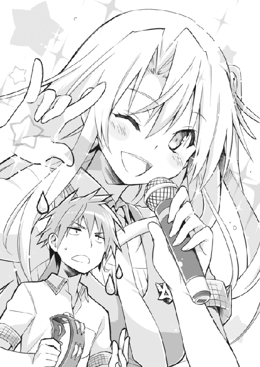
長らくの忍耐も限界を迎え、とうとう孝巳はリモコンを引っ掴んだ。演奏中止のボタンを押すと、程なくして音楽が止む。
スカートを翻しフリフリ踊っていた翠が、途端にジロリと睨んできた。
「何をするの」
「こっちが訊きてぇよ！ 何ノリノリで唄ってんだ！」
現在、孝巳と翠はカラオケボックスの一室にいる。瀬戸川たちが入店したのを見て、後を追って入ったのだ。
数人で入った以上、瀬戸川たちはすぐには出てこないだろう。外で待機するより、こちらも潜入した方がいい......その結果が、ご覧の有り様だった。
翠は入るなりやけにテンションを上げ、気付けばアニメソングのオンステージを始めてしまった。孝巳は完璧な振り付けで楽しそうに唄う翠に愕然としつつ、押しつけられたタンバリンで適当に合いの手を入れ続けていたのだった。
「お前、瀬戸川の監視を忘れてるんじゃないのか？」
「貴方こそ忘れているわ。ここはカラオケボックスよ」
「論点がおかしいだろ！」
駄目だ。翠が確実にボケに染まりつつある。
「大丈夫よ。彼が由香子さんを呼べば、私なら気配くらいは察知できる。鴫原の霊導師を見くびらないで」
マイクを通したエコー付きの声で言われても、まるで説得力がなかった。
......孝巳たちはその後、瀬戸川のグループがとっくに退店していたことを知った。
さすがに少し説教しておかねばならないと思ったのだが、シュンとした翠が蚊の鳴くような声で「ごめんなさい。でも......また練習に誘ってもいい？」と呟いてきたので、不覚にも気を削がれる結果になってしまった。
鴫原翠という少女について、今さらながら分かったことがある。
大人びた容姿と近寄り難い雰囲気に誤解してしまいがちだが、霊導師であることを除けば彼女はごく普通の女の子だということだ。
恋愛映画を観て鼻をグシグシすすらせるし、絶叫マシンに乗って絶叫したりもする。そんな素顔を隠さず見せてくれるたび、もしや自分に気があるのではと一時は思ったが、要は彼女には友達がいないのだ。単に一人で行きづらい場所に付き合わせているだけなのだろう。円滑な人間関係はどこに行ったのだと突っ込んでやりたかった。
カラオケを出たあと。すっかり瀬戸川を見失った孝巳たちは、夕刻まで街中を歩き回ったのちに結局捜索を諦めることにした。
疲れた足を引きずり、緩やかに流れる川を見下ろす土手を行く。せっかくなので、土手から河原へ下りて歩くことを提案した。
巨大な川に沿って、雑草の繁茂した土の直線がどこまでも伸びている。時おりジョギングや犬の散歩をする人とすれ違いながら、ブラブラと河原を進んでいく。
「訊きたかったのだけど」
しばし歩いていると、不意に翠が尋ねてきた。
「紺野くんは、瀬戸川くんへの腹立たしさはないの？」
「そりゃあるさ。有働も言ってた通り、あいつのやったことは殺人未遂だ。本当ならぶん殴ってやりてぇよ」
不機嫌に言った孝巳に対し、しかし翠は「そうじゃなくて」と首を振った。揺れる髪が夕日を受け、川面と同じようにキラキラと煌めいていた。
「貴方の憤懣は、瀬戸川くんが由香子さんを使って復讐に及んだことばかりに向けられているように見える。紺野くんだって、彼に謀られ踊らされたのでしょう？ それに対しての怒りはないの？」
「そこに関しちゃ俺に怒る権利はない。そりゃ騙されたのは気分悪いが、俺は有働やお前から散々忠告を受けてたんだからな。俺がやらかしたことに比べりゃ、瀬戸川の俺への嘘なんて可愛いもんだ」
その率直な意見に、やにわに翠がクスリと吹き出した。
いつも凜々しい彼女にしては珍しい反応だったが、今となってはさほど違和感はない。カラオケでの狂態を見たあとなので、なおさらだ。
「武本さんとの喧嘩といい、有働瑠璃との関係といい、貴方って根っからのお人好しね」
「耳に激痛が走るな」
「他人のことばかりに躍起になって、自分は散々な目に遭って」
「団体競技をやってたせいかもな。その割には今も昔も、一人相撲ばっかりだが」
「......でも、私は嫌いじゃないわ。そういうお人好し」
「そうか」
「うん」
笑顔のまま頷いた直後、いきなり翠がハッと色を変え、凄まじい勢いで首と両手を振ってきた。何故だか酷く動揺していた。
「ち、違うわよ」
「何が」
「そういう意味じゃない」
「どういう意味だよ」
やけに目が泳いでいる。異様に顔が赤かった。
「今のは忘れて。幻聴よ。べ、別に私の好みを言ったわけじゃないのっ」
取り乱している理由が分からず、孝巳は首を傾げるしかなかった。普通の女の子だと思ったが、やっぱり変な奴だ。
しばらく挙動不審を続けたあと、翠は大仰な咳払いをして力ずくで澄まし顔に戻った。
彼女が手を後ろに組むと、それでなくとも顕著な胸周りの凹凸が一層鮮明になる。一体あれは何カップあるのだろうか......カップといえばキャッチャーの股間防具しか知らない孝巳には、女性のバストサイズなど未知の領域だった。
「......そういえば、何でもアリを実践している無法者は、今どうしているのかしら？」
「有働のことか？ あいつはネタ作りに必死だよ。瀬戸川のことなんて、もう頭の片隅にもないみたいだ」
この間だってそうだ。「瀬戸川？ どこの川？」なんて言っていた。奴の気紛れな性格を考えると、お仕置きのことだってその場の気分で言っただけの可能性がある。
しばらく進むと、ボロボロに汚れた野球のボールが草の間から顔を出していた。
糸がほつれ皮がベロリと捲れた、もはや使い物にならない硬球だ。誰かが捨てていったのだろうと、孝巳は道すがらそれを拾い、意味もなく片手で弄び始めた。......ボールを触ったのは、いつ以来だろうか。
「上手ね。まるで手に吸いついているみたい」
滑らかにボールを転がす孝巳の指先を見て、翠が思わず感嘆を漏らす。
「何年も毎日触ってりゃ、誰でもできるさ」
「さっきの団体競技の話じゃないけど、そういえば貴方、中学時代は有名なピッチャーだったそうね。全然知らなかったけど」
「お前とも同じ中学のはずなんだけどな。だって有働の幼馴染みなんだろ？」
途端に翠が沈黙し、覇気なく項垂れた。川へ視線を転じ、やがて追想するように呟く。
「まともに話したの......二年振りぐらいだったわ」
やけに感傷的な声音だった。心なしか歩調まで遅くなっている。黄昏の暗景に浮かぶその横顔はいつもよりも儚げで、寂しげに見えた。
「昔からあんな子よ。私の忠告なんて耳も貸さない。わがままでマイペースで威張りんぼ」
こと瑠璃の話題になると、彼女はいつも愚痴っぽくなる。もしかしたら笑いを学びたがるのも、瑠璃への対抗心なのかもしれない。
「あいつこそ実力行使で叩きのめしてやりゃいいんじゃないか？ 鴫原ならできるだろ」
「どうかしら。あの子は簡単に組み伏せられるタマじゃないわ」
「でもお前、凄い守護霊を二体も持ってんだろ？」
「あっちは物量があるわ。それに......」
ふと翠が言い淀む。しばらく黙したのち、やがて彼女は消え入りそうな声で思わぬ言葉を吐き出した。
「私は小父様と......あの子のお父さんと約束したの」
「有働の親父さん？」
「ずっと友達でいるって。あの子の傍にいる、って。でも、今の私は――」
「............」
「だから、私には負い目があるの。あの子があんな状態にあるのは、私にも責任が......」
またしても翠が言葉を止めた。しかしそれは、先ほどとは意味の異なる中断だった。
不意に孝巳の腕を掴み、彼女が停止を促してきた。怪訝に眉を寄せた孝巳に、翠は顎で小さく前を指し示した。
「......あ」
その視線に倣うと、遠く離れた前方に二つの人影があった。夕暮れの薄闇のせいで今まで気付かなかったが、もうずいぶん前から彼らは前を歩いていたようだ。
小柄な影が二つ。内の一人を、孝巳も翠もよく知っていた。まだ二十メートルほど離れているが、見間違うはずもなかった。
瀬戸川圭太が、女の子を連れて歩いていた。しきりに女の子に接近しては、そのたびに突き放されている。それでもめげずにちょっかいを繰り返し、楽しげに笑っていた。
「あいつ、何してやがるんだ」
「見た感じ、女の子を誘ってる真っ最中といったところね」
孝巳には、翠の言葉がよく理解できなかった。だって瀬戸川は、由香子を守護霊にしたままなのだ。
もしや、もう由香子を成仏させてしまったのだろうか？ 復讐はやっぱり、武本の大怪我で果たされたのか？ 孝巳にはそれくらいしか状況分析ができなかった。
「由香子さんは、まだ瀬戸川くんの傍にいるわ」
「まだいる？ だったら何で他の女を誘ってる？」
それが甚だ間抜けな質問であると言いたげに、翠は凄まじく白い目で孝巳を睨んできた。
「いい加減に理解なさい。彼は由香子さんのことなんて、愛していないのだと」
明確に指摘され、孝巳の心臓が拍動を早めた。
瀬戸川が山根由香子を復讐に使ったことを考えれば、もちろんそれは推測に難くない。でも、孝巳は心のどこかでその可能性を否定してきた。
確かに瀬戸川は、由香子の霊を間違った手段に利用した。それは孝巳にとっても多いに憤慨する話だ。でもそれは、奴の根性が少しばかりひねくれていただけのことだ。彼だって歪ながらも、由香子を愛していたから......だからこその暴走だったのではないのか。
自分のために犠牲になってくれた恋人を、まだ死別して二ヵ月ばかりの恋人を、守護霊などと割り切れる薄情な人間がいるわけがない。それが自身の一般常識に準じて導き出した、孝巳の見解だったのだ。
（瀬戸川。俺はまだ、お前を買い被ってたのか）
知らず足早にその場を歩き出す。瞳には、女の子の肩を抱こうとするも手を払われ続ける瀬戸川を映していた。
（お前は山根由香子が見てる前で、その女を口説いてんのか）
愛していないなら、どうしてこの世に引き留めた？ どうしてそのままあの世に逝かせてやらなかった？
瀬戸川たちとの距離は、どんどんと詰まっていく。背後で翠が何度も停止を呼びかけていたようだが、足は止まらなかった。
（離れたくなかったから引き留めたんじゃないのか？）
瀬戸川が分からない。違うのか。まさか心底、己を純然たる被害者だと思っていたのか。
山根由香子に手を汚させ、お前はその笑顔を浮かべているのか――
「瀬戸川ぁ！」
あと数メートルまで迫ったとき、孝巳は声を張り上げた。
女の子に夢中になっていた瀬戸川は、その声で初めて孝巳の存在に気付いたようだった。女の子と同時に振り返り、一瞬ポカンとしたのち、たちどころに挙動不審になる。まずいところに出くわした......そんな表情をしていた。
「こ、紺野くん......」
「瀬戸川、楽しそうだな。何やってんだ？」
激情を極力抑えつつ、二人の前に立つ。よく見ると、彼女の顔にも見覚えがあった。同じクラスの、いつも瀬戸川が引っついているグループの一人だ。
「駅前で話して以来か。あの話の続きをさせろ。山根由香子のことだ」
「話って、僕にはもう話なんて......」
「武本が屋上から落っこちたのは、お前が山根にやらせたんだな？」
意味が分からず佇立している女の子の横で、瀬戸川が露骨に狼狽した。
孝巳は土面を踏みしだくように、さらに一歩進み出た。
「山根由香子は、お前の守護霊だな？」
「こ、紺野くん、その話は今日はちょっと」
「そうはいかねぇ。武本のことは、俺にも責任がある。お前に洗いざらい訊かないことには納得がいかない！」
孝巳の剣幕に、二人はますます蒼白になって畏縮する。特に女の子の方は、突然現れて苛烈に猛る学校一のヤンキーに、今にも泣き出しそうだった。
「お前言ったよな？ 山根由香子は、自分のことを恨んでるって。自分はそれだけのことをしたって。あれも嘘か」
「だ、だから、その話はまた今度。今日は駄目なんだ。この子と約束があって」
「人一人殺しかけといて、何ぬかしてやがる！」
落雷のごとき一喝に、瀬戸川がビクリと身をすくませる。
おそらく今の自分は、今回の一件に対してやってきた様々な行動を全て台無しにしているのだろう。武本を殴り倒したときのように、また独り善がりの空回りをしているのだろう。つくづく最低の道化だと思う。
が、もはやどうにもならない。由香子をいつまでもこのままにしておくのも、瀬戸川の本心が分からぬままなのも、自分がそのことで悶々としているのも、もう真っ平だった。
「お願いだよ紺野くん。今日は見逃してよ......やっと森島さんと二人になれたんだ」
瀬戸川がしきりに隣の少女を気にしている。
森島と呼ばれた彼女は、未だ事態が呑み込めずただ孝巳に怯えていた。
「森島さんよ、悪いが今日のところは瀬戸川を譲ってくれ。心配しなくても、手荒なことはしない」
森島より先に、瀬戸川が「や、やめてよ！」と悲鳴のような抗議を上げる。
「紺野くんだって、有働さんって彼女がいるくせに、鴫原さんと一緒にいるじゃないか！ 学校一の美人と！」
言われて、孝巳はすぐ後ろに翠がいることにやっと気付いた。
翠はもはや制止を諦めたらしく、ただ無言で事の成り行きを見守っていた。
「僕だって女の子と付き合いたいんだ！ やっと一緒にお茶するチャンスなんだ！ そのために僕がどれだけ頑張ったか、どれだけ勇気を出したか分かるっ？」
まるで今日が人生の分岐点だと言わんばかりに、瀬戸川が捲し立てる。
頑なに自分の都合を主張する彼に、孝巳は苛立ちを募らせ奥歯を噛み締めた。
「女と付き合いたいだ？」
由香子を背中に憑けたまま。彼女を復讐に使っておきながら。
ああ、やっぱりこいつはそうなのか。
「だから今日は駄目なんだ！ お願いだよ紺野くん！ 僕の過去を知ってるなら、僕がどんなに憐れな人間か――」
「あ、あの私、やっぱり帰る」
瀬戸川の言い終わりを待たず、森島が震えながら命乞いのように言った。
「紺野くん、大事な話があるみたいだし......私はただ、瀬戸川くんがコーヒー代を出してくれるって言うから......ただそれだけだったし」
「そんな、森島さん！」
身を翻した森島に、慌てて瀬戸川が追いすがった。彼女の腕に抱きつき、癇癪を起こして地団駄を踏む。
「酷いよ！ 嘘つき！ ＯＫしてくれたじゃないか！」
「放してよ！ 紺野くんに睨まれるなんて、あんた何したの？ 馬鹿じゃないの!?」
「だから違うんだよ！」
「いいから放してってば！」
軽量の瀬戸川を引き剥がし、森島が走り出す。
......その足が、数歩も行かずに止まった。
彼女は途端に引きずられるように、前を向いた体勢のままズルズルと後退を始めた。土の地面に踵の轍を刻みつつ、立ち上がった瀬戸川の元に有無を言わさず戻される。
「え？ え？ 何これ？」
両腕をピタリと体側につけ、不自然に顎を上げて喉を晒し、森島が惑乱の声を上げた。
孝巳は唖然としたまま、瀬戸川の横で直立不動となった森島を刮目していた。何が起こったのかは、すでに分かっていた。
「山根......」
――山根由香子が、森島を後ろから抱き締めていた。長い腕を巻きつけ、森島の上体をガッチリと拘束したまま、虚ろな表情で宙を見詰めていた。
「何これ、何なの？ 何で動けないの？」
由香子に気付かず、森島は突然の金縛りにパニックに陥っている。
忘我で立ち尽くす孝巳の耳許で、翠がヒソリと囁いてきた。
「紺野くん、下手に動かないで。不安的中だわ。私が今まで動かなかった、もう一つの理由。瀬戸川くんを無闇に刺激しないこと......やっぱりこうなってしまった」
６
いきなり我が身に降りかかった超常現象に恐慌し、森島はとうとう泣き出してしまった。
その口に由香子の見えない指が突っ込まれると、彼女はいよいよ吐息すら漏らせなくなる。何度もえづきながら、涙と涎を垂らし、眼球だけで助けを求めていた。
孝巳と翠が注視する中、瀬戸川は棒立ちで下を向いていた。地面を見詰め、肩を小刻みに震わせ、何やらブツブツと呟いている。
空気が張り詰めている。夕暮れの涼しさとは異なる寒気を感じ、孝巳は唾を飲み込んだ。
「瀬戸川くん」
孝巳の横に立ち、翠が真っ直ぐに瀬戸川を見据える。彼女はいつもの抑揚のない口調で、「森島さんを放して」と二の句を継げた。
その声が聞こえていないのか、瀬戸川は依然うつむいたまま唇を微かに動かしている。やがてゆっくりと上げられた彼の顔は、涙でグシャグシャになっていた。
「どうして」
しゃくり上げながら、たちまち子供のように喚き始める。
「どうして邪魔するんだよぉ！ 何で僕が女の子と仲良くしちゃいけないんだ！」
「......お前のクレームはあとで聞く。その前に森島を放せ」
よくない状況だ。これでは人質を取られたようなものである。
まさか瀬戸川がここで由香子を出してくるとは想定外だった。いや、頭に血が上っていた孝巳は、そんな展開など全く考慮していなかった。感情に任せた軽はずみな行動が、またも事態を悪化させてしまった。
「どいつもこいつも、何で僕に嫌がらせするんだ！ こんなの絶対納得いかない！」
瀬戸川が激昂を加速させる。
「武本は自業自得だろ！ 報いを受けただけだろ！ 僕は関係ないだろ！ じゃあ僕は一生、由香子のために独り身でいなきゃいけないのか！ 裏切ったのは由香子なのに！」
「山根が裏切っただと？」
「そうじゃないか！ 本当に僕が好きなら、武本の女になんかなるもんか！ 僕ぐらいしか相手にしてもらえなかったくせに、ちょっと他の男が寄ってきたら簡単に乗り換えやがって......僕がどれだけ由香子に傷付けられたか！」
「違うだろ！ 山根が武本のとこに行ったのは、お前が毎日殴られて......」
「もういいわ。充分よ」
嘆声と共に、翠が割って入ってきた。その瞳は深い無念に満ち、口は固く真一文字に結ばれていた。彼女はもう一度だけ嘆息すると、瀬戸川へ向けて苦々しく告げた。
「これも結局、霊導師としての私の未熟の至り。由香子さんをベストな方法で還すことにこだわり、紺野くんの忍耐を読み誤り、グズグズと時間をかけた不手際......私はまだまだ修行が足りない」
翠が形のよい唇をすぼめ、小さくヒュッと息を吸う。
その口笛に呼応して、半透明の巨大な鷹が彼女の肩に顕現した。翠の守護霊、禽踊。禍々しい霊圧を発する、神速の飛翔で敵を裂く鷹だ。
「残念だけど、由香子さんは強制的に成仏させることにするわ。幸い、瀬戸川くんが彼女を悪用する現場は押さえられたことだし、ね」
「ち、近寄るな！ 近寄ったらこいつを殺すぞ！」
瀬戸川が叫ぶと同時に、由香子の節くれ立った細い手が森島の喉を掴んだ。
森島が苦悶に身をよじり、靴が片方脱げた足をバタつかせてもがく。その爪先は地面を離れ、数センチほど宙に浮いていた。
「由香子は僕の命令で、何だってするんだぞ！ 何だってだ！ そりゃそうさ、こいつは僕への罪滅ぼしのために戻ってきたんだからな！」
居丈高に言い放った瀬戸川に反応し、由香子の指がさらに森島に食い込む。
鯉のように口をパクパクとさせる森島に、翠が僅かに逡巡の色を見せた。瀬戸川の逆上が予想以上であることを察したようだった。
「殺せないと思ってるんだろ？ 舐めるなよ！ 殺したって、僕は警察に捕まったりしないんだからな！ 由香子が殺すんだからな！」
瀬戸川たちとの距離は五メートルもない。禽踊ならば半瞬で由香子に迫れるだろうが、森島救出の成否までは予測が立たなかった。
鷹が動いた瞬間に、森島の首をへし折ることくらいはできるはず。由香子は武本をフェンスに吊り上げるほどの力はある。......瀬戸川を刺激したのは、重ね重ね失敗だった。
（俺が招いた状況だ）
孝巳が打破せねばならない。
（山根を森島から引き離す。もしそれができれば、きっと鴫原なら何とかしてくれる）
孝巳は迷わず腹を決め、目の前の翠を小声で呼んだ。
振り向いた彼女を、あらん限りの思念を込めて見詰め返す。
彼女はそれだけで何かを理解したように、小さく頷いて再び瀬戸川に向き直った。一言、「すり抜けるとは思わないで」と注意を残して。
（あれだけで察してくれるとは、伊達にこの数日付き合ってないな）
意識のコンタクト、突発的行為への心構え......彼女の鋭敏な感性に改めて脱帽した。
優秀な教え子を残し、孝巳はゆっくりと後退していく。瀬戸川が警戒の目を向けてきたが、離れていく分にはそれほど刺激はしないだろう。
（ここら辺か？ いや、まだだな）
さらに一歩、二歩、三歩......あともうちょっとか。チャンスは一回。失敗はできない。
記憶よりも感覚を頼りに、おおよその地点まで到達すると――孝巳はポケットから先ほどの収拾物を取り出した。ボロボロに傷んだ、野球のボールだ。
「二度と僕に近付くな！ 近付いたら、僕は由香子に何を命令するか分からないぞ！ さあ！ さっさと消えろ！」
孝巳が退がったことに若干安堵したのか、さらに恫喝を続けた瀬戸川に向けて。
孝巳は両腕を思いきり振りかぶった。
昔のような球が投げられるとは思っていない。そのために少し距離を短く取った。視界の悪いこんな薄闇では避けることはできまい。硬球の直撃を食らえば、必ず瀬戸川は隙ができるはずだ。
（山根、お前はこんなこと望んでないんだろう？ お腹の赤ちゃんと、静かに眠りたいんだろう？）
瀬戸川が事態を悟り、仰天したのが分かった。
構わない。体が覚えているままに、膝、腰、胸、右肩へと回転を繋ぎ――
猛然とボールを投げ放つ。
「ゆ、由香子！」
自分に向けて矢のごとく飛んでくる剛球に、瀬戸川が半狂乱で叫ぶ。
由香子が即座に森島から離れ、瀬戸川の前に立った。ダラリと両腕を下げ、無色な表情で、それでも恋人を身を呈して守るように、彼女は自らを盾にしてきた。
すり抜けるとは思うな――翠の言うように、瀬戸川の命令があれば由香子は物理的干渉が可能なのだ。そんなことは承知している。あの球は、彼女には当たらない。
――刹那、ボールが落ちた。
狙い通りに鋭く、まるで直角に折れるように、ボールは由香子の消失した足をすり抜ける。......目の錯覚か、その軌道に沿ってボールが淡い光の帯を引いたような気がした。
鈍い音を立てて瀬戸川の向こう脛にボールが命中すると、彼は「ぎゃっ！」と大きな悲鳴を上げ地面に崩れ落ちた。
その数瞬前に、翠はすでに動いていた。凄まじい脚力であっという間に由香子へ駆け寄ると、その鼻先に向けて柏手を打つ。相撲の猫ダマシに酷似していた。
パァン！ という乾いた音が人気のない河原に響くと、由香子が初めて驚いたような表情を見せた気がした。
「鴫原家霊導師三十七代当主、鴫原翠の名において告げる」
朗々たる声に、由香子の双眸が眼前の少女を捉える。
「己が桎梏を棄て、現の因業を濯ぎ給う」
由香子の弛緩した全身が、ブルブルと蠕動を始めた。虚ろだった瞳は焦点を合わせ、まるで震撼するように翠を凝視していた。
「山根由香子――あちらへお越し」
もっと複雑で長い経文でも唱えるのかと思ったが、美しき霊導師が発した言葉はそれで終わりだった。
瀬戸川は脛を抱いて悶絶するだけで、由香子を見てはいなかった。だから彼は、かつての恋人を、自身の守護霊を、見送る機会を永遠に逸してしまった。
やがて彼が呻きながら涙目を向けたときには......山根由香子はこの世から跡形もなく消滅していた。
７
「一件落着かな？」
いきなり真後ろで上がったその声に、孝巳は思わず飛び上がりそうになった。
振り向くと、瑠璃が立っていた。
薄いピンクのキャミソールを着て、肩にトートバッグをかけている。私服姿の彼女を見るのは初めてだったが、素足に履いた可愛らしいサンダルも含めてなかなかよく似合っていた。頭に被ったキャスケットに、いつものカッパのヘアピンが付けられていた。
「全く、最初からこうすればよかったんだ。いつまでグズグズしてるんだか」
言いながら孝巳の隣に移動し、瑠璃が手庇で前方を窺う。マウンドからキャッチャーまでの距離は、約十八メートル。距離を短く取ったので、孝巳たちのいる場所は十五メートルほどのところだ。
見ると、翠が気を失っている森島を介抱していた。その脇では瀬戸川がうずくまったまま、魂が抜けたように放心している。由香子がすでにこの世にはいないことは、彼も理解しているようだった。
「有働。お前いつからいたんだよ」
「君が瀬戸川くんに因縁つけてる辺りから。今日は図書館でネタを書いててね、その帰り道だったんだ。しかしナイスピッキングだったね。肩は平気なのかい？」
「俺は空き巣か」
そう短く返すと、孝巳は左手で右肩を押さえた。
今さらながらに、肩がズキズキと鈍い痛みを上げているのに気付く。少し動かしてみると、痛みはさらに跳ね上がった。過去に一度だけ肩を傷めたことがあったが、その時とは質の違う、芯に響く痛みだった。
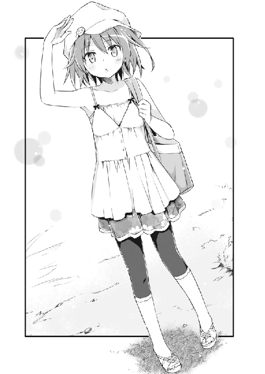
「ウォーミングアップもなしに投げるもんじゃないな......こりゃもう完全にダメだ。でもまあ、最後の一球としては上出来だ。納得のいくフォークだったぜ」
もとより役に立たない右肩だったのだ。最後に山根由香子を成仏させるために使えたのなら安い代償だ。由香子には、最後まで迷惑をかけてしまったから。
「ま、ささやかながらもこれが俺の引退試合ってとこだな」
「いい話だね。でも、オチはどこだい？」
こんなときにまで笑いを求めてくるのは、どういう神経なのだろうか。
まあ、こいつらしいと言えばこいつらしい。孝巳は呆れつつも苦笑し、自身の投げた球の軌道を片手で再現してみせた。
「オチただろ。綺麗にストーンとさ」
「............」
「いや、だからボールが......」
「で、オチはどこだい？」
「......お前、他人のボケには厳しいな」
不服げに睨む孝巳を置いて、やにわに瑠璃が歩き出した。仕方なく追従すると、前方の三人を見詰めつつ彼女が再び口を開く。
「この状況は、もっと早く訪れると思ってたんだ」
「え？」
「もうちょっと早い時期で、君はまた暴走すると踏んでたんだよ。こんなくだらない一件に、いつまでも相方を取られるとは予想外だった。翠に延滞料を請求しないと」
「あのなぁ......」
「さて。頃合いもいいようだし、総括といこうか」
そう瑠璃がうそぶいたときには、すでに三人が目の前だった。
睨むような翠の視線を尻目に、瑠璃が静かに瀬戸川の正面に立つ。力なく見上げてきた彼に、カッパ少女は意地の悪そうな笑みを返した。
「やあ瀬戸川くん、痛そうだね。森島さんにフラれて、由香子さんを失って、武本くんを殺し損なって、おまけにチンピラにボールをぶつけられて......散々だね」
瀬戸川が顔を歪ませる。無言で瑠璃を仰ぐ両目は、どこか恨めしげだった。
「時に瀬戸川くん、最後に一つ確認しておきたいんだけど......山根由香子さんのお腹にいた赤ちゃん、パパは君だよね？」
孝巳と翠が、瀬戸川に代わって「えっ」と反応する。
「ど、どういうことだ？」
「言葉のまんまの意味だよ。まあ、ただの興味本位の無粋な詮索だ」
「父親が......瀬戸川？」
「紺野くんに『自殺時の由香子さんは妊娠していた』と聞かされたときから、思慮深い私は考えていた。本当に赤ちゃんのパパが武本くんなら、由香子さんは命まで絶ったりしなかったんじゃないか、ってね。中絶でも何でもすればよかったのさ。でも彼女の頭にその選択肢はなかった。何故かな？」
そんなこと、孝巳の貧困な想像力で分かるわけもない。
「赤ちゃんのパパが瀬戸川くんだとしたら、不思議がる必要はないだろう。可能か不可能か以前に、そもそも由香子さんは中絶するつもりなんてなかったのさ。だって、瀬戸川くんの子なんだから。愛する人の子なんだから」
瀬戸川が堪らず「そんなこと」と口を挟みかけたが、瑠璃は構わず続けた。
「だから私は思った。彼女が自殺した本当の理由は、瀬戸川くんに父親であることを否定されたこと。愛する人に拒絶され、さらには不義を疑われたことだったんじゃなかったのかな？ と」
死に至る病とは絶望のことだ、と言うからね――と、最後に瑠璃は肩をすくめてみせた。
「僕の子なもんか！ 武本の子に決まってるじゃないか！」
瑠璃と入れ替わるように、瀬戸川が感情を爆発させた。地面を叩き反駁するその顔は、普段の彼からは想像できぬほど荒々しい形相をしていた。
「今さらどのツラ下げて戻ってきたっていうんだ！ 散々武本に抱かれといて、妊娠の後始末だけ僕にさせようってのか！ ふざけるな！ そんな虫のいい話があるか！」
瀬戸川が由香子を大切に思っていないことは、もう孝巳も理解している。それでも彼が由香子を悪し様に罵るのは、正直あまり聞きたくなかった。
「あの女、一緒に学校辞めて、遠くに引っ越そうなんて言いやがった！ 二人で働いて、子供を育てようなんて言いやがった！ そんなのおかしいだろ！ 裏切ったのはそっちだろ！ だから言ってやった！ お前なんか知るか、勝手に一人でどこへでも行けって！」
「テメェ......」
「そうしたらあいつ、自殺しやがった！ 幽霊になって僕の元に戻ってきやがった！ あいつは死んでようやく分かったんだ！ 僕に罪滅ぼしをしなきゃならないことを！」
「なるほど。話は大体分かった」
特に感傷もなくその憤激を聞き届けた瑠璃は、やがてあっさりと頷き、回れ右して歩き出してしまった。呼び止めたが、無駄だった。瑠璃はもうここには用はないとばかりに、スタスタと立ち去っていく。
「待ちなさい、有働瑠璃」
瑠璃の足を止めさせたのは、翠のそんな一言だった。
翠は森島を置いて立ち上がると、燃えるように瑠璃の背中を睨みつけた。それは今まで見た彼女のどの顔よりも、激しい怒りに満ちていた。
「貴女は......いつまでこんなことを続けるつもりなの！ 霊を弄んで、玩具にして！ いつまでこんなことを！」
「私の生き方に異論があるなら、いつでもかかって来たまえ」
再び歩き始めた瑠璃を、孝巳は慌てて追いかけた。瀬戸川と森島の二人を、翠だけに任すわけにはいかない。だからなるべく手短に質問を済ませねばならなかった。
「おい有働、どういうことだ。鴫原は何であんなにキレてるんだ」
瑠璃はいつもと変わらぬ飄逸たる表情で前を向いたまま、溜息混じりに帽子を取った。まとまりのない柔らかな黒毛が、フワリと風に遊ぶ。
「日本兵」
いきなり瑠璃が言った脈絡のないその単語に、孝巳は「は？」と眉を八の字にした。
「私に憑いている怨霊の中に、日本兵がいると言ったよね。彼はもう私に憑いていない」
「憑いていない？」
「たった今、瀬戸川くんに憑けた。私へ向けられていた憎悪を、そっくりそのまま瀬戸川くんに肩代わりしてもらった。翠はそれに気付いたのさ」
「な......」
反射的に振り向き、瀬戸川を凝視する。
彼は相変わらず座り込んだままで、その様子に異状は感じられなかった。
「一体いなくなったところで、私に支障はない。でも、瀬戸川くんは大変だろうね」
「な、何でそんなこと......」
慄然として問うと、彼女は何てことないように一言「お仕置きだ」と囁いた。
「私と翠の力は拮抗している。私の憑けた怨霊は、翠にも簡単には祓えないだろうね。まあ、夏休みが明けたら回収してあげるよ。それまで無事だったらの話だけど」
孝巳はこの時、初めて心の底から瑠璃を怖いと思った。彼女は自身の怨霊を人に憑けることができ、しかもそのことに何ら躊躇のない人間なのだ。
「これはパートナーのための、個人的な意趣返しだよ。私はこう見えて結構......独占欲が強い人間でね」
骨まで冷え切った体の震えを抑えながら、孝巳はその黒瞳をただ見返すしかなかった。
第四章 一球入魂
１
河原の一件から数日後。夏休みボケで曜日感覚はなくなっていたが、とにかく午前中。
孝巳は学校から程近い市民病院に赴き、武本の病室を見舞った。
何でも入院した三日後には意識も戻っており、間もなく退院できるほど容態は上々だという。武本もそれなりに名の売れた不良だ、常人より頑丈にできているのかもしれない。
部屋を覗いたが、そこに彼はいなかった。直感で何となく屋上に足を運ぶと、果たして備えつけのベンチに座り、一人で煙草を吸っている武本を発見した。
近付く足音にすぐ気付き、武本がこちらを見る。孝巳を捉えた眼光は鋭さを失っておらず、狼狽える気配など微塵もなかった。
「未成年が病院で堂々と喫煙してんじゃねぇ」
武本の正面に立ち、見下ろしながらとりあえず憎まれ口を叩く。
武本はいつの間にやら短髪になっていた。肩まであった金髪はスポーツ選手のように刈り込まれ、すでに根元近くは黒毛になってしまっている。横には松葉杖が立てかけられており、左腕と右足に填められたギプスが痛々しい。
「フン、珍しい顔が来たな」
武本はそう言ってニヤリと笑い、マルボロの箱を差し出し「吸うか？」と訊いてきた。
首を振ってそれを断ると、一度周りをグルリと見回す。日差しが強過ぎるせいか、天気のいい午前中にも拘わらず他に人影はなかった。
「病院でも屋上かよ」
「高ぇトコが好きなんだよ。卒業したら鳶職になるしな」
煙を吐き出しつつ、武本がまた笑う。孝巳に殴り倒されたことなど、まるで何とも思っていないような態度だった。
「で、何の用だ紺野。まさかまだ殴り足りねぇってことはねぇだろ？」
「......一つだけ、確認したいことがあって来た」
しかつめらしく見据えつつ、孝巳は低く切り出した。
「山根由香子の墓」
「あん？」
「よく紫陽花を供えに来てた人間がいたらしい」
煙草を吸う手を止めてじっと見上げてくる武本に、孝巳は犯人を告発するように尋ねた。
「あれはあんたか？」
しばし沈黙を守ったのち、やがて武本が苦笑した。煙草をベンチで揉み消し、小馬鹿にするように片眉を下げてくる。
「そうだって言って、お前信じるわけ？」
「さあな。あまりそこは重要じゃない気がする。ただの好奇心だよ」
孝巳の言葉に何を思ったのかは定かではないが、武本は一つ大きく伸びをしたまま晴天を見上げた。まさしく韜晦を諦めた犯人のようだった。
「一番好きな花だって言ってたからよ」
世間話のように言いつつ、腕を下ろし掌のジッポを弄び始める。
「別に罪滅ぼしでも何でもねぇぜ。俺のただの自己満足......ガラじゃねぇってか？」
「まあな」
素直に頷いてやると、彼は愉快そうに哄笑した。どこか乾いた、空虚な笑い声だった。
「さっきも言ったがよ、俺は来年卒業したら親戚のツテで働くのが決まってんだ」
「............」
「たとえ父親が誰だろうが、ガキも含めて養ってやるから心配すんな。不良なんざもうやめだ......そう言ったんだが」
雲のない空を、鳥影が横切った。直射日光の照り返しで、視界が眩しく白濁している。
「何せ最初が最初だからなぁ。あいつは最後まで、俺の方を向いちゃくれなかったよ。まあ自業自得ってやつかね」
自虐的に肩をすくめた武本に、孝巳は何も言わなかった。
武本に慰めをかけられる権利はない。彼もおそらく、そんなものは望んでいないだろう。
「見ての通り、そっからまた不良に逆戻りだ。色んな女を漁ってみたが、虚しいったらなかったぜ。鴫原って女は確かに上玉だったが、所詮あいつも由香子じゃねぇ」
「もう一つ、訊いていいか」
孝巳の脳裏に、学校の屋上での出来事が蘇る。由香子によって武本が吊り上げられ、地上に落とされた、あの時の光景だ。
「あの時、山根由香子が見えてたのか」
「屋上のときの話か？ ああ、見えてたよ。また会えるたぁ思ってもなかった」
「あんた......抵抗しなかったな」
正確には由香子を見た瞬間抵抗をやめた、と言うべきか。
その質問に、武本は「はあ？」とあからさまに呆れた表情を浮かべた。
「何で抵抗なんざしなきゃいけねぇ？ 由香子が俺を連れてこうってんだ、願ったり叶ったりだ。サイコーの気分だったぜ」
偽りのない笑顔に、複雑な気持ちになる。
山根由香子を愛していたのは、瀬戸川でなく武本だった。もし由香子の霊を引き留めていたのが武本だったら、きっと彼女は怨霊になっていただろう。そして武本はそんな由香子に、嬉々として祟り殺されていたのかもしれない。
「ま、結局そいつも叶わなかったがな。とことん嫌われたぜ、俺も......ああそうだ、俺も一つお前に言いたいこと思い出したわ」
そこでおどけた調子を一変させ、武本が真っ直ぐに孝巳を見詰めてきた。屋上で対決したときと似た、真剣な目付きだった。
「紺野。とりあえずお前に礼を言っとく」
「え？」
「俺をボコッたとき、由香子の仇討ちだって言ってたろ。言っとくがな、そうじゃなかったら俺はもうちょっとお前とやり合えてたぜ」
負け惜しみではないだろう。確かにあの時の武本は、不自然なほど手応えがなかった。わざわざ警棒を出してみせたのも、孝巳の戦意を煽るためか。
「お前みたいに由香子のことでブチギレてくれる奴を、俺は多分待ってたんだろうよ。その役が瀬戸川のボケだったら、もっと上等だったんだがなぁ」
まぁあのヘタレじゃ無理か、と笑って武本は新たな煙草をくわえた。
「武本。もう一度確認しておく。紫陽花が好きだ......それは山根から直接聞いたんだな？」
「ああ。あいつが自分のことを教えてくれたのなんざ、それだけだよ。笑えるだろ」
「瀬戸川は知らなかったみたいだ」
武本のライターの火が、煙草につく前に消えた。
儚い期待だったが、孝巳は先に瀬戸川に質問していたのだ。山根由香子の墓に紫陽花を供えていたのは、お前か？ と。彼は知らないと言った。それ以前に瀬戸川は、墓の場所すら知らなかった。好きな花など教えられたことがないと首を振るだけだった。
「特に深い意味はない。瀬戸川が忘れてるだけかもしれないし、山根があんたに嘘を言っただけかもしれない。どっちみち俺にとっちゃ大した問題じゃない。ただ......山根由香子の母親も、墓に紫陽花を持って来てた」
「............」
「あとはあんたが好きに解釈すればいい。死人の意思を決めるのは、残された人だからな」
火のついていない煙草を指に挟んだまま完全に沈黙してしまった武本を置いて、孝巳は屋上を去っていった。
病院を出ると、翠が自動ドアの表脇に立っていた。
孝巳の姿に気付くと開いていた本を閉じ、鞄にしまい込む。その表紙に『ハウツー・ユーモア』と書かれていたのを見て、孝巳は顔をしかめた。
「会えたの？」
敷地を抜け、外壁に沿って伸びるレンガ張りの歩道をしばらく進んでいると、翠がようやく訊いてきた。陽光を受けた街路樹が、地面に濃い影溜まりを作っている。
「ああ」
「見たところ返り血はついていないみたいで、安心したわ」
「とどめ刺しに行ったわけじゃない」
由香子の墓に紫陽花を供えていたのは、武本かもしれない......その疑念は、実は以前から抱いていた。
最初はあり得ない可能性だと一蹴していた。それでも最終的にあえて確認しに行ったのは、ひとえに事件へのけじめ、そして孝巳自身の心の安寧のためだった。
瀬戸川からも武本からも悼まれていないなら、山根由香子という少女は一体何だったのか。武本を許す気など毛頭ないが、瀬戸川に期待できない今、せめて彼が由香子の死を悲しんでいなければとても救いがない......そんな感傷故の訪問だったのだ。
結果を告げると、翠の眉が微かにひそめられたのが分かった。少し思案したのち、戸惑いがちに向けてきた二つの瞳は、光の加減か緑がかった翠玉のように見えた。
「どうして......紫陽花の主が武本さんだと思ったの？」
「特に確信はなかった。ただ、ずっと引っかかってたことがあったんだ」
あの時の記憶を改めて思い起こし、青空を見上げる。
八月も後半に差しかかり、太陽はより苛烈にギラギラと燃え盛っている。たっぷりあると思われた夏休みは、気付けばあと二週間ばかりを残すのみだった。
「笑ってやがったんだよな、あいつ」
「え？」
「屋上から落ちた武本の顔が、笑ってたんだよ」
孝巳の目の前、僅か数十センチ先を落下していく武本。一瞬だけ見えた彼の顔は、何故だか満足げな笑顔を浮かべていたのだ。
「ワケが分からなかったぜ。その時は恐怖でおかしくなったんだろうと思った。でもな......お前や瀬戸川を見てて、ちょっと思ったんだ」
「私や、瀬戸川くん......？」
「人は意外と見掛けによらないもんだ、ってな」
結果的に武本は、孝巳の心を充分に満たす返答をくれた。もしかしたら人間というのは――誰しも霊導の素質を持っているのかもしれない。
そんなことをぼんやりと考えながら視線を翠に移すと、彼女は押し黙ったまま下を向いていた。もしや気を悪くさせたかと身構えたが、返ってきたのは意外な指摘だった。
「お墓でも思ったけど、貴方はやっぱり霊導師に向いているのかもしれない」
「え......」
「貴方は今日、武本さんを霊導してきたのね。それは......私には不可能なことだった」
「霊導されたのは俺の方さ。殴ったことだけは謝ろうと思ってたんだが、逆にお礼を言われちまった」
「謙虚さも大切な資質よ」
上機嫌に肩の髪を払った翠が、一転して「ところで」と大きな瞳で覗き込んでくる。
「人は見掛けによらない――なら、今の私はどう映っているのかしら？」
「意外とお茶目でノリがいい奴だよ」
「......それ、できるだけ学校のみんなに吹聴してちょうだい」
翠が悪戯っぽく笑ったので、孝巳も口許を綻ばせた。吹聴を実行するには、まず孝巳自身の『人間魚雷』のイメージを払拭する必要があるだろうけど。
会話が途切れ、束の間黙って歩道を歩き続ける。微風に乗って届く翠の髪の芳香にも、今やすっかり鼻が慣れてしまった。
「......山根は、何で武本に紫陽花が好きだって教えたんだろう」
半ば独白のような呟きだったが、翠は返答をよこしてくれた。
「確かに由香子さんは瀬戸川くんに一途だったけど、好きだと言われて嬉しくない女の子はいないわ」
「あんな強引なやり方でもか？」
「自分を好きだというだけで、何割かは贔屓目になってしまうものよ」
「じゃあ、もし山根がさっさと瀬戸川を見限っていたら......」
こんな悲劇は起きていなかったのではないか。もしも彼女が、武本を受け入れていれば......それは少なくとも、命を絶つよりはましな選択ではなかったのか。
そんな意見を述べると、翠は途端に辟易とした横目を向けてきた。さっきの称賛が嘘のような、ベンジョコオロギを見る目だった。
「そんな簡単なものではないでしょう。武本さんのやり方は無茶苦茶だったし、あんなピアスまみれのチンピラゴボウを両親に紹介できるわけないもの」
「それはお前の好みじゃ......」
「由香子さんは、瀬戸川くんが好きだったの。あの軟弱モヤシのどこが良かったのか分からないけど、彼女は瀬戸川くんしか考えられなかった。そんな恋心も汲み取れないの？」
「む......」
「そんなだから腐ったエリンギと呼ばれるのよ」
「誰からだよ！」
ちなみに、モヤシこと瀬戸川は体調を崩し、自宅の部屋から一歩も出てこなくなっているらしい。おそらくは、瑠璃に憑けられた日本兵の怨霊に悩まされているのだ。自室にいる分にはまだ危険度は低いだろうし、あと二週間ほどの恐怖体験だ。甘んじてお仕置きを受けてもらうしかない。
「とにかく、由香子さんの案件が片付いた以上、貴方とのコンビもこれで解消ね」
当然そうなる。あまり良い記憶のない日々だったが、いざ終わりとなれば若干の名残惜しさがないこともない。
「貴方はまた......あの子の傍に戻るの？」
不意に翠が歩を止め、訊いてきた。心なしか彼女の顔が不機嫌に見えた。
孝巳もまた立ち止まり、頭を一つ掻いて「もう少しの間だけな」と答えた。
「あんな子のどこがいいの」
「さあな。どこが悪いのかなら、百個ほど答えられるが」
「百個、寛大ね」
「あそこに籍を置いてるのは、自分自身のためだ。また野球ぐらい夢中になれるものを探すために、とりあえず涙を飲んで下僕やってるのさ」
それで何か見付かるのかは分からない。が、少なくとも有働瑠璃は、相方として孝巳を必要としている。野球を失った孝巳を必要としてくれたのは、今のところ彼女だけだ。
いけ好かない怨霊ブリーダーだが、求めてもらえるのは悪い気はしない。先ほどの話ではないが、自分はもしかしたら瑠璃を何割か贔屓目に見ているのかもしれなかった。
「......昔、あの子がまだ花粉症に悩んでいた小学三年生の頃」
暗然と項垂れたまま、ふと翠が語り出した。
どういう脈絡なのか定かではなかったが、孝巳はそのまま耳を傾けた。
「二人で下校していたとき、彼女が千円札を拾ったの」
小学生には大金だ。孝巳は高校生でありながら、五十円を交番に届けた経験がある。
「普通、人間の取る行動は大きく三つよ。交番に届けるか、着服するか、捨て置くか」
「そりゃそうだろう」
「でもあの子は」
翠は沈痛な面持ちで唇を噛み、言葉を一度切った。
「あの子は、その千円札で鼻をかんだ」
「............」
「理由は簡単よ。花粉症で鼻がムズムズしていたから。その時二人ともティッシュを切らしていたから」
ツッコミは入れなかった。翠が笑い話をしたいわけではないことは瞭然だったから。
「昔からそういう傾向があったわ。あの子は、自分の価値観にしか従わない。社会的通念なんか意に介さない。死者は尊ぶべきもの、霊はあの世へ還すもの......そんな価値観はあの子には意味をなさない」
子供の頃からそういう奴だったのか。まさに筋金入りだ。
「私はその時に知ったの」
「............」
「紙幣は鼻水を吸ってくれないと」
「そこかよ！」
今度は全力でツッコミを入れた。こいつが狙っていたのが瞭然だったから。残念ながら、まだ会話のＴＰＯは理解していないようだ。
翠は照れ隠しのように「閑話休題」と舌を出し、コホンと咳払いした。その似合わぬ砕けた仕草に、思わず呼吸を忘れ見惚れてしまう。......出会ったときは、彼女にこんな一面があるとは思いもしなかった。人には色んな素顔があるのだと、改めて思う。
「とにかく、私とあの子の価値観のズレは年を経るごとに大きくなっていった。そしてある出来事を決定的な契機に......私は激論の末にあの子と決別した」
霊導師の翠からすれば、霊を好き勝手に弄ぶ瑠璃の行動はとても看過できるものではなかったのだろう。二人はもともと親友だ。翠は袂を分かつ最後のときまで、きっと何度も何度も説得を繰り返してきたに違いない。
「自惚れていたのかしらね。他ならぬ私の言葉なら、聞き入れてくれると思っていた」
「聞きゃしなかったか、あいつ」
「ええ。だから最後の手段で突き放したつもりだった。でも、あの子は変わらない。変わらないどころか、瀬戸川くんに怨霊を憑けた。霊を道具として、災厄をばら蒔いた」
だからあれほど怒ったのか。無理もない、瑠璃の怨霊乱用は逆にエスカレートしていたのだから。
......数分後。五十メートルほど先の交差点で、孝巳と翠は別れた。別れ際に彼女に告げた。「お前はボケが粗い。また時間があったら見てやるから、連絡をよこせ」と。
翠はキョトンとしたのち、ややあって「そうする」とはにかむように頷いた。
２
翠と別れたあと、孝巳はそのまま青鶴高校へ行き『お笑い研究会』の部室の扉を開いた。
別に今日は出席命令があったわけではないが、翠とあんな話をしたので何となく足が向いてしまったのだ。まだ時間は正午、空は日本晴れ。にも拘わらず何一つ予定がない寂しさも手伝ったのかもしれない。
中へ入ると例によって例のごとく、瑠璃がグデンと長机に伸び、ブツブツと太陽を罵っていた。ただでさえ短いスカートをたくし上げ、素足を無防備に剥き出している。
全開の窓ではカーテンがしきりにはためき、流れ込む生温い風が書道室特有の嫌な臭いを消し去ってくれていた。未だかつて冷房が使用されているのを見たことがないのは、もしかしたら消臭という目的があったのかもしれない。
「ちょっと武本の病院に行っててな」
瑠璃が何かを言うより早く、そんな言い訳めいた挨拶を投げていつもの椅子に座る。
「武本くん？ 今さら何の用があったんだい？」
机に頬をくっつけたまま、だらけた猫っ毛が半眼で呟く。
「まあ、ちょっと訊きたいことがあったんだよ。知りたいか？」
「興味ないよ。笑える話じゃなさそうだし」
気だるそうに彼女が体を起こし、机に頬杖をついて呆け始める。孝巳は話しかけることはせず、しばし所在なく室内を眺めた。
見回した部室は、相変わらず風情の欠片もない殺風景だった。初めて訪れたときは『お祓い研究会』だと信じていたので、もっと水晶玉とか魔術書とか、おどろおどろしいアイテムで溢れ返る部屋を想像していた。小田切の一件からまだ二ヵ月も経っていないのに、もうずいぶん昔の出来事のような気がする。
「そういや君、ここを『お祓い研究会』だと思って来たんだったね」
孝巳の心中を読んだように、瑠璃がくわわと欠伸をしながら言った。
「どうせ最初は、もっと不気味な所を想像してたんだろう？ 水晶玉とか、魔術書とか、三角木馬があると思ってたんじゃないかい？」
「最後の一つは何だ」
適当に返しつつ、涼を取るためカッターシャツのボタンを一つ外す。翠の影響で、ここのところ外出時は制服を着用する無駄に真面目な癖がついてしまっていた。
......地獄の一丁目と思われた研究会は、蓋を開けてみれば違う意味での魔空間だった。
とはいえ、噂が全くのデマだったわけじゃない。有働瑠璃は笑いをこよなく愛する奇怪少女であり、同時に多数の怨霊を所持する怪奇少女だった。笑いと心霊は対極に位置するもののように思えるが、考えてみれば怪談に掛けた笑い話は多い。人の感情を揺さぶるという意味では、案外共通点があるのかもしれない。
「紺野くん」
長い沈黙を置いたあと、放心に飽きた瑠璃が、不意に体ごと孝巳へ向き直ってきた。きわどく捲れたスカートから、揃えられた綺麗な太腿と膝小僧が覗いていた。
「何だよ」
「おイナリさんを出したまえ」
「はっ倒すぞ！ 快晴の正午から何を言ってんだ！」
吠える孝巳を不満そうに見返し、瑠璃が渋い顔で駄目出しをしてくる。
「早い。君はノリツッコミというものを知らないのかい？ 今のはズボンとパンツを下ろしてから『出すか！ はっ倒すぞ！』となるのがベストだったはず」
「遅いだろ！ 出ちまってるじゃねぇか！」
「安心したまえ。私は今朝、すでにイナリ寿司を食べてきた」
「ああ、じゃあ安心......それがどうした！」
「お？ やればできるじゃないか」
「......もうやだ」
何が嫌かって、こいつが何かボケるのを察知して待ち構えていた自分が嫌だった。
（俺は身も心も相方になりつつあるのか？ まさか、このまま抜け出せないんじゃ？）
不吉な予感に青ざめる孝巳とは対照的に、瑠璃は満足げにほくそ笑んでいる。彼女は「やっぱり、間違いない」などと独りごち、一人で何かを合点していた。
そんな彼女を憎々しげに睨みつけているうちに、ふと孝巳はいつかの屈辱を思い出した。
「そうだお前、鴫原から聞いたぞ」
「何を？」
「いつだったか、俺に『お付き合いしてる特定の相手がいる』って言いやがったよな？ あれって鴫原のことじゃないのか」
「うん、翠だ」
掌で自分を扇ぎつつ、悪びれることなく平然と頷いてくる。
「別に嘘じゃない。男だとは一言も言ってないし、交際相手という意味でも間違ってはいない。現に私は初デートもファーストキスも、相手は全て翠だ」
「............」
デートはともかく、キスまで？ 何でそんなことに？ そう思ったが、あえて詮索は控えた。代わりに美少女同士が唇を重ねる光景を、しばし脳内に思い描いてみる。
......悪くない。孝巳は少しだけ幸せな気持ちになった。
「翠が君に何を喋ったかは知らないけどね、私は今でも彼女を大切に思っている。もちろん、性的な意味じゃなく」
「違うのか」
「当たり前だ。私の好物はおイナリさんだ。アイライク・スシ」
「それはもういい」
「彼女は私にとって、親友であり姉妹であり半身みたいなものなんだ。私の事情を誰よりも理解し、誰よりも反発しているのが鴫原翠という人間だ。もちろん、本人には口と肛門が裂けても言わないけど」
「そろそろ下ネタはよそうぜ」
前から思っていたが、もしやこいつは美少女の皮を被ったオッサンじゃなかろうか。裏に回れば背中にジッパーがあるかもしれない。
「まあ、そんな冗談はさておき......紺野くん、もう君ともそれなりの付き合いだ。いい機会だから、少し私の過去を聞かせて進ぜよう」
「お前の過去？」
「君も不思議に思っているんだろう？ 私のような可憐な美少女が、何故お笑いなんかに血道を上げているのか。素直に国民的清純派アイドルにでもなればいいのに......そんな疑問を常々抱いていたはずだ」
「冗談はさておいたはずだ」
うんざりとあしらったものの、確かに興味はある。怨霊まみれのこいつが、どうして対極に近い「お笑い」などにこだわっているのか。
「もう知ってるかもしれないけど、私と翠が対立しているのは、ひとえに幽霊への考え方......意思なき死者に対する姿勢の違いからだ」
「お前はとことん霊を雑に扱うからな」
翠は反対に、由香子の霊に対してもかなりの配慮を見せていた。それが彼女の性分であり、霊導師のあり方なのだろう。つくづく瑠璃とは正反対の思想だ。
「改めて言っておこう。成仏できない霊など本来はどこにもいない。この世に死者の霊なるものが存在しているのは、総じて生者が引き留め、勝手な意思を与えているからだ。小田切くんしかり、由香子さんしかり......私の父親しかりだ」
「父親？」
唐突に挙がったその単語に、面食らい身を乗り出す。
「紺野くんには言ってなかったかな？ 私の父はすでに他界しているんだ。そして今では、私を憎む怨霊なんだよ」
孝巳は言葉を失った。父親が娘に祟る。にわかには信じ難い話だ。こいつはどうしてそんな不条理な状況に陥っている？
（いや待て......霊の意思ってのは、生者が決めるもののはずだ）
それは孝巳とて、もう経験則として知っている。ならば父親を怨霊にしたのは、他ならぬ瑠璃自身ということだ。死去した父を引き留め、わざわざ自分を恨ませているのだ。
「お前、何で親父さんを怨霊にしたんだ」
「そりゃ、する気なんてなかったさ。私は瀬戸川くんと違って霊感あらたかな人間だからね。本当は守護霊に、いや、成仏させたかったんだ。でも、できなかった」
しみじみと語り、瑠璃が長い睫毛を伏せる。こうして目を閉じて澄ましていると、利口そうに見えるから不思議だ。
「成仏させよう、守護霊になってもらおう......そんな思いが働くより早く、私は父に強固な意思を与えてしまっていたんだよ。父は、私を恨んでいるのだ――とね」
「............」
「そうなってしまえば後の祭りだ。私にはもう、父の除霊は不可能だった。私は結局......怨念を超える正当な理由を父に見出すことができなかった」
「......何でそう思っちまったんだ」
そもそも父親に恨まれているだなんて、どうして思ってしまったのだ。
「その理由は、父の死に方にある」
まるで台本でも読むように、瑠璃は淡々と淀みなく続ける。
「君は幽鬼って分かるかな？」
「幽鬼？ 幽霊じゃなくて？」
幽鬼。言葉自体は知っているが、それ以上の知識はない。せいぜい幽霊と同じくらいの意味合いに捉えていた。
「まあ一般人の認識はそんなとこだろうね。でも、幽霊と幽鬼は少し違う」
「違うのか」
「もともと『鬼』とは霊魂のことを指すんだ。それも強い霊格を持つ、時には荒御霊とまで呼ばれる大怨霊の名称だ。......幽鬼ってのはね、この世に引き留めた張本人がすでに死んでしまい、果たすべき目的を失い、その後も様々な人間から負の理由を与えられ続けてきた怨霊のことなんだ。幽霊のアップグレードだと思ってくれればいい」
引き留められ、怨霊にされ、成仏もできず、負の理由付けだけを為されてきた死者たち。そんな霊は、長い月日を経た末に鬼になる......『幽霊』から『幽鬼』に。
「当然みんな、それなりに古い怨霊だ。どこの地元にもいわゆる心霊スポットってあるだろう？ 事故現場だったり、潰れた山村だったり、廃墟だったりトンネルだったり。人目につきにくい割に興味本位で訪れる者が多く、目撃者は漏れなく怨念の理由付けをする......そういう環境は、得てして霊を鬼に変える」
確かに、怖いもの見たさにやってくる野次馬たちが、幽霊にポジティブな意思を与えることはないだろう。それが地元だけで噂になっているマイナーな場所なら、除霊される機会も少ないかもしれない。
「そういった幽鬼を還してやるのも、翠たち霊導師の役目だ。彼らはできるだけアンテナを張り、全国の心霊スポットを調査している。最近じゃネットなんかもあるから、幽鬼になる怨霊は激減してるね」
霊導師とはそんなことまでしているのか。頭の下がる思いだった。
「ただね、何十年も何百年も負の情念を蓄積させた怨霊ってのは、なかなか一筋縄じゃいかないんだ。霊導師の言葉一つなんかじゃ、彼らはとても納得しない。レアでありケアの難しい存在なんだ」
そこまで話すと、ふと瑠璃が言葉を止めた。しばらく口をつぐんだのち、花弁のような小さな唇から吐息を一つ漏らす。
「そんな鬼の霊導を、専門的に請け負う家がある。鴫原家と並ぶ霊導の名門・有働家だ」
「う、有働家？」
瞠目した孝巳に頷き、瑠璃が人差し指で自分を示した。
当たり前だが、初耳だった。彼女の怨霊まみれの環境を考えれば、そういう育ちでも不思議ではないのだが、それでも釈然としなかった。
だって、普段こいつのやっていることは霊導とは正反対のことじゃないか。瑠璃は怨霊を弄び、私的に利用しているのだ。だからこそ翠と対立しているのではないのか。
「断っておくけど、私は霊導師じゃない」
「え？」
「名門と言っても過去の話だ。霊導師としての有働は、父の代で終わった。私が終わらせたんだ」
瑠璃は、父の跡を継がなかった。継がないどころか、今ではその父親を怨霊にして自分に憑けている。
話が見えない。何故そんなことになっている？ もしや瑠璃の父への罪悪感とは、霊導師を継がなかったことなのだろうか？ だから父親を怨霊にしてしまったのか？
「私が十一歳の頃、父は幽鬼を発見したという報告を受け、霊導に向かった」
「............」
「場所は関西のどこだったかな？ 戦場跡として心霊スポットになっていて、討ち死にした落武者が幽鬼になっていた。六体だ」
一体でも厄介な鬼が、六体も。しかもそんな昔から現代まで怨霊としての意思を蓄えてきた霊だ。それがどれほど危険な存在なのか、孝巳には想像もできなかった。
「その時、私は一緒についていったんだ。父には止められたけど、ついでに翠にも止められたけど......散々グズった末に『絶対に邪魔をしない』という約束で父は折れてくれた。ちょうどゴールデンウィークだったのも理由だけど、私は父の力になりたかったんだ」
思わず「お前な......」と呆れ声が出てしまう。
そんな孝巳の感想に、瑠璃は自嘲の篭った乾いた笑みを浮かべた。
「私はこれでも当時、稀代の麒麟児と呼ばれていたんだ。父を助けたことだってすでに何度もあった。誰かさんと同じく、将来を嘱望された不世出の天才だったんだよ」
揶揄するような物言いに、孝巳は言い返すことができなかった。
天才投手と騒がれ悦に入っていた頃、自分も「プロと対戦してみたい」「もしかしたら三振が取れるのでは？」などと考えたことがあった。身の程知らずの中学生の、愚かな自惚れだ。が、それだけに痛いほど共感できる。ましてや小学生だった瑠璃が、己を過信するのは仕方ないのかもしれない。
「その結果が、今のこの有り様だ。私は幽鬼の霊導にしゃしゃり出て、彼らを暴走させ、逆に殺されそうになった。そんな私を庇って――父は死んだ」
孝巳と瑠璃の視線が合わさる。彼女はやけに無色な、感情のない瞳をしていた。
「目の前で見た父の最期の姿は、酷いものだった。両足がもげて、首がねじ曲げられ、破裂した内臓がそこら中に」
「やめろ！」
気付けばそう叫んでいた。そんな報告はいらない。父の死に様など瑠璃に語らせたくないし、思い出させたくもない。
体中を汗の雫が伝う。かける言葉もないまま、孝巳はようやく最初の質問の答を理解した。何故、父親を怨霊にしたのか......その答はもはや明白だ。やりきれない負の連鎖だ。
「数日後、父は私の枕元に現れた」
固唾を呑んで聞き入りつつ、初めて小田切が枕元に立った夜のことを想起する。
小田切の幽霊を見て、孝巳は言うまでもなく驚いた。当然だ。どれだけ知った相手だろうと、死んだ人間が現れたなら誰だって驚くし、怖がるし、訝る。
瀬戸川のように自身の負い目を一切疑わない者は、やっぱり特異なのだ。ましてその死に明確な自責を感じている瑠璃ならば、恨み以外の意思など思いつくはずもない。
「私も人の子だ。父が死んだ当時はかなり落ち込んでいたし、自分を責めた。まさか『私を守るために帰ってきたのだ』と思えるほど、私は図太い神経をしていないよ。父が死んだ原因は紛れもなく、掛け値なく、私の浅慮にあったんだからね」
怒っている。恨んでいる。瑠璃は迷いなくそう思い、その意思を父親の霊に与えた。
「だったら、だったら決め直しゃいいだろ！ 俺が小田切の意思を決め直したみたいに！ お前もそうすればよかったろ！」
何度でも何度でも、諦めずに試し続ければいい。家族が家族に祟るなんて、そんな悲しいことがあっていいはずがない。
「無理だよ、無理無理」
瑠璃がヒラヒラと掌を振りながら、にべもなく一蹴する。それは自暴自棄になっているというより、諦観したが故の断言のようだった。
「他人が与えた意思は変えられても、凝り固まった自分自身の意思を変えることなんて、私にはとてもできない。私は本当は、君などよりずっと弱い人間なんだ」
吹き込んだ風に、黒絹のようなショートカットが柔らかく揺れる。
あっけらかんとした物言いだが、ここまで彼女が自身を卑下するのは初めてだ。
「一時期は特に霊障が酷くてね。冗談ではなく何度も死にそうになった。自分の父に殺される、それも自分が父に殺させる......私はそれだけはゴメンだった」
瑠璃自身には、父を解放させる手段がない。しかしそのままでは、いつか父は自分を殺してしまう。最悪の袋小路だ。
でも、鴫原翠がいるじゃないか。瑠璃には翠という親友がいる。霊導師の長い歴史の中でも、おそらくは瑠璃に比肩する天稟を持つ、半身とも言える友人が。
しかし瑠璃は、先回りするように肩をすくめてきた。
「翠にも無理だったよ。私の強い力が仇になっているんだ」
そういえば、いつか河原で翠は言っていた。
あの子があんな状態にあるのは、私にも責任が――瀬戸川を発見したことにより途中で会話は終わってしまったが、これまでの翠の怒りは瑠璃だけじゃなく、親友を止められなかった、救えなかった、無力な自分自身にも向けられていたのかもしれない。
「翠に無理なら、他の霊能者にも頼むだけ無駄だ」
「......だから、相殺か」
父の霊障を、他の怨霊の霊障で防ぐ。
「そういうことだね。最初は責任を求める意味で、幽鬼くんたち六人に防いでもらってたんだけど」
事もなげに言った瑠璃に、孝巳は思わず「えっ」と目を剥いた。
「幽鬼......？」
「今となっては記憶も朧気だけど、父の死を見た直後、私も暴走したようなんだ。私は幽鬼たちを霊導することなく――自分に憑けた」
「憑け、た......？」
「うん、憑けた。私を呪わせたんだ。多分あの時の私は、誰かに責められたかったんだ。ヤケになっていたのかもしれない」
眼前での父の惨死。それは小学生の瑠璃の心に、どれほどの爪痕を残したのだろう。
「彼らは晴れて祟るべき対象を新たに見付け、皮肉にも父の霊障から私を守ってくれる存在になった。父を殺した彼らがいなければ、私はとっくに死んでいる」
苦笑した瑠璃の顔が、この世の人間ではないように見えた。
瑠璃の死人を顧みない主義は、その時に完全に確立されたのかもしれない。確かに幼少からその傾向はあったのだろう。が、最大の引き金は、間違いなくその事件だ。
父親に呪われる矛盾、憎き幽鬼に守られる矛盾、そうすることで生きている自分への矛盾――その不条理に答が出せず、いつしか彼女は思考を放棄し、現状に妥協してしまったのかもしれない。
「しかしながら、少々困ったことが起きた。幽鬼くんたちだけじゃ、父の霊障を完璧には防げなかったんだ」
「防げない？ そいつら、怨霊の中の怨霊なんだろ？」
「父は日本でも指折りの霊導師だった。しかもその血を受け継ぐ私が作った怨霊だ。そんじょそこらの霊とは格が違うんだ。だから私は、新たな怨霊の補充を始めた」
瑠璃がいきなり似ていない翠の真似を始める。
「だからって、こんなのは無茶苦茶よ！ 怨霊を次々に自分に憑けてしのぐなんて、借金返済のために借金するようなものだわ！ 貴女はこんなことをいつまで続けるつもりなの！ ......それが翠の主張だ。彼女は泣きながらそう喚いていた」
身を案じる友としては当然の意見だろう。でも、それ以外に方法はないのだ。翠もそれは理解していて、それ故に悩んできたのだろう。
「その問いに答えるなら、もちろん『父を解放できるまで』だよ。今のまま怨霊を取っ払ってしまったら、私は残った父に殺されてしまうもの」
難しい問題だ。どちらの言い分にも頷けてしまう。
黙したまま考え込む孝巳に、瑠璃が我に返ったように頭を一つ掻いた。
「ああしまった。つい前振りが長くなっちゃった。そんなことはどうでもいいんだ」
「よ、よくないだろ」
とんでもなく深刻な話だったはずだ。どうでもいいで済ませられるものではない。
「どうでもいいさ。そんな過去をいつまでも愚痴っていても仕方ないだろう？ 私は基本的に前向きなんだ。過去より未来を見据えて生きる美少女なんだよ」
「その前に現実を見据えろ」
「話題を戻そう。どうして私が笑いに執着するか、その理由だ」
孝巳の忠言に取り合わず、瑠璃が一方的に話を進める。今さらそこへ行かれても、頭の切り替えが上手く行われないのだが。
「話は実にシンプルだ。私の父が、お笑い好きだったのさ」
「............」
「よく寄席やお笑いのライブに連れて行ってくれた。日曜にはテレビの前に並んで正座して、小遊三に声援を送った」
遠い目でしみじみと語る瑠璃はいつもの憎々しさがなく、まるで幼子のようだった。きっと彼女は、父親が大好きだったのだろう。
「筋金入りのお笑い好きだったよ。いや、笑いそのものよりも、周囲に笑いを与えることのできる人間が好きだったのかな？ それが私のルーツだ」
瑠璃の父親は、笑いが好きだった。彼女はその影響を受けた。
もしや瑠璃にオヤジ臭い下ネタが多いのは、そのせいなのだろうか。彼女は亡き父を思い、追慕と哀悼の念を込めて、おイナリとか肛門とか言っているのかも......もしそうなら涙ぐましいやら嘆かわしいやら、親孝行なのか親不孝なのか、よく分からない娘だ。
「だから私は、笑いを求める」
瑠璃は誇らしげに、堂々と宣言する。
「私は周囲に笑いを与える人間になる。もしも私がそんな人間になれたら......父は許してくれるかもしれない。いや、私が私を許せるかもしれない、ということかな」
もはや相槌すら入れることなく、孝巳は絶句していた。こいつのお笑い精神に、まさかそんな複雑な事情があったとは。
きっと瑠璃は、怨霊たちで当座をしのぎつつ、今も父の成仏を模索しているのだ。笑いを追求することで、自身に根差した父への罪悪感を払拭しようとしているのだ。
強制的な成仏では、根本的な解決にならない。瑠璃はベストな方法で、すなわち自分自身の意思で、父を送ろうとしているのだ。なるほど、彼女の目は未来に向いているのかもしれない。
「とまあ、そんなところだよ」
そう締めくくると、瑠璃は大きく伸びをして立ち上がった。そのままピョンとパイプ椅子の上に立ち、さらに長机へと上り、腰に両手を当てて仁王立ちする。
とてつもなく偉そうな態度だったが、己の境遇を何ら悲観せぬ彼女には、そうやってふんぞり返る姿がよく似合っている気がする。普段と変わらない意気軒昂なその姿に、孝巳は心が少しだけ楽になった。だが。
「おい、下りろよ」
「何故」
「そんな所に立たれると、その......見えちまうだろ」
「パンツのことを言っているのかい？ それなら心配無用だ、私はそんな女々しい物は穿いていない」
「！」
予期せぬ衝撃発言に、孝巳は顔を真っ赤にしてたじろいだ。先刻までの重い話が、たちまち彼方に吹っ飛んでしまった。
「穿けよ馬鹿！」
「断る。暑いし」
「暑いとか女々しいとかって問題じゃないだろ！」
「必要ない」
生唾を嚥下し、細く伸びる白い両足を凝視する。全身から汗が噴き出した。
「そ、それじゃ何か？ お前、今そのスカートの中は......」
その短く薄い生地一枚を隔てた向こうにあるものは......
「無論、剥き出しだ。この真夏日にパンツを穿くなんてどうかしている」
「どうかしてんのはお前だ！」
急いで彼女の腕を取り、机から引きずり下ろす。
「いいか、明日から必ず穿いてこい！ 穿いてこないとただじゃおかねぇぞ！」
「私がパンツを穿いて、父が成仏するとでも？」
「無理やり繋げるな！ ノーパンの娘を置いて成仏できるか！ 大体お前、風とか吹いてスカート捲れちまったらどうすんだ！」
「パンツじゃないから恥ずかしくない」
「パンツだから恥で済んでるんだ！」
その日。孝巳は有働瑠璃という少女の知られざる一面を知った。色々と知った。
３
あっという間に日は流れ、気付けば夏休みは一週間を切っていた。
今年の夏は孝巳にとって、生涯忘れることのできない濃いものとなった。まだ最後の最後に「青鶴祭りでのオンステージ」という公開処刑が残っているものの、現時点でも十二分に波乱万丈な夏と言えた。
「紺野くん、見たまえ」
午後二時頃。今日もまた制服姿で『お笑い研究会』へとやってきた孝巳に向けて、先に来ていた瑠璃が出し抜けにスカートを捲し上げてみせた。
「わああ！」
いきなりの奇行に悲鳴を上げたものの、孝巳の双眸はしっかりと彼女の下半身へ注がれていた。仕方ない、それは男の性だった。
......瑠璃はスパッツを穿いていた。
数拍ののち、安堵と失望がない交ぜになった溜息を吐いた孝巳は、きちんと扉を閉めてから瑠璃を叱責した。
「ゲリラ的に痴女ってんじゃねぇ！」
「君が穿け穿けと言うから、特別に穿いてきてやったのさ。スパッツにしたのは、私のささやかな抵抗だ」
スカートの裾を持ってヒラヒラさせながら、瑠璃が踵を返して軽やかに自席へ着く。彼女は今日も平常運転のようだ。
「そうだ、聞いたかい紺野くん」
孝巳がいつもの椅子に腰を下ろすと、瑠璃がポンと手を叩いて言った。
「瀬戸川くんが、足を骨折したらしい。君のクラスの人間から聞いた」
「瀬戸川が？」
頬の汗を拭う手を止め、はたと瑠璃を見返す。
それはやはり、瑠璃が憑けた日本兵による霊障だろうか。
「何でも、部屋の本棚が倒れてきたらしいよ。だから日本兵は回収してあげた。あと一週間で助かったのに、やっぱり因果応報というのはあるのかもね」
「お前が言うな」
多少気の毒にも思うが、彼が山根由香子の生前と死後にしたことを考えれば、受けるべくして受けた報いと言えなくもない。孝巳が瀬戸川にしてやれることは、せいぜい病院で武本と鉢合わせたりしないよう祈ることくらいだった。
「それより、本番まであと三日だ。今日からは台本を手にしての立ち稽古に移ろう」
瀬戸川の話題を早々に終わらすと、瑠璃がノートをコピーした紙切れをよこしてきた。
憂鬱な気分で仕方なく受け取り、文字の羅列に目を落とす。読んでいる間にも、おびただしい溜息が間断なく溢れ出た。
「さあ行くよ。立って立って」
腕を取られ渋々立ち上がる。本当にこれをやるのか......
「紺野くん、青鶴祭りは楽しんでいるかい？」
「まあな。やっぱりこの祭りに来ないと、夏を過ごしたとは言えないからな。さっき金魚すくいしてきたぜ」
「金魚すくい......金魚すくいか」
「何だよ。何か問題があるのか」
「持ち帰った金魚を、末長く飼える者は少ない。知識がないから鉢に水道水をそのまま入れてしまったり、エサをうっかり忘れてしまったり、あまつさえ大型鑑賞魚のエサにしたり......そんな悲劇が毎年、数え切れぬほど頻発している」
「そりゃ、まあ」
「それで本当に、金魚を救ったと言えるのかい？ 君は命を弄ぶのか？」
「いや、俺は一匹も取れなかったし。そもそも『すくう』の意味が違うだろ」
「救う意思がないならば、最初からやるべきではない。偽善はよそうじゃないか。すべきことは相応の知識と経済力を持った人間に、金魚の未来を託すこと。それこそが真に金魚を救う行為だと言えないかい？ 結論を言おう。金魚すくいは冷やかしに徹したまえ」
「営業妨害はやめろ」
「金魚たちの命が懸かってるんだよ？ 命より重い問題があるのかい？ 同じ理論で、ヨーヨーすくいもやめたまえ」
「命はどうした！」
「ドジョウすくいも不可だ」
「あのドジョウは架空だ！」
「そこの子供！ タコ焼きを買うんじゃない！ タコは海へ帰したまえ！」
「海を汚すな！ 切り身戻してどうすんだ！」
「いっそ祭りをやめたまえ！」
「何で！」
「近隣が騒音で迷惑している」
「今の俺たちが原因だろ！ そしてエントリーしたのはお前だ！」
「またそうやって人のせいにして......食らえっ、スイッチョン、スイッチョン！」
「このタイミングでそれを出すんじゃねぇ！」
愚にもつかない通し稽古を数回繰り返したあと、愚にもつかないディスカッションを延々繰り返しているうちに、日が傾いた。
性懲りもなく小遊三ネタを差し挟もうとする瑠璃を止めたところで、ようやく『お笑い研究会』は本日の活動を終了させた。もう少し台本を煮詰めてみる、と無駄なやる気を見せる瑠璃を置いて、孝巳は帰宅すべく校舎の玄関口を目指していた。
横手に並ぶ窓からは西日が差し、廊下に細長い影を落としている。携帯を取り出し時間を見ると、午後五時四十分だった。この時間帯に時おり聞こえる吹奏楽部の演奏も、今日は届いてはこなかった。
（親父さんの成仏とか抜かしてるけど、ありゃ絶対自分の趣味だな）
心で愚痴りながらも、気がつけば「あそこはツッコミを抑えるべきか」「あの場面、少し間が悪かったか」などと反省をしている自分に絶望する。
冗談じゃない。何故自分がこんなことに真剣に取り組まねばならないんだ。そもそも何故出場が決定事項みたいになっている？ こんな前例を認めてしまっては、あのカッパ娘はますます付け上がるばかりではないか？
憂悶を孕んだ舌打ちを乱発しつつ、孝巳は僅かに歩調を上げた。間もなく突き当たりが迫り、行く先に階段と渡り廊下が見えてきた。
孝巳の今いる場所は、別館校舎の二階。美術室や化学室などの特別教室が並ぶ一帯で、『お笑い研究会』がその準備室を占拠している書道室も同じ階にある。四階建ての本館に比べてこちらは二階建てであり、造りも目に見えてボロい。数年前のリフォームで、別館は無視されてしまったのだ。
「......ん？」
一階までの階段を下り切らないうちに、孝巳はピタリとその足を止めた。階段に面した廊下に、見慣れた顔があったからだ。
色素の薄いロングストレートの少女だった。うつむき加減の細面が、夕日に美しく映えている。スカートの前で両手に鞄を提げ、壁に背中を預けて佇むその姿は、何だか彼氏でも待っているごく普通の女子高生に見えた。
「鴫原？」
孝巳の声と同時に、翠が顔を上げた。一度だけ逡巡するような素振りを見せたのち、口許を結んでこちらへ近付いてくる。
残りの階段を下りると、彼女と真正面から向かい合う形になった。
こんな所で何をしてるんだ？ 学校に用事でもあったのか？ もしかして、誰か待ってたのか？ ......普段なら何の気なしにかけられるはずの言葉が出てこない。明らかに思い詰めた彼女の表情は、そんな挨拶すら躊躇させるものだった。
束の間の沈黙ののち、翠が意を決したように孝巳を見上げてきた。黒目がちの澄んだ瞳は、思わずたじろいでしまうほどの眼力を有していた。
「待っていたの。話したいことがあって」
「話したいこと？」
「とても大切な話よ。私なりに真剣に考えて、覚悟を決めたつもり......他人に聞かれたくないから、屋上へ来て」
今さら改まって何の話だろうか。タイミングからして、どうも孝巳が下校するのを待っていた感じがする。
（俺を待ってた？ わざわざここで？）
どうにも翠らしくない。いつもなら電話やメールでお気軽に呼び出してくるのに。一体どれほど大事な話だというのだろうか。彼氏を待っていた彼女......先ほどのそんなイメージがにわかに去来し、胸中が色めき立つ。これってもしかして......いや、まさか......
孝巳が思考している間に、翠は身を返し本館の方向へと歩き出してしまった。
サラリと流れた後ろ髪から届いた香りは、いつもと少し違っていたような気がした。
数分後。孝巳と翠は本館の屋上にいた。
無骨なコンクリートの床が、黄昏に赤く染め上げられている。校舎と同等の面積を持つ広大な空間だったが、実際に屋上として使えるのはせいぜい二十五メートルほどだ。周囲と同様の高いフェンスに遮られ、途中で通行ができなくなっているのだ。
吹きざらしの索漠たる一画。目に留まる物と言えば、フェンス付近に置かれた古めかしいソファーのみ。そんな夕焼けの赤景の中央に、二人は立っていた。
翠は鉄仮面のごとき無表情で、静かに孝巳を見詰め返している。その顔にはすでに迷いはなく、いつも以上に凜と引き締まっていた。
「ここにはあまりいい思い出がないんだけどな」
とりあえずそんな軽口を叩いてみたが、翠は肩の髪を静かに払っただけだった。この仕草は、彼女の癖なのだ。
「紺野くん、単刀直入に言うわ。私と......」
いきなりストレートに切り出され、孝巳は途端に浮き足立った。まだ心の準備ができていない。返事が固まっていない。
「ま、待て鴫原」
「私と有働瑠璃の勝負の、立会人になってちょうだい」
「お前の気持ちは嬉しいが、今の俺はただのチンピラもどきで......へ？」
捲し立てた言葉は、最後まで続かなかった。翠の言葉に対する返答と、明らかに繋がっていなかったからだ。
（あ、あれ？）
魂が抜けたように固まっていると、やがて向こうも孝巳の勘違いを悟ったのか、みるみる耳まで赤くなってあたふたと首を振ってきた。
「そ、そ、そんなわけないでしょう！ 馬鹿！ 馬鹿馬鹿！」
「あ、いや......すまない」
「あ、貴方に告白するくらいなら、蝉に告白するんだから！」
あんまりな誹謗をよこしたのち、翠は「全くもう......」とボヤきつつ話を再開した。
「とにかく、もう彼女にはメールで告げてあるわ。パートナーを人質に預かっていると」
一転してどこか決然とした、鬼気迫る声音だった。そうだ、ガッカリしている場合ではない。翠が問題発言をしたのには変わりないのだ。
「色々と悩んだのだけれど、貴方の案を採用しようと思ったの」
「俺の案？」
「実力行使、よ」
鋭い眼差しに射抜かれ、孝巳の心が細波を起こす。確かに一度、そんなことを彼女に言った覚えがある。しかし彼女はそれを却下したはずだ。
「な、何で今になって急に......」
「本当はもうずいぶん前から、その選択肢は頭にあったの。このままじゃ、私たちは永遠に平行線......決して交わることなどないのは分かっていた」
抑揚なく語る翠はいつも通りに見えて、やはりいつもとどこかが違っていた。
「あの子が瀬戸川くんに怨霊を憑けたとき、改めてそれを痛感した。そして、私もやっと覚悟が決まった。――有働瑠璃を叩きのめす」
柳眉を吊り上げ、翠が宣言する。
「これは果たし合いなの。それをあの子にも分かってもらうために、それらしいシチュエーションを用意したというわけよ」
「果たし合いってお前......」
彼女の家柄やクソ真面目な性格を考えれば、とても出てきそうにない言葉だ。
この決闘はもしや、孝巳が武本を叩きのめしたことに着想を得たのではないか。瀬戸川が森島を人質に取ったことに感化されたのではないか。だとしたら笑えない。
「俺なんかを人質にして、有働が来るとは思えない」
「来るわ。大切なパートナーが殺されそうになっているんだもの」
さらりと剣呑なセリフを吐いて、翠は自信満々に腕を組んだ。その拍子にたわわな胸がむにりと持ち上がった様を、孝巳は状況を無視してつい眺めてしまった。
慌てて首を振り、不謹慎な雑念を払う。孝巳は一つ咳払いをすると、武蔵を待つ小次郎よろしく出入口を睨む翠に訊いた。
「――鴫原。お前は有働の親父さんのこと、知ってるんだよな？」
「とても優しくて暖かい人だったわ。人間としても霊導師としても、心から尊敬できた人」
「でも、あいつは」
「そう。あの子は小父様を怨霊にした。そして今ではその状態をすっかり受け入れてしまっている......それがどういうことか分かるでしょう」
あの子は、死人なんてどうでもいいのよ。そう翠は親友を糾弾した。
この世は生者のもの。死人とは、その舞台から降りた者。それが瑠璃の考え方だ。出会った日から、いや、おそらくはそのずっと前から、瑠璃の持論は揺らがない。しかし。
「有働の親父さんのことは、本人から聞いたよ」
「......そう」
「あいつが幽鬼っていうヤバい怨霊たちで父親の霊障を防いでること、それだけじゃ足りずに怨霊を補充し始めたこと......お前が有働と疎遠になったのも、それが原因だろ？」
翠が組んでいた腕をほどき項垂れた。下ろした両拳は強く握り締められ、震えていた。
「あれほど止めたのに、あの子は小父様についていった。私の言葉なんて聞かなかった」
「ああ、大馬鹿野郎だ」
「小父様を還す方法を、毎日必死で考えたわ。未熟な自分が許せなくて、修行を何倍にも増やした。そんな私にあの子は言ったの、『余計なお世話だよ、翠』『私のことは放っておいて欲しい』って」
「そんなこと言いやがったか」
「あの子は問題をすり替えてしまった。小父様を還すことより、怨霊たちで抑えることに目を向けてしまった。父親を怨霊にして、幽鬼ばかりか関係のない怨霊たちまで道具に使って......霊導師の名を剥奪されてもなお、平気な顔をしている」
きっと翠は、必死で瑠璃を庇ってきたのだろう。友人を作るのが下手な彼女にとって、瑠璃の存在がどういうものだったかは推して知るべしだ。
「あの子にとって私は......友達なんかじゃなかったのかもしれない」
「それには同意できない」
即答で否定し、翠の前に回り込みその両肩を掴む。彼女は一瞬ビクリと身をすくませると、すぐに視線を逸らすように顔を背けた。
いつか翠は言った。ずっと友達でいる、傍にいる――そう瑠璃の父と約束したのだと。親友の拒絶によって、彼女はその自信をなくしてしまったのだろう。
でも、それは違う。孝巳は瑠璃の口からはっきりと聞いている。「私は今でも彼女を大切に思っている」「私にとって、親友であり姉妹であり半身みたいなものなんだ」と。
「俺には、有働が親父さんを蔑ろにしているとは思えない。お前らの関係が、永遠に平行線だとも思わない。すれ違いなんて、友達同士ならいくらでもあるさ」
頑なに横を向いている翠に、孝巳は半ば断言した。
「あいつは親父さんの成仏を諦めてないんだ。お前がそこまで気に病まなくても、あいつはいずれ自分で解決するさ。そもそも人の手なんて借りちゃいけないんだ。あいつは自分のやらかした責任を、お前に丸投げしたくないんだ」
だから瑠璃は、孝巳にも自己解決を強いた。彼女は旧友だった死者・小田切和人よりも、初対面である生者・紺野孝巳の救済を優先した。それが瑠璃のやり方なのだ。
「あの子を庇うの？」
「庇うわけじゃない。ただ、あいつが今の状態を良しとしてないことだけは、お前に分かってもらいたい。だから有働は、お笑いを頑張ってるんだってことをさ」
「......どういうこと？」
「あいつが必死こいてネタ作って、老人ホームや祭りのステージで人を笑わせて......あいつのそういう姿を見たら、親父さんはきっと喜ぶと思うんだ」
「小父様は怨霊よ」
「そりゃそうなんだが......生きていたらどう思うか、きっとそれが大切なんだ。死者の意思は、生者が決めていいんだ。だからもうしばらく、俺はあいつに付き合うつもりでいる。あいつが自分で解決しようってんなら、そのために俺が必要だってんなら......これからもあいつの横で、せいぜい突っ込んでやるさ」
孝巳を見る翠の目が、何故か痛恨の色を浮かべていた。両肩に置かれた孝巳の手を払いのけると、今にも泣き出しそうに強く唇を噛み締める。
「それなら、あの子が必要としているのは......私じゃなくて貴方なの？」
「え？」
目を瞬かせた孝巳に向けて、翠が「私にはツッコミなんて無理だもの」と言った。
「貴方の言い分に従うなら、あの子が求めてるのは私じゃない。もう貴方しか、あの子のパートナーにはなれない」
「馬鹿なこと言うな。お前は一つ重大な勘違いをしてる。有働の奴は――」
孝巳の声を遮り、いきなり出入口の鉄製ドアが勢いよく開いた。
振り向くと、そこに瑠璃の姿があった。
癖毛気味のショートカットを風になびかせ、一度周囲を見渡したのち、中央の孝巳と翠に視線を固定する。偉そうに足を肩幅以上に開いて仁王立ちしたその様は、いつか机の上に屹立したときとよく似ていた。やけに苦渋に満ちた表情を除けば、だが。
「......紺野くん」
「お、おう」
「何故無事なんだい」
「無事じゃ駄目なのか！」
「これじゃ颯爽と登場した意味がない。君はすでに頭をかち割られ、臓物を撒き散らし、肛門にチューリップを挿されているはずだったんだ。全く、助け甲斐のない......」
「今すぐ『助ける』を辞書で引け！」
孝巳の抗議をさておき、瑠璃が歩き出す。すでに意識は行く手で待ち構える長髪の美少女に注がれていた。
静まり返った屋上に、瑠璃のローファーの足音だけが規則正しく響き渡る。コツコツと響けば格好良かったのだが、彼女の靴はキュイキュイと鳴った。おそらくは靴底のすり減り具合が原因なのだろうが、幼児の履くピーピーサンダルみたいだった。
翠から五歩ほど離れた場所で止まり、瑠璃が「やれやれ」と嘆声を漏らす。
「やれやれとしか言い様がない。私も人生で何度となくやれやれと言ってきたけど、今日こそは心の底から実感を込めてそう言える。オレオレ」
「来るなり滑らないで」
その戯言を翠がバッサリ切り捨てる。お前ツッコミできるじゃないか、と孝巳は思った。
以前に翠が部室を訪ねてきたときと同様、二人が相対する。夕焼けの中で向かい合う二つの横顔は、見れば見るほど端正で、そこはかとなく幻想的だった。
「異論があるなら、いつでも来い......そう言ったのは貴女よ」
「分かってるよ。だからさっさと始めようじゃないか」
「おい、お前ら！ ちょっと待て！」
いよいよ濃度を増した不穏な空気に、孝巳は思わず割って入った。
「いきなり喧嘩することないだろ！ 人間には口ってもんがあるんだ、まず話し合いを」
これまでの自分の失態を棚に上げ、双方をなだめすかす。
しかし二人は孝巳をひたすら黙殺し、まなじりを上げて同時に一歩踏み出した。
「聞けコラ！ 何でそう仲が悪いんだ！」
「うるさいよ。君は離れて見ているといい。あとのメインステージは任せたまえ」
「それが不安なんだ！」
孝巳の叫びはただ虚しく、無力に、茜の空にこだまするだけだった。
４
間に入ったものの、孝巳は結果的に十歩ほど離れた場所で二人を見守る羽目になった。
空を見上げると、半透明の鷹が翼を広げて旋回していた。翠の守護霊・禽踊だ。
翠の吸息を合図に顕現したあの鳥は、出てくるなり孝巳の頭上に飛来し、あろうことかその鋭利なクチバシで髪の毛をむしり始めてきたのだ。「早く下がらないと、河童になるわよ」という翠の脅迫と、「相方が河童か。いいかも」という瑠璃の呟きに、孝巳は仕方なく退避を余儀なくされたのだった。
先ほどより若干の間合いを空け、二人は怖い顔で互いを見据え合っていた。周囲の空気はピリピリと張り詰め、まさに決闘直前といった様相を呈している。
「翠。私から怨霊たちを引っぺがしたらどうなるか、君だって分かってるんだろう？」
「そうね。貴女は小父様の霊障を一身に受けることになる。下手をすれば、死んでしまうかもしれない」
「それが分かっていながら、どうして私の邪魔をするんだい？ 私にはもう、こういうやり方しかないんだ」
僅かに黙したのち、髪とスカートをはためかせつつ、モデル体型の霊導師は決意の気炎を上げた。
「貴女への霊障は、私が防ぐ」
「君が防ぐ？」
「そうよ。鴫原の人間として、それが許されない行為なのは承知している。だからずっと決心がつかなかった」
「何の話だい」
質問には答えず、翠が右手を横に広げた。指先まで水平にピンと伸ばした状態で、彼女は鋭く「禽踊」と鷹の名を呼んだ。
たちまち孝巳の上空を離れ、茶褐色の翼が翠の右手首に舞い降りる。まるで木枝に留まるように、見えない鉤爪が彼女の手首をガッチリと掴んでいた。
「牙穿」
続いて翠が口笛を吹く。今度は吸息ではなく、正しく本来の口笛だった。
それを合図に、彼女の足下に黒く巨大な狼が陽炎のごとく現れた。四肢が先端に向けてグラデーションのように透過し、足元がすっかり消失している。鋼のような長い黒毛に全身を覆われた、ライオンサイズの狼......これが鴫原翠のもう一つの守護霊・牙穿か。
「禽踊と牙穿に、貴女を守らせる」
瑠璃の細い眉毛がピクリと反応した。
「この子たちは鴫原家でも屈指の獣霊。小父様を遥かにしのぐ霊格を持っているわ」
つまり翠は、瑠璃が憑ける幽鬼と怨霊たちの役目を二体に肩代わりさせる気なのだ。
霊障の相殺という状態は変わらないが、翠の守護霊ならば悪さはしないだろう。加えて瑠璃はもう、瀬戸川にしたような怨霊を使った蛮行が不可能になる。
「だから小父様以外の怨霊を全て解放しなさい。もうこれ以上、死者を弄ぶのはやめて」
禽踊と牙穿は、鴫原家の霊導師たちが代々鍛え上げ伝えてきた数百年の歴史を持つ獣霊だ。それを他者に無期限貸与するとなると、彼女は間違いなく何らかの咎めを受けることになるはず。翠にとっては己の立場まで懸けた、まさに最大限の譲歩だ。
が、瑠璃は大した思案もなく、即答できっぱり首を振った。
「いるもんか、ペリカンとチワワの霊なんて」
「鷹と狼だ！」
反射的に横槍を入れ、翠に代わって理由を問い質す。
「何でだ？ 悪い話じゃないだろう？ 幽鬼なんてヤバい奴らに祟られて生活するより、禽踊と牙穿に守ってもらう方がいいだろ？ 鴫原はそこまでお前を心配して......」
「余計なお世話だね。そんな不細工な九官鳥とトイプーは願い下げだ」
「いじめるな！ 可哀想だろ！」
心なしか、二匹が顔を見合わせ、悲しげにシュンと項垂れたように見えた。霊には意思はないはずだが......これも霊格とやらのなせる業だろうか。
「父の霊障を防ぐ手立てが怨霊か守護霊か。そんなもの私にとってはピラフとチャーハン程度の違いだ。私は何度も言ったはずだよ、放っておいてくれって」
ありがた迷惑と言わんばかりの瑠璃の拒絶にも、翠は平静のままだった。まるで彼女の返答など分かっていたかのように。
「貴女の意見は訊いていないわ。言ったでしょう？ これは果たし合いだと」
「理解しているよ。だから私も言ってる。さっさと始めようと」
一段と空気が淀んでいく。ドロリと濁った風に頬を撫でられ、思わず鳥肌が立った。
（このままタイマン張らせていいのか？）
良くはない。霊能者同士のぶつかり合いがどういうものかは分からないが、こいつらは互いのことになると必要以上にムキになる。
夏休みの学校、しかも夕刻の屋上になんて、今からやってくる者などいない。止められる人間は孝巳しかいないのだ。
「まずは小父様以外の死者......強制霊導させてもらうわ」
翠の声を合図に、禽踊が宙へと羽ばたいた。弧を描きつつグングンと上昇し、辛うじて目視できるほどの小さな黒点になる。
牙穿もまたノソリと動き、不吉にベロリと口周りを舐めた。開かれた口から覗く鋭い牙は涎の糸を引いており、まるで実体があるかのように生々しかった。
息の詰まる圧迫と悪寒に襲われ、孝巳は一つ身震いした。この感覚はもう知っている。氷水をぶっかけられたように心臓が収縮し、急速に温度を失っていく自分の手足。以前ここで翠と対峙したとき、禽踊に覚えたものと同じ感覚だ。
脂汗を流す孝巳とは対照的に、瑠璃はあくまでも悠然と構えていた。大儀そうに首をコキリと鳴らし、不敵に鼻で笑う。
「強制霊導ねぇ。他の怨霊たちはともかく、君に幽鬼くんが祓えるのかな？」
「身をもって確かめなさい。抵抗するなら容赦しない。殴って蹴飛ばして、裸にひん剥く」
「よせ鴫原！ そいつはパンツを......じゃねぇ、親友同士で戦うなんてやめろ！」
緊迫した状況で孝巳が言いかけた間抜けな制止は、火に油を注ぐ結果となった。
「相変わらず穿いてないの？ お子様ね」
「今日はスパッツを穿いている。大体君こそ、無駄に何十枚も持って意味不明だ。見せる相手もいないというのに」
二人は険悪なムードのまま、瞳に互いの姿を映して舌戦を続ける。
「インナーは見せるための物じゃないわ」
「ならあんなフリフリのやつばかり買う必要ないじゃないか。君なんかマワシで充分だ」
「力士に謝りなさい」
「嫌だね」
「まあ、貴女の局部を見て喜ぶ男性がいるとも思えないけど。どうせまだツルツルの毛なしなんでしょう？」
「小比類巻教諭に謝りたまえ」
「嫌よ」
「お前ら！ 一触即発で何の話だ！」
耐えかねて再び突っ込む。嫌な暴露合戦だった。何故か牙穿が一度だけ、チロリとこちらを瞥見したような気がした。
「牙穿、四分！」
次の瞬間、切り裂くように翠が叫んだ。
反応した黒狼が、たちまち地面を蹴る。猛然と瑠璃に肉薄しつつ開かれた頤は、彼女の小柄な体など一呑みにせんほど巨大で凶悪だった。
その牙が届く寸前、物凄い数のラップ音が屋上に連続して響き渡る。爆竹のごとくコンクリート床をも振動させるその破裂音に、孝巳は堪らず耳を塞いだ。
直後、牙穿の巨体が後方に弾かれた。
まるで見えない壁に阻まれたように攻撃を未遂に終えた黒狼は、宙で器用に身をひねり距離を取って着地した。すかさず不可視の四肢で低い体勢を取り、無音の唸りを漏らしながら再襲撃の機会を窺っている。
瑠璃はというと、両手を腰に当てて偉そうにふんぞり返っていた。突きつけられる牙穿の霊圧などものともせず、軽く肩をすくめる。
「今のが四分かい？ 話にならないね牙穿たん」
その挑発めいた憎まれ口を無視し、翠がまた指令を発した。
「禽踊、六分！ 牙穿、五分！」
薄闇の空から、鳥影が凄まじいスピードで急降下してきた。彗星のごとく一直線に降ってきた鷹は、見えない障壁を勢いのまま突き破り、瑠璃の頭上へと迫った。
瑠璃が初めて「わわっ」と慌てたような声を上げた。辛うじてクチバシの一撃を避けた彼女は、しかし同じく障壁を突破してきた牙穿によって地面に押し倒されてしまった。
二匹の鳥獣に集られ、瑠璃のくぐもった悲鳴が上がる。その声も、激しさを増したラップ音に瞬く間に掻き消された。
「おい鴫原！ あいつ大丈夫なのか！」
大声で問うと、翠は眉間に皺を寄せて状況を見守りつつ、やがて返事だけをよこしてきた。涼やかな声は、破裂音の嵐の中でも明瞭に孝巳の耳へ届いた。
「これはまだ序の口よ。怨霊たちは、あの子に危険が及ばないと出てこない。だから少しばかり危険な目に遭ってもらう」
腕ずくで挑むなら、必然的にそうせざるを得ない......それもまた翠が今まで実力行使を躊躇してきた理由の一つなのだろう。
と、その時。
突如として雷鳴のような爆音が轟き渡り、屋上がズズンと揺らいだ。
何事かと辺りを見回すと、いつの間にやら瑠璃が立ち上がっていた。
「......あ」
――見慣れた童顔少女が、一瞬だけ別人に見えた。
その理由は彼女の容姿にあった。トレードマークのヘアピンが取れ、乱れたショートカットが静電気でも帯びたかのようにところどころ逆立っている。転げて汚れたブラウスとスカートに包まれた短躯は、その全身から何やらどす黒い瘴気を発していた。
禽踊と牙穿は、いつしか翠の元へと帰還していた。主の肩口と足下に侍り、瑠璃に注意深げな眼差しを注いでいる。明らかに何かを警戒し、一度退いた様子だった。
「それはまさか......」
翠が驚愕に声を詰まらせた。もともと色白な細面が、血の気を失い青ざめている。動揺する彼女は何度か見たことがあるが、明らかにこれまでとは異質の狼狽だった。
瑠璃の体からは、依然として黒煙が絶え間なく湧き出し続けている。得体の知れぬ靄の中で、彼女は切れ長の両眼をいっぱいに見開き、じっと翠を睥睨していた。
「翠、私を怒らせたね」
その呟きもまた、瑠璃のものではないような気がした。やけに低く、深く、複数に折り重なって男のような声色になっている。
「有働、お前一体......」
「こんなに腹が立ったのは、漫才特番の録画に失敗したとき以来だ」
「大したことねぇ！」
発言がいつもの彼女だったことに安堵しつつ孝巳が喚くと、微かにラップ音が鳴りを潜めた。
「翠――お仕置きだよ」
ことさら邪悪な笑みを湛え、瑠璃が紅葉のような左掌を静かに前へ伸ばした。
その宣告に呼応したかのごとく、瘴気が一層濃度を増していく。立ち上る煙は空へ消えることなく、瑠璃の背後でモウモウと渦巻き、不気味な暗黒を広げていった。
......瘴気の滞留が次第に質感を帯び始めたときには、孝巳はその場にへたり込んでいた。
突き上げる強烈な吐き気に、思わず口を押さえる。腹に力を入れていなければ今にも昏倒してしまいそうだった。
――瘴気が、人型を形作っていた。
空洞の眼窩に、痩けた頬、歯列はボロボロに朽ち、髪が一本もない頭部からは瘤のような角が二本突き出ている。その下には大腿部ほどまでの剥き出しの骨体があり、肩口からはそれぞれ二本ずつ、計四本の長い腕が生えていた。
人間の大きさの三倍はある、それは巨大な異形の骸骨だった。
（な、何だありゃ......！）
小田切に由香子、おそらく禽踊や牙穿もそうだ。孝巳がこれまで見てきた霊は、みな生前と同じ姿をしていた。そういうものなのだと思っていた。
あんな霊は知らない。もしやあれが件の幽鬼というやつか？ 白骨化どころか黒骨化した怨霊など、もはや孝巳の知識、常識のグラウンドをフェンスオーバーしていた。
「【負統合の儀】......」
わななく唇で呟いた翠の声を、孝巳は聞き逃さなかった。
「ふとうごうの、ぎ......？」
意味も分からず繰り返してみると、返ってきたのは瑠璃の声だった。
「そういやそんな名前があったね。一応、紺野くんに説明してあげよう。【負統合】とは、複数の怨霊を一つにまとめることだ」
左手を突き出したままの瑠璃からは、瘴気がまだなお発散し続けている。その毒々しい気体は少しずつ、着実に、骸骨を実体へと近付けていく。
「私に憑いてる六人の幽鬼は、全員が同じ理由付けを持つ怨霊......何百人もの目撃者から『戦死した無念や恨み』という意思を与えられた鬼たちだ。そういった同じ存在理由を持つ霊は、同一の意思の下に一時的な統合が可能なんだよ。私は個人的にこの技を《怨団化製作》と呼んでいる」
もしかしてボケたのかもしれないが、孝巳に突っ込む余裕はなかった。
まさに「霊の私物化ここに極まれり」といった感じだ。もしかしたら個々の幽鬼そのものは、やはり人間の姿をしているのかもしれない。あのおぞましい巨大骸骨は、無理やり一つに統合された末の異形なのか。
ジリリ、と翠が僅かに後退った。
蒼白を通り越して土気色となった彼女の美貌が、戦慄に歪んでいる。幾筋も汗を流し、額や首筋に栗色の髪がへばりついていた。
「ここまでするの......」
「私と彼らの罪は別物だ。この幽鬼くんたちは、私の父を殺した――これくらいの扱いは構わないだろう。これが私の切り札、合体幽鬼・六黒くんだ」
「貴女はそれでも――有働家の霊導師なの!?」
「私は霊導師じゃない。君も言ったじゃないか、『最低最悪の怨霊師』だと」
不気味な巨大髑髏の下で、瑠璃が死神のように笑った。
５
瑠璃が左手を下ろしたときには、背後の骸骨は完全に顕現を終えていた。
気体から作られたはずの骨身が、今や滑りを持ってヌラヌラと光っている。ラップ音と共に周囲を取り巻くのは、地の底から響いてくるような重低音の唸り声。
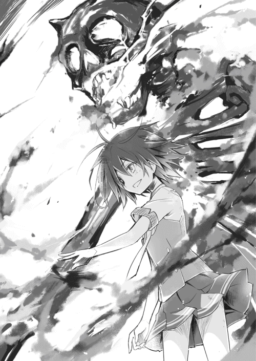
髑髏の朽ちた歯間より漏れ出るその怨嗟を背に、瑠璃が逆立った髪を手櫛で直しつつ、顎をクイと上げた。
合図に従い四本腕の骸骨・六黒が、主人を追い越して前方へ進み出る。
「さあ六黒っち。私は今まさに身の危険に瀕しているよ。邪魔者を排除したまえ」
その言葉に翠の危機を察知したのか、牙穿が命令を待たず疾駆した。
驚くべき跳躍力で一息に迫った狼は、しかし六黒の放った見えない何かにいとも容易く吹き飛ばされてしまった。何とか着地して即座に身構えたその体は、あちこちから焦げついたような煙を上げていた。
「な、何だ......？」
「ラップ音の応用だよ。俗に《空礫》と言う、霊気の小爆発だ」
そびえ立つ骸骨の後ろで、瑠璃が剣呑に冷笑する。
「私はもう、子供の頃の未熟な私じゃない。幽鬼を制御、使役する手段などとっくに会得している......翠、対する君はどうかな？ 見たところ、君が禽踊くんと牙穿たんを制御できるのは、せいぜい七分ほどまでじゃないかい？ それでは私は倒せないよ」
地の底より響くような重厚な声で、瑠璃が嘲りを込めて告げた。
「――ずいぶんと安く見積もられたわね」
束の間の沈黙ののち。翠がようやく落ち着きを取り戻したようにそう呟き、肩の髪を払った。ハラリと広がった長い後ろ髪が、マントのように見えた。
「心外だけど、それも仕方ないわ......貴女にとって私は、その程度の存在だものね」
瑠璃が眉をひそめた刹那、いつの間にか回り込んでいた牙穿が後方から彼女に飛びかかった。その襲撃を待っていたかのように、翠が巨狼に指令を発する。
「牙穿、全放！」
直後、黒狼の全身が陽炎をまとったかと思うと、凄まじい勢いで発火した。
瑠璃が横合いへ飛びすさると同時に、牙穿が吐き出した火炎放射のごとき青白い火柱が無人の空間を焦がす。するとそこに、突如として人影が浮かび上がった。
背広を着た、怒り顔の男だった。ずんぐりとした矮躯に七三分けの、サラリーマン風の中年。分厚い眼鏡をかけたその顔は、直後に牙穿の豪快な一口によってバクリと飲み込まれてしまった。
「禽踊、全放！」
続き翠が叫ぶと、今度は天空で何かが稲光のように一瞬光を放った。たちまち空から金色の塊が小隕石のごとく飛来し、瑠璃を襲う。
咄嗟にかざした掌がラップ音を乱発し、瑠璃の体が後ろに投げ出される。その衝撃で巻き起こった暴風に、孝巳の全身の汗が一気に吹き飛んだ。
コンクリートに降り立った禽踊は、その鋭利なクチバシにズタボロに切り刻まれた何かを突き刺していた。
黒いスーツ姿の乱れ髪の女だった。気難しそうな顔立ちの、二十代後半くらいのＯＬらしき風貌。やはり満面に怒色を湛えた彼女は、串刺しにされたままやがて融解を始めた。
「これで二人目」
そんな翠の声にろくな反応もできず、孝巳は愕然と目前の光景を見詰めていた。否、正しくは二体の獣霊を刮目していた。
――牙穿と禽踊が、倍ほどの大きさに巨大化していた。
黒き狼は、今や全身にメラメラと蒼炎をまとい、口からは象牙のごとき長い犬歯が突き出ている。茶褐色の鷹は、今や眩いほどの黄金色に輝き、翼を羽ばたかせるたびに光の羽根を飛散させている。巨大骸骨に負けぬ異形へと、二匹はその姿を変えていた。
（何だ、これは？）
思考が追いつかない。
幽鬼の統合体だけでも予想のフェンスオーバーなのに、まだなお事態は現実からの乖離をやめてくれない。四本腕の骸骨に、火を吐く狼に、風を起こす鷹......悪夢だ。
金色の鷹が大きく舞い上がり、翠の元へと帰還する。燃え盛る狼も方向転換し、主の傍へと引き返していった。サラリーマンとＯＬの姿は、すでにどこにもなかった。
......あれはおそらく、瑠璃が近年補充した怨霊の内の二体だったのだろう。
山根由香子のときと違い、かなり手段が荒っぽい。あの時は翠が自ら語りかけての、諭すような成仏だったはず......もはや彼女もなりふり構ってはいられないということか。
ややあって、蛙のように引っくり返っていた瑠璃が、後頭部を擦りながらヨロヨロと起き上がった。両手で制服の埃を払いつつ、畏怖を孕んだ瞳で翠を見る。
「二匹同時の全放だって？ 君、いつからそんなことが......」
「私も昔の私じゃないの。鴫原家霊導師、三十七代当主......今の私は鴫原を本家とする、『獣筋』三家の総帥よ」
「これは......少々甘く見ていた」
気合いを入れ直し、瑠璃が上唇を舐める。同時に六黒の両眼が赤黒く発光した。
その幽鬼統合体の霊圧に、もはや翠は怯まなかった。傍らでは禽踊が微風を呼び、牙穿が口端から蒼炎を漏らし、臨戦態勢で主の命令を待っている。
再びの一触即発。しかも今やどちらも本気。並外れた霊能力を持つ二人の少女は、いよいよその力の全てを駆使して互いを屠ろうとしていた。
「私を笑わせられたら勝ちを譲ってあげましょうか？ 漫才師さん」
「いいのかな、そんなこと言って。笑い死ぬよ」
挑発が交わされる中、すっかり取り残された孝巳はようやく地面から腰を上げた。
「おい、もうやめろ！」
叫んでみたが無反応だった。彼女たちは互いを睨みつけ、二人の世界に没入している。
「【負統合】には、かなりの体力と精神力を使うはず。いつまで続けていられるのかしら？」
「無論、君をぶっちめるまでだ。それに条件は似たようなもんだろう。全放状態のその二匹、いつまでも制御できるものじゃないはずだ」
「あくまで手向かうのね。その強情......本当、嫌になるわ」
「そんなの、父の一件で自覚している。私は強情がスパッツを穿いているような存在だ」
「今日だけだろ！」
もはや彼女らにはツッコミすら届かない。
こちらを見てくれたのは、超獣と化した鷹と狼だけだった。
再開された戦いは、一層熾烈なものとなった。
禽踊の放つ竜巻と、牙穿の放つ業火に、六黒が《空礫》の連鎖で対抗する。巨大骸骨が振るう暴風雨のような四本腕の乱舞を、二匹が上下左右に巧みに回避していく。
主人に危険が及ぶと、彼らは自己を二の次にして彼女たちを守る。指令者たる二人は後方に控えることなく、生身でありながらその超常の戦闘に積極的に参加した。
突風が渦巻き、炎が上がるたび、時おり瑠璃の背後より幽霊が姿を現し、消滅した。
瑠璃によって虚偽の恨みを与えられ、作為的に彼女を祟らせられている、父親に対抗するための補充要員たち。そんな彼らは炙り出されては切り裂かれ、食い千切られ、抵抗もなくただ駆逐されていった。
（無茶苦茶だ......）
六黒の《空礫》に、孝巳の体が余波を受けてビリビリと痺れる。禽踊が起こす凄まじい風圧に、ボサボサの髪がさらに掻き乱される。牙穿が発する鬼火のごとき青い炎に、肌がチリチリと火照る。頬をつねらずとも、五体に伝わるその感覚が、これが夢ではないことを教えてくれた。
そんな乱戦の最中。ふと瑠璃が前方の骸骨に片手を掲げた。
六黒が動きを止め、おもむろに口を開く。その口腔に何やら禍々しい粒子が収斂していくのを孝巳は見た。
地を駆けて迫り来る牙穿に、六黒が顔を向け照準を合わせる。そして。
「――吼えろ」
瑠璃がそう告げた瞬間、異形の骸骨が口から波動の砲撃を発した。
「牙穿！ 避けて！」
翠の絶叫に反応して跳ねた炎狼が、間一髪で直撃をかわした。
一直線に放出された黒い波動は、牙穿の左後ろ足を消し飛ばし、さらには後方の屋上フェンスを吹き飛ばし、そのまま虚空へと消えてしまった。数秒後、何キロも離れた遠い山並で微かな爆発音が上がり、慌てふためき飛び立つ無数の鳥影が見えた。
「な......」
孝巳は呼吸も忘れて佇立したまま、金網のなくなった夕焼けの眺望を見つめていた。
膝が笑っている。何だあれは？ もはや霊の起こす現象じゃない。ほとんど兵器だ。口からあんなものを出す幽霊を、孝巳はどんな怪談でも耳にしたことがなかった。
「外したのは残念だけど、これで牙穿たんは半分リタイアだね」
不敵に笑った瑠璃の顔は、しかし一面に汗の玉を浮かべていた。
「外したのは致命的ね。今の特大の《空礫》、何度も撃てるものじゃないはずよ」
短い言葉の交換ののち、再び一進一退の戦いが始まる。左後ろ足を失った牙穿はフォローに回り、痛みを感じている素振りすら見せず翠を援護する。
......腕力では敵うべくもない。右肩は未だ痛みが取れず、胸辺りまでしか上がらない。
遠巻きに攻防を窺いつつ、孝巳はひたすらおののくことしかできなかった。
瑠璃と渡り合いつつも、着実に彼女の怨霊を駆逐していく翠、禽踊、牙穿。
そんなことなど意に介さず、六黒の猛威を振るう瑠璃。
凄絶な激戦がどれくらい続いた頃か。孝巳は戦況のある変化に気付いた。
瑠璃と翠の動きが鈍っている。骸骨と二体の守護霊も、心なしか力強さを失っている。
息が乱れ、攻守に精彩を欠き、彼女たちは顔に如実な疲労を滲ませていた。どうやら先刻の舌戦通り、この状態を長く保つことはできないようだった。
もしかして今なら......そんな思いが頭を巡り、孝巳は腹を決めて駆け出した。割って入り殴り合う双方を制しようとしたのだが、その算段は失敗に終わった。
繰り出された翠の正拳突きが、頬にめり込んだ。「あ」という翠の声と共に、視界に火花が散る。重心を失ったところを瑠璃の片手に押されると、たったそれだけのことで孝巳はゴロゴロと元いた場所まで転がされてしまった。
「邪魔だよ」
「何してるの！」
攪拌される脳に、二人の罵声が浴びせられる。辛うじて顔だけを起こすと、相変わらず格闘は続行されていた。
禽踊の突撃を叩き落とした六黒が、続き足下の牙穿に別の腕を振り落とす。狼が身を退いたことにより、目標を失った文字通りの拳骨がコンクリートを軽々と粉砕した。あり得ない威力だ。
瑠璃が苛立ちに舌を打つ。余裕が消えている。消耗の蓄積はかなり深刻なようだ。
ならばと再度突貫した孝巳だったが、結果は同じだった。
派手に地面を横転したのち、歯軋りをしながら前方を睨む。口内に鉄の味がした。
「くっ......！」
......その後も孝巳は愚直に介入を続け、不可抗力の反撃を受けては退散した。
気付けば痣と泥だらけになっていた。もう自分が何故こんなことをしているのか、よく分からなかった。
（俺は、何をしてんだ......）
孝巳が嘆く間にも、戦いは続く。限界を迎え、フラフラになりながらも、二人は「こいつにだけは負けられない」という意地だけでぶつかり合っていた。
沸々と怒りが込み上げる。
それはきっと彼女たちにではなく、不甲斐なく情けない自分に対する怒りだ。「新しいマウンドを探す」などと小田切に大口を叩いておきながら、瑠璃と翠のすれ違いの事情を知っておきながら、なす術もなく空回りを続ける自分への憤怒だ。
「やめろお前ら......」
禽踊と牙穿は、いつしか元の姿へ戻っていた。一方で六黒も、全身から瘴気を霧散させどんどん実体を失っていく。すでに彼らは戦いに参加することなく、ただ周囲に存在するだけだった。
異形たちの加勢を失った少女二人の戦闘は、もはやただの取っ組み合いだった。拳、肘、膝、頭突き、何でもありの生身の肉弾戦だ。
「やめろって言ってんだろ......」
左右に揺れながら、孝巳は二人へと向かう。瑠璃と翠は気付かない。
あと数歩という距離まで迫っても、喧嘩をやめない彼女たちを見たとき――
孝巳の中で何かが弾けた。
「テメェら、いい加減にしやがれぇぇぇー！」
その怒号に、禽踊と牙穿が、そして六黒が、揃って勢いよくこちらを振り返った。半瞬後には彼らは一斉に吹き飛び、その姿を同時に掻き消した。
瑠璃と翠が動きを止め、驚愕の目でこちらを見る。
構わず詰め寄った孝巳は、やっと二人を引き剥がすことに成功し、それぞれの脳天にチョップを落とした。
６
それほど力を入れたわけではなかったが、頭に一撃を受けた瑠璃と翠は呆気なくその場に座り込んでしまった。
両者とも顔をパンパンに腫らし、鼻と口から血を流している。髪は乱れに乱れ、制服は真っ黒。痛み分けという不本意な結末に、お互い拗ねたように背を向けていた。
「......お前らは滅茶苦茶だ」
二人を見下ろしながら、孝巳もようやく冷静さを取り戻し、とりあえず率直な感想を述べた。ハルマゲドンのごとき戦いから現実世界へと戻ってきてくれた彼女たちに、内心胸を撫で下ろしていた。
「仕方ないでしょう。この子が聞き分けないのだから」
干上がった声で何とか反論してきた翠を、「お前も同じだ」と切り捨てる。不貞腐れて下を向いたロングストレートは、何かの実験に失敗したように四方八方に爆発していた。
「有働」
視線を転じ、負けじとむくれている瑠璃に声をかける。ブラウスのボタンが千切れ大きくはだけた胸元から、浅い谷間が垣間見えていた。
「お前、何でここに来た？」
「............」
「その理由を鴫原に言ってやれ」
「......私はいつ何時、誰の挑戦でも受ける」
「そうじゃないだろ。お前がわざわざ呼び出しに応じて、こんなザマになるまで律儀に付き合ったのは......相手が鴫原だったからだろ？」
指摘してやると、翠の両目が驚きと当惑に瞬いた。
その眼差しから顔を背けたまま、やがて手負いの怨霊師は観念してポツリと呟いた。
「私は翠の誘いを断ったりしない......親友だから」
長髪の霊導師が言葉をなくしている。硬直してしまった翠の傍らに腰を下ろし、孝巳はその横顔に告げた。
「なあ鴫原。お前、有働が瀬戸川に怨霊を憑けたのを怒ってたよな」
「も、もちろんよ」
「あれは有働のお仕置きだったんだよ。パートナーをコケにされたお仕置きだったんだ」
さっきは瑠璃の登場で話の腰を折られてしまったが、思えばそれはもっと早くに彼女へ伝えておくべき事柄だった。
「パートナーとは貴方のことでしょう」
「俺は有働から『相方』って呼ばれたことはあっても、『パートナー』なんて呼ばれたことは一度もない。有働瑠璃のパートナーっていったら、お前しかいないだろ」
「わた、し......？」
考えてみれば、すぐに分かることだった。瑠璃は踊らされた孝巳などのために動くタマじゃない。瀬戸川に気分を害した理由は、ひとえに彼が翠を出し抜いたからだ。親友の霊導を妨げ、いつまでも手を煩わす瀬戸川が業腹だったのだ。
「お前のためにやったことだ。責めるなとは言わないが、そこだけは理解してやれよ。そりゃ誉められたやり方じゃないが、瀬戸川があのまま放免ってのも不公平な話だ」
翠は黙したまま、瑠璃を見詰めていた。
あの子にとって私は、友達なんかじゃなかったのかも――翠がこの決闘に踏み切った一番の動機は、結局それだったのだと思う。主張の食い違いなど友達であり続ける限りいくらでも話し合える。しかし彼女は、その「友達」という根幹が揺らいでしまったのだ。
鴫原翠とは、有働瑠璃にとって何なのか？ きっとそれを確かめたかったのだ。それを知ることが翠の覚悟だったのだろう。
暮れなずむ屋上を、沈黙が包む。
翠は落ち着きなく何度も瑠璃を盗み見たのち、やがて弱々しく口を開いた。
「瑠璃......」
血の滲む唇で、親友の名を呼ぶ。孝巳の知る限り、彼女が瑠璃を下の名前だけで呼んだのは初めてだった。
「瑠璃、私......」
「そ、そんなことより、確認しておかなければならないことがある」
照れ隠しのように瑠璃がことさら調子外れに手をパンと叩いた。
何やら意味ありげにこちらを見上げてくる。丸々と腫れた顔面は、何だか普段より愛嬌があった。
「紺野くん。君、いつから《喝破》なんて使えるようになったんだい？」
出し抜けに問われ、孝巳はキョトンとしてしまった。
「河童？」
「河童じゃない、《喝破》だ。君に素養があるのは分かってたけど、まさか守護霊ズや六黒っちを退散させるなんて想定外だ」
意味がさっぱりだった。呆ける孝巳の横で、翠が説明を引き継いでくれた。
「《喝破》とは、その名の通り『声による一喝』で霊を怯ませる技能よ。成仏させることまでは無理だけど、活力のある発声は霊にとって凄く嫌なものなの」
「気付いてたかい？ 禽踊くんや牙穿たんが、君の怒鳴りに時たま反応していたのを」
確かにあの二体は、孝巳の声に何度かこちらを窺ってきた。最後に至っては、髑髏までもが振り向いてきた。あれはその《喝破》とやらが効いていたということか？
「君が来てからというものの、私の霊障はかなり頻度が減った。君の《喝破》が、幽鬼くんや怨霊たちを怯ませていたんだ」
「ま、待てよ。山根のときは《喝破》なんて......」
あの時、孝巳は瀬戸川に向けて散々咆哮したが、それが由香子に何らかの影響を与えていたようには見えなかった。あの一部始終は、瑠璃だって見ていたはずだ。
「それについて、私は一つの仮説を立てている。紺野くんが《喝破》を発揮するには、ただ大声で怒鳴ればいいというわけじゃないんだ。基本的に魂の篭った叫びでなくてはならないんだよ。そもそも《喝破》とは、言霊の一種なんだから」
「た、魂の叫びだ？」
「そう。すなわちツッコミだ。紺野くんが全身全霊でもってツッコミを入れたとき、霊は面食らう。たまげてポカンとする」
......何それ。
「つまり君が《喝破》を使うためには、ボケる人間がいなくてはいけないのさ。それも、とびきり秀逸なボケを披露できる、君が心から突っ込める人材がね」
瑠璃が親指で自分を指して、奇天烈な仮説を終了させた。
孝巳は放心したまま瑠璃を見て、次いで翠を見て、最後に腕を組んで唸った。
霊をビックリさせる《喝破》。何とも微妙な技だ。しかもそれがツッコミとしてしか発動しないとなれば、使えるシチュエーションはかなり限られてくる。ボケと霊が併存する状況など、それこそ瑠璃くらいしか作れはしないだろう。
「じゃあ翠、帰ろうか」
渋い表情をしている孝巳をよそに、立ち上がった瑠璃が何と翠に手を差し伸べた。先刻までとは打ってかわり、やけに素直に、優しげに、親友に微笑みかけている。
「なかなか楽しかったよ。やっぱり君は凄い。さすが私の翠だ」
「............」
「本当は主義は曲げたくないけど、君がそこまで言うなら少しくらいは再考するよ」
「え？」
「死人への姿勢を、だよ。パートナーのお願いだ、少しは折れてあげる」
「瑠、璃......」
手を引かれ立ち上がった翠は、瞳が潤んでいた。それはきっと、彼女がずっと待ち続けてきた言葉だったはずだ。
「分かってくれたの......？」
「まあね。私も死人への敬意というやつを、少し学んでみるよ。――通信教育で」
刹那、翠がブッと吹き出した。よほど虚を突かれたのか、真っ赤な顔でむせ返っている。
「土壇場で決着だ。この勝負、私の勝ちだね」
瑠璃がニヤリと笑い、孝巳にＶサインを向けてきた。その顔は、してやったりとばかりに得意げだった。
「笑わせることができたら私の勝ち。そうだったよね？ 翠」
口を押さえながら驚愕の色を浮かべた翠に、瑠璃は傲然と告げる。
「私の勝ちである以上、私はこれまでの主義を貫いて問題ないということだね」
翠が石化している。そりゃそうだ。
こいつがこれほど簡単に改心するはずがなかったのだ。きっとこいつは、最初から姿勢を改める気など、自身の股の毛ほどもなかったに違いない。
「は、謀ったわね......！」
「私はディベートには自信がある。無論、習得は通信教育だ」
憤怒の翠がたちまち吹き出し、口を押さえて苦しそうに身悶える。足がカクカクと震え、今にも崩れ落ちそうだった。......通信教育の何がそこまでツボに刺さるのだろうか。
（結局、こいつらはこれからもこんな感じなのかもな）
二人を眺めながら、そんなことを思ったとき。
――ユラリ、と瑠璃の背中に何かが現れた。
「！」
その出現に同時に気付いた瑠璃と翠が、たちまち弾かれたようにもつれ合って地面を転がった。
砂埃が宙に舞う。二人を突き飛ばした衝撃波は、依然として余韻を残し空気を振動させていた。
――二人のいた場所に、誰かが立っていた。
孝巳と同じ無頓着な髪型の、神主のような身なりをした長身の男性だった。肩幅が広く、手足が長い。体幹がしっかりとしていそうな均整の取れた体つきは、投手向きの体格と言えなくもなかった。
「小父様......」
翠の吐息のような囁きが、風に乗って耳に届く。その言葉を聞かずとも、この霊が何者なのかなど分かり切っている。
娘によく似た切れ長の目。すっきりと通った鼻筋。そして何より、鬼神のごとく満面にみなぎる怒りと憎悪。それが最後の最後に現れたこの霊の正体を雄弁に物語っていた。
「有働の、親父さん......！」
戦慄した途端、孝巳の足下で凄まじい轟音が上がった。
視線を落とすと、目の前のコンクリートの床が真一文字に裂けていた。まるで雪山のクレバスのように、地面に長さ二メートルほどの亀裂が走っていた。
息を呑んだ直後に、さらに一つ、二つ、三つ。鋼鉄の巨大な鞭でも叩きつけたかのように、縦横に深い亀裂が刻まれていく。同時に地鳴りと共に周囲のフェンスがガタガタと暴れ出し、耳障りな不協和音を奏で始めた。
......霊障と呼ぶには、あまりに強力な現象だった。小田切のポルターガイストどころの話ではない。幽鬼でもない一体の怨霊が、ここまでの力を持っているものなのか？
硬直する孝巳をよそに、瑠璃の父がユラリと動いた。伸ばされた長い両腕が、地面にへたばっていた少女二人の首根っこを掴む。左手に瑠璃を、右手に翠を、まるで物のように粗暴に拘束し、怨霊は爛々と光る双眸で捕らえた娘を睥睨していた。
とても我が子に向けるものとは思えぬ眼光を一度だけ見詰め返すと、瑠璃はありありと苦渋の色を浮かべ一つ唸った。
「誤算だ。まさかこの程度の消耗で抑えられなくなるなんて......」
「おい有働、どういうことだ！ まさか親父さんの制御が利かないのかっ？」
「そもそも私は、幽鬼くんと十数体の怨霊で何とか父の霊障をしのいでいた。それぐらい父の怨霊は強いんだ。そして......彼らは今、一人もいない」
幽鬼の統合体たる六黒は、《喝破》で退散した。他の怨霊たちは、全て強制成仏させられてしまった。
瑠璃と翠は優秀な霊能者だ。あれだけの戦いを繰り広げながらも、父親の怨霊の存在を失念してなどいなかったはず。彼女たちの想定外は、孝巳の《喝破》に他ならない。皮肉にも孝巳はここに至り、自覚すらないまま、またも事態を悪化させてしまったのだ。
囚われの二人を交互に見る。今やどちらも満身創痍の疲労困憊で、とても拘束から脱出できる余力はないようだ。
彼女たちは行動不能。怨霊も、禽踊も牙穿もいない。残ったのは、ろくに右肩の上がらないガラクタの元投手......果てしなく手詰まりの状態だった。
「腑に落ちないわ」
翠が苦しげに呟き、横目で瑠璃を見た。
「小父様の霊格は普通じゃない。とても数年前に亡くなった人の霊とは思えないわ。......どういうことなの、瑠璃」
「......黙秘権を行使する」
「状況を理解なさい！ 怒るわよ！」
「もう怒ってるじゃないか」
「もっと怒るわよ！」
「やめときなよ。小皺が増えるよ、お婆ちゃん」
「お、おば......！」
「やめろお前ら！ どこまで呑気で豪気なんだ！」
孝巳が喚くと、父親の怨霊が僅かにピクリと反応した。心なしか眉根が寄った気がする。もしや、《喝破》が効いた？
直後、鼓膜を突き破るようなラップ音の爆発が巻き起こる。蝉時雨の数倍はあろうかという音の乱舞に、孝巳は頭の中をえぐられるような感覚に陥った。
「......父の怨霊の力が、日増しに強まっているのは分かっていた」
長い腕に絡め取られたまま、瑠璃がラップ音に顔を歪めつつ渋々語り出した。いつもの鷹揚さがない、悄然とした声だった。
「何とか騙し騙しやってきたけど、限界だったらしい。情けない話だからあまり言いたくなかったんだけど――私は現在進行形で父に恨みの意思を与え続けてるんだ」
瑠璃の独白めいた述懐を、孝巳は脳内で整理に努める。
（親父さんに、意思を与え続けている......？）
死者の意思は、生者が決める。霊の存在理由は、生きている者が付与する。
生者から与えられた意思が霊の存在を確立するなら、霊の強さとはすなわち「どれだけ明確で強固な意思付けを為されているか」ということになるはず。それはきっと禽踊や牙穿も、そして幽鬼も怨霊も同じだ。
「私だって別に面白半分で怨霊をコレクションしていたわけじゃない。そんなに余裕はなかったんだよ」
瑠璃が父親に与えた負の意思。父は、私を怒っているのだ――そんな彼女の負い目は、父の怨念を年月と共に強化していった。
それはきっと、心ならずの行為だろう。しかし、瑠璃は父の怨霊に意思を与え続けた。初めて父親が枕元に立ったその日から、今日までずっと彼を育ててきた。
花に水をあげるように。恨みという名の養分を――
（有働、お前の目は未来に向いていたんじゃなかったのか？）
それを語った日の、瑠璃の姿を思い起こす。机の上に立ち、偉そうに胸を張っていた瑠璃。その逞しさに孝巳は心が軽くなったものだ。
（割り切れてなんか、いなかったのか？）
そうなのかもしれない。浮世離れしたところばかり目立つが、こいつだって高校一年の女の子なのだ。父に呪われたままの毎日を、平気な顔で過ごせる方がおかしいのだ。
怨霊の両腕が、抱え込んだ二人の首をさらにギリリと締め上げる。瑠璃が小さくケホッとむせたのが分かった。
瑠璃も翠も消耗している。ここは孝巳が何とかするしかない。今日まで瑠璃が避け続けてきた最悪の事態......それだけは実現させてはならない。
油断なく身構えながら、瑠璃に意見を求める。
「おい、《喝破》以外に俺にできることはないのか！」
「そうだね......ならこうしよう。紺野くん、今すぐ屋上から飛び降りたまえ」
「な、何？」
「飛び降りるんだ」
「死ぬだろ！ それに何の意味がある！」
瑠璃の父がまた微弱に反応する。やっぱり効いている。
「大丈夫。すかさず私が君を怨霊にして、父にぶつける」
「何がどう大丈夫なんだ！」
「それで逃げる隙くらいは確保できるだろう。考えられるベストの手段だと思う」
「考えられる最悪の手段だ！ 何でお前のために死ななきゃならないんだよ！」
瑠璃の父が、先ほどより顕著に震えた。あの禽踊、牙穿、六黒にすら孝巳の《喝破》は効いた。ならば当然、瑠璃の父にだって通用はするのだ。
「怨霊との漫才なんて斬新じゃないか。うん、イケる。インパクトもただ事じゃない」
「聞けや！」
「飛び降りなんて、由香子さんや武本くんだってやってる。この地域でブームだよ」
「テメェ不謹慎ってレベルじゃねぇぞ！」
しかし、《喝破》はあくまで霊を怯ませるだけのもの。しかも瑠璃の父は反応こそすれど、退散する気配が微塵もない。何故だ？ 六黒たちを吹き飛ばした叫びと何が違う？
「もう、早くしなよ！ 帰ってご飯が食べたいのに！」
「お前がキレてる意味が分からない！」
「早くこの無礼な怨霊に、目にモノ見せてやるんだ！」
「仮にも親父だろ！」
「違う！ 私の父は小遊三だ！」
「奇抜な現実逃避してんじゃねぇ！」
瑠璃の父が、初めてこちらを見た。ドロリと濁った暗い瞳に射すくめられ、孝巳の全身が総毛立つ。
次の瞬間、視界の隅に大きな黒い物体が飛び込んできた。
思わず咄嗟に身を退く。眼前をすれすれに通過してコンクリートに激突したのは、フェンス前にあったはずのソファーだった。
（あ、危ねえ！）
危機一髪だった。あんな物があのスピードで直撃していたら、ただでは済まなかった。このまま二の足を踏んでいたら、いつまたポルターガイストが起きるか分からない！
「......やっぱり、いくら《喝破》を放っても無意味か」
瑠璃が肩を落とし、無念そうに唇を噛む。続き改めて孝巳を見た眼差しは、どこか諦めと覚悟の色を帯びていた。
「仕方ない。紺野くん、君は逃げたまえ」
「な、何？」
「残念だけど、現状で打つ手がない。《喝破》しか使えない君がいたところで、無駄に死傷者が増えるだけだ」
瑠璃の言葉に、翠も必死に頷く。
「ここは自力で何とかするから、貴方はここから離れて！」
それはできない。このまま逃げたら、まして二人が死ぬようなことがあったら、孝巳は以前とは比較にならない後悔を引きずって生きていくことになる。自分には小田切の前科がある。そうなったら今度は彼女たちを引き留めて、怨霊にしてしまうだろう。
過去に嘆いて生きていくのは――もうたくさんだ。
（とはいえ、何ができる？）
もはや《喝破》を一つ二つ飛ばしたところで焼け石に水だ。殴り合って勝てるとも思えないし、土下座して許してくれる相手でもないだろう。
――そんなことを考えた刹那、空と地面が逆転した。
強烈な衝撃を腹部に感じたかと思うと、今度は背中に衝撃が走る。詰まる呼吸に悶絶しながら、孝巳は自分が後方に吹っ飛ばされフェンスに激突したのだと悟った。
「紺野くん！」
焦点が定まらない中、瑠璃と翠の悲鳴に似た声が聞こえた。這いつくばった地面に、ポタポタと赤い雫が斑点を作っていく。頭のどこかに裂傷を負ったらしい。
（......おっかねぇ親父さんだぜ）
たとえ「娘をくれ」と言いに来た彼氏でも、ここまでの仕打ちはされないだろう。体格のいい孝巳がここまで簡単に吹き飛ばされるとは......逆に言えば、そのままこれが瑠璃の意思、罪悪感の強さということか。
「もうやめるんだ！」
瑠璃の叫びが聞こえた。顔中に垂れてくる鮮血を不快に感じながらも、孝巳はとにかく顔を上げる。どこかに打ちつけたのか、何だか右腕がやけに熱かった。
「恨んでいるのは私のはずだ！ 紺野くんや翠は関係ない！」
らしくもなく彼女が平静を失っている。一応は心配してくれているようだ。
でも、やっぱりそんな瑠璃は見たくない。あいつはやっぱり、楽しそうにボケ倒してるのが似合っていると思う。
「最悪の事態への覚悟なら毎日してきた......私さえ死ねば終わるんだ！ だからッ」
違う。お前はそんなことを望んでないはずだ。
許して欲しいと、天国から見守って欲しいと、本当はそんな意思を与えたかったはずだ。だからお前はずっと足掻いてきたんじゃないのか。
「だから私を殺して、それで終わりに――」
「違うだろ馬鹿！」
腹から絶叫し、孝巳は立ち上がった。
「お前が言いたいのは、そんな言葉じゃないだろ！ ちっとは素直になりやがれ！」
「君に......君に何が分かるんだ！」
「これでも俺は、お前の相方だ！」
もう強がりは聞きたくない。今の孝巳は、瑠璃の本心を知っている。
ここで父親に殺されたら、瑠璃が今日までやってきたことが踏みにじられる。彼女が周りに与えてきた笑顔が否定される。父親への思いが、父親に否定される。
それだけはさせない。お前が自分を許せないなら、父親に許しを乞えないなら、俺が代わりに伝えてやる。お前の真実の意思を――それが相方の役目だ！
そんな決意が全身に満ちた瞬間。右腕が急激に熱を帯び、続き閃光を発した。
「！」
正体不明の光芒に視界が奪われる。焼け爛れるように肩が、肘が、掌が、際限なく熱を帯びていく。首から肩へと伝った汗の玉が、ジュウと蒸発したのが分かった。
（う、腕が、焼ける！）
突然の異常に恐慌状態となった脳裏に、誰かの囁きが聞こえた。
――私は父の力になりたかったんだ。
瑠璃の声だった。あの時、彼女は寂しげな瞳でそう言っていた。
――私は小父様と......あの子のお父さんと約束したの。
今度は翠の声だった。あの時、彼女は消え入りそうな声でそう絞り出していた。
眩しい光の中で、少しずつ視覚が戻る。遠く離れた先で、瑠璃と翠が父に捕らわれていた。二人は目を剥いて、何故だか呆然とこちらを瞠目していた。
――私は本当は、君などよりずっと弱い人間なんだ。
――ずっと友達でいるって。あの子の傍にいる、って。
頭の中では、相変わらず声の螺旋が渦巻いている。右腕の感覚はすでになかった。
ただ一つ、掌の......丸く、硬く、懐かしい感触を除いて。
見ると、孝巳の右手に淡く光る球があった。野球のボールとさほど変わらぬ大きさの、灼熱にグツグツと煮え滾る球があった。
――私は周囲に笑いを与える人間になる。もしも私がそんな人間になれたら......
――あの子があんな状態にあるのは、私にも責任が......
依然として瑠璃と翠の声が聞こえる。その声は前方にいる二人からではなく、明らかに右手の光球から聞こえていた。
......ああ、分かった。この声は二人の意思だ。このボールは、言葉の球なのだ。
ならばこれを瑠璃の父に届けたい。届けねばならない。
振りかぶった瞬間、瑠璃と翠の不安げな視線とぶつかる。
地面にプレートはない。平らな固いコンクリートは、マウンドとは似ても似つかない。
それでいい。今はここが紺野孝巳の立つべきマウンドだ。
「一球入魂――受け取りやがれッ！」
全身全霊を込めて投げ放つ。
球が光の尾を引き、唸りを上げて瑠璃と翠の間を駆け抜ける。二人の意思を込めたその輝球は、瑠璃の父の胸板ど真ん中に確かに吸い込まれ、そして。
爆ぜた。
直後、強烈な爆風が巻き起こる。肌を焼くような熱の奔流が瞬く間に周囲を包み込み、孝巳たち三人はコンクリートの地面を紙クズのように転がった。
数秒ほどのち。
恐る恐る顔を上げると、前方に瑠璃と翠の姿があった。
辛うじて上体を起こしている翠とは対照的に、瑠璃はフラつきながらも立ち上がっていた。彼女がゆっくりと歩を進めるその先には......果たして父親の怨霊がいた。
あれだけ恐ろしい形相をしていた彼の顔が、嘘のように静かなものになっていた。どこか穏やかさすら感じさせる表情で、怨霊だったはずの彼は眼前にやってきた娘を真っ直ぐに見詰めていた。
「――パパ」
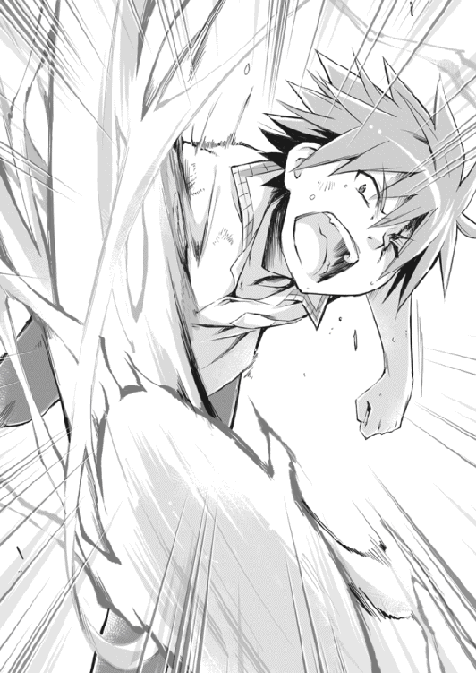
静寂を取り戻した薄闇の屋上に、瑠璃の声が響く。その声音は、普段の彼女からは想像できないほど弱々しく、子供のように頼りないものだった。
「ごめん......ごめんなさい。......それから、ありがとう」
その時、父の口許に確かに微笑が浮かんだ。
――恨んでなどいない。パパはずっと瑠璃を見守っているから――
空耳だったのかもしれない。しかし、それもまた孝巳がボールへと確かに込めた、彼が娘に伝えたかっただろう言葉だった。
「パパ――あちらへ」
一言だけの謝罪と礼を伝え、瑠璃は小さく片手を振った。それは初めて見る、有働瑠璃の死者への霊導だった。
身動きすら忘れて見入る中、父親の姿が少しずつ大気に融解していく。
――これからも、笑顔を忘れずに――
最後にそんな優しげな声が聞こえたような気がした。
それは父の意思だったのか、瑠璃の意思だったのか、あるいは孝巳の意思だったのか、判然としなかった。
７
父の霊が完全に消失したあとも、瑠璃はぽつねんと佇み宵闇の空を見上げていた。
彼女が片腕でグイと顔をこすったのが見えた。後ろ姿なのでここからは分からないが、もしかしたら泣いているのかもしれない。
（親父さんはお前を許してくれたんだ。お前もそろそろ......自分自身を許してやれよ）
そんなことを考えた瞬間、フッと意識が遠退いた。失念していたが、まだ頭の出血が止まっていないのだ。
次いで右腕に感覚が蘇ったかと思うと、尋常でない痛みが肩部に到来する。そのあまりの激痛に、遠退いた意識がたちまち覚醒した。
「あっ、あだ！ あだだだ！」
堪え切れず膝が折れる。瀬戸川に投げたときとは比較にならない、気が狂いそうなほどの痛みだった。
手で触れてみると、あり得ぬほど熱を持って腫れ上がっていた。何だか別の生き物のようにビクンビクンと大きく脈打っている。ヤバい。今すぐ病院に行かないと――
「紺野くん、大丈夫かい？」
歯を食い縛って悶絶していると、上から普段通りの瑠璃の声が降ってきた。
続いて上体を抱き起こされ、何やら柔らかい感触が頬に当たる。目を向けると、そこに翠の顔があった。つまり、この弾力は......
「また人のために無茶をして......」
頭の傷口にハンカチを押し当ててきながら、翠が心配そうに覗き込んでくる。
頭はいいから、右肩の問題を何とかして欲しい。でないと......胸に集中できない。
「何はともあれ、でかしたよ紺野くん。これでようやく私は解放された。便秘が解消されたときでも、これほどの晴れやかさはなかった」
「お、親父さんを、クソと一緒にすんじゃ、ねぇ......」
キレよく突っ込みたかったが、そう絞り出すのがやっとだった。
肩の痛みは治まらないどころか、ますます酷くなっている。駄目だ。どうしても胸に集中できない。地獄が天国を凌駕している。
「それにしても、君にはいちいち驚かされる。まさか《喝破》に続いて【言替の儀】までやるとはね」
「こ、【言替の儀】......？」
「言霊を物体や物質に宿す手法のことよ。同じ響きを持つ名称を『見立て』に使い、その存在を置き換える。言霊の基本よ」
翠がそんな解説と共に、孝巳の胸元に掌を滑り込ませてくる。右肩に触れた彼女の繊手はひんやりと心地好く、少しだけ激痛を和らげてくれた。
「例えば、声の出ない人が言葉を琴波に置き換え、演奏によって言霊を操った事例があるわ。ある人は意思を石に込め、投石による除霊をしたとか。紺野くんが使ったのもその一種――亜流の霊導ね」
翠の言葉に頷き、瑠璃も目の前にしゃがみ込んできた。見た限り涙を流してはいなかったが、微かに両目が赤かった。
「そういう言葉遊びを咄嗟に思いつけるセンスも、一つの才能というわけさ。霊と球の置き換え......つまり《言霊球》かな。なかなかウマい言替じゃないか。君は短期間で《喝破》と《言霊球》という二大霊能に開眼した。『お笑い』と『野球』のセンスなくしては会得できなかったものだ」
瑠璃がニコニコと破顔し、よくできましたとばかりに頭を撫でてくる。
「あの状況で言葉遊びをするなんて......やはり貴方は只者じゃないわ」
翠が嬉しげに感嘆を漏らし、とびきりの笑顔を見せてくる。
二人して誉めてくれているようだが、やっぱりあまり嬉しくなかった。
笑いのセンスなど、孝巳は別に欲しくなどない。野球のセンスなど、今さらあっても仕方ない。その結果がこの凄絶な苦しみだとしたら、そんなものは今すぐ処分したい。
「肩が治ったわけじゃなかったのか......」
「そりゃそうだよ。確かに霊力によって五感や運動神経を高めることはできる。いわゆる『火事場の馬鹿力』や『神憑った状態』というやつだね。でも、それはあくまで一時的なものだ。霊能は医術じゃない」
「違うのか......」
「だから我に返ったとき、無茶をしたツケは当然体に返ってくる。《言霊球》を投げたときの君も、一種の神憑り状態だったんだろうね。君は言霊を行使するため、無意識的に全霊力を右腕に集結させた。そして僅かの間、肩の痛覚を遮断し、強化した」
唐突に光って沸騰した右腕は、霊力によるドーピングだったということか。どうりで当時以上の球が投げられたわけだ。
「クソ、もう二度とやらねぇ......」
「えい、スイッチョン」
いきなり瑠璃が指で右肩を突いてきた。たったそれだけで砕けるような痛みが走り、孝巳は水揚げされた魚のようにピチピチとのたうち回った。
「やめなさい瑠璃！ 今の紺野くんはツッコミができる状態じゃないわ！」
そういう問題じゃないと言いたかったが、彼女の言う通り呻きしか出なかった。
「何だい庇っちゃって。いやらしい」
「な、何がいやらしいのよ！」
「君たち、もしかして本当に付き合ってるのかい？ いやさ、突き合ってるのかい？」
「し、し、下ネタはやめなさい！」
茹でダコのように赤面して激昂する翠を見て、瑠璃はニヤリとほくそ笑み立ち上がった。横風にフワリと舞い上がったスカートから、黒いスパッツが見えた。
「そうかそうか。翠にもやっとインナーとやらを見せる相手ができたというわけだね」
「ち、違......！」
孝巳の右肩に添えられていた翠の手が、爪を立てて患部を鷲掴みにした。和らいだ痛みが一気にぶり返し、孝巳は声にならない悲鳴を上げた。
「とにかくこれで一件落着だ。翠との勝負は私の勝ち。父と怨霊たちはもういないけど、私にはまだ幽鬼くんたち六人がいる」
「え......」
「六黒っちも守護霊ズも、《喝破》に一時退散しただけだ。そのうち戻ってくる。牙穿たんの足も元通りになってるだろうし、私はこれからも怨霊まみれというわけだよ」
「あ、あ、貴女ね......」
翠がワナワナと肩を震わせ、憤然と立ち上がった。必然的に孝巳は彼女の腕からコンクリートに転げ落ちることになってしまった。
「まだ懲りてないって言うの!? どれだけ好き勝手すれば気が済むの！？」
「私は有働瑠璃だ。私は私の思うまま、誰の指図も受けず、ただ私らしくボケる」
フフンとふてぶてしく笑った瑠璃は、いつもと変わらぬ有働瑠璃だった。
「ふ、ふざけないで！」
「無理だ。私はふざけないと死んでしまう」
「いい加減にしなさい！ 周りの気も知らないで！ 自分のことばっかりで！ 散々人に迷惑をかけて！」
「クリリンのことかい？」
「............テメェのことよ！」
とうとう翠が噴火した。
それをいち早く察知した瑠璃は、すでに身を返し一目散に扉へと逃走していた。
「逃げるなクソガキ！」
キャラクターにない怒声を上げ、長い髪を振り乱し、翠が鬼の形相でそれを追う。
どこにそんな体力を残していたのか、二人はヒビだらけになった屋上から瞬く間に姿を消してしまった。孝巳を残して。
「おい......」
一人置き去りにされた孝巳は、辛うじて体を起こし何とかその場に胡座をかいた。あの窮地を救った自分は、もっと優しくされてもいいはずなのに......理不尽に過ぎる扱いだが、もはやそれに慣れてしまっている悲しい自分がいた。
「《喝破》に、《言霊球》か」
自分は今日、この屋上で何を体験したのか。何がどうなってこうなったのか、もうよく分からなかった。
静寂に包まれた今となっては、全てが泡沫の夢だったように思える。夢だとしたら、自分はいつからそれを見ていたのだろう。屋上に来たときから？ 瑠璃と出会ったときから？ 小田切の霊が現れたときから？ それとも、ダンプにはねられたときから？
（俺は本当は......あの交通事故の段階で死んじまってるんじゃないか？）
ふと、携帯がメールを着信した。ポケットから取り出し確認してみる。
発信者は有働瑠璃だった。内容は「えすおえせ」。ＳＯＳと打ちたかったのだろう。
間を置かず、またメールが着信する。
発信者は鴫原翠。内容は「ツッコミ不要。貴方は病院に行きなさい」。言われなくても仲裁にいく余力など、瑠璃の股の毛ほどもなかった。
無言で携帯をポケットに戻す。どうやら、これはやっぱり夢ではないらしい。
再び大の字になって空を見上げると、日の落ちた満天に木星がやけに巨大に見えた。
「君が助けに来なかったせいで、えらい目に遭った」
夏祭り当日となった昼下がり。
最後のネタ合わせのために部室で落ち合った早々、瑠璃が顔を不機嫌にしかめ、こちらを恨めしげに睨みつけてきた。
あれから数日経つというのに、彼女はことあるごとにその話をあげつらっては責めてくる。正直、孝巳は辟易としていた。
「自業自得だろうが。あれから鴫原に取っ捕まって、禽踊にケツの穴ほじくられたんだって？ 良かったじゃないか、大人になれて」
「あのアホウドリは、近く必ず始末する。その時は君も《喝破》で協力したまえ」
「するかよ。悪いのはお前だ」
いつもの席からヒラヒラと掌を振ってあしらってやると、瑠璃が小型犬のように小さく唸った。すでに浴衣を着て気合い満タン、頭には大きなヒマワリの花飾りがついており、何だか普段より女の子らしく見える。言動は普段通りだが。
「君は由香子さんのために武本くんをボコボコにしたはずだ。なら私の肛門のためにだって動くべきだろう。不公平じゃないか」
「山根と肛門を同列に語るな」
嘆息と共にそう返したものの、瑠璃は唇を尖らせたまま、親友への恨み言を依然ブツブツと呟いていた。めでたく仲直りしたかと思われたが、二人の関係は結局これまでとさほど変わっていないようだ。
「何とかあの女を『ギャフン』と言わせる方法はないものか......」
「よせよ。いい加減に意地張るのやめて、仲良くしろって」
「じゃあせめて、『ヒギィィィ』と言わせる方法を」
「悲鳴の問題じゃない」
「そうは言うけど、このままじゃ明らかに私がやられ損だよ。翠は昔からそうなんだ。寝相は悪いし、お風呂は長いし、『修行をサボるな』『パンツを穿け』と、小姑みたいにガミガミと......」
相も変わらず悪態ばかりだが、翠のことを語る彼女の口振りからは、思えば以前ほどの殺伐さは感じない。もしかしたら屋上での一件を経て、二人の関係は少しずつ修復されつつあるのかもしれなかった。何せ彼女たちは、もともとは親友だったのだから。
安堵する反面、何だか羨ましい気もする。夏休みが終わる前に一度、小田切の墓参りに行ってみようか......ふと孝巳はそんなことを考えた。
「......何だいニヤニヤして、気持ちの悪い。君はそんなに余裕をぶっこける立場じゃないだろう。これからも色々と難儀すると思うよ」
「ど、どういうことだ？」
その物言いに何やら不穏なものを感じ、思わず身構える。
「霊感に目覚めた君は、いつまた霊に関連する事件に巻き込まれても不思議じゃない。低級霊というのは、霊感のある人間に引き寄せられる傾向があるからね」
「............」
夏祭りの公開処刑を前に、カッパ少女がとんでもないことを言ってきた。
冗談じゃない。幽霊に関わるのはもう懲り懲りだ。《喝破》も《言霊球》も、孝巳は二度と使うつもりはないのだ。
「俺が霊感に目覚めたのは......やっぱりお前とつるんでる影響か」
「私だけじゃないもん。翠のせいでもあるもん。でもまあ、私がいるから大丈夫だよ。不用意にまた事件に首を突っ込んだりしない限り、滅多なことにはならないよ。多分」
「それ、信じていいんだろうな」
「そのはずだ」
「自分から関わらなけりゃ、問題ないんだな？」
「問題ない気がする」
「マジだな？」
「マジっぽい」
「何で歯切れ悪いんだよ！ 何かあってからじゃ遅いんだぞ！」
「平気だってば。仇は取るから」
「歯切れ良く何言ってんだ！」
孝巳が叫んだとき。いきなり扉が音もなくスライドして、長身の美少女が姿を現した。
――翠だった。
「あれ、鴫原？」
「お邪魔するわ」
翠はつかつかと入室してくると、腕を抱くように組んだまま孝巳と瑠璃を交互に見据えてきた。屋上での猛り狂った態度が嘘のような、キリリと澄ました普段の翠だった。
訪れた親友に歓迎の欠片も見せず、瑠璃が座したまま微かに身じろぎする。無意識に尻に力が入ったようだった。
「......やれやれ。舞台の前だというのに、嫌な顔に会ってしまった」
「その後、お尻の状態はどうかしら？ 漫才師さん」
「お陰でニュータイプに覚醒した」
「そう、何よりね。......貴方も、調子のほどはどう？」
続いて翠がこちらを見る。
「あ、ああ。まあボチボチだ」
「ボチボチ？ 変なお尻ね」
「尻のことかよ！ 何で俺に訊いたんだ！」
やっぱり彼女は、確実にボケ化が進行している。それも心なしか板についてきたような気がする。甚だ迷惑な話である。
「で、どうしたんだよ鴫原。わざわざ来るなんて」
「ここはそもそも書道準備室よ。勝手に私物化されて、部員たちも困惑しているの」
「え？ お前、書道部だったのか？」
「帰宅部よ」
「結局何しに来たんだ！」
一通り冗談を言って満足したのか、翠は改まった咳払いと共に孝巳に向き直った。
「紺野くん、貴方に一つ忠告をしに来たの。《喝破》や《言霊球》を見ても分かる通り、今や貴方は霊感に目覚め、こちら側の人間となってしまった」
「............」
「霊感とは、先天的な才能よ。貴方にはもとから素質があったのね。そして、霊感に目覚めた人間には得てして――」
「霊が寄ってくる......か？」
「知っていたの？ だったら話は早いわ。つまり貴方は、いつまた霊の事件に巻き込まれるか分からないの」
「............」
「紺野くんが覚醒したのは、きっと私の影響でもあるわ」
言いつつ翠が胸に垂れた髪を摘まみ、何やら落ち着きなくこねくり回し始める。
「だから、その......」
「お詫びに肛門をほじらせてやりに来た。というわけだね」
「ふ、ふ、ふざけないで！」
横から茶々を入れてきたカッパ少女に、途端に翠が真っ赤になって激昂した。
「私は鴫原家の当主よ！ 腐ったエリンギにほじられる肛門なんて持ち合わせていないわ！」
「人の肛門を容赦なく開発した人間の言うことじゃないね。君も知るがいい、あの痛みを」
「貴女の幽鬼まみれの肛門と一緒にしないで！」
「肛門に貴賤などない」
「お前ら！ 肛門を控えろ！」
堪らず孝巳が喚くと同時に、翠がやにわにポケットから紙切れを取り出し、ヤケクソのように机に叩きつけた。
「いいから受け取りなさい！ 仕方ないから、私がしばらく気にかけてあげるわ！」
彼女が突き出した紙には、見覚えがあった。かつて孝巳も、その用紙に名前を書かされた記憶がある。
それは――紛うことなき入部届けだった。
「ちなみに副部長希望よ！」
「待ちたまえ翠。この部に入るには、まず私が笑いの偏差値を審査......」
「副部長希望よ！」
「............」
ああ、今後もお笑いと霊に囲まれた日常が終わりそうにない――
そんな確信に包まれ、孝巳は目の前が真っ暗になった。
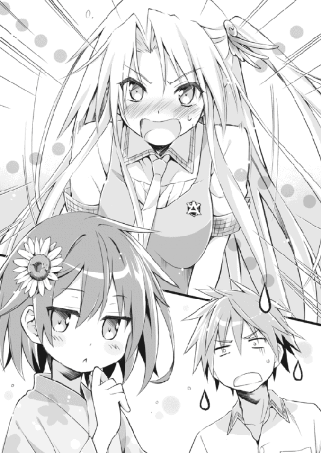
あとがき
皆様、初めまして。伊達康と申します。
このたびは『瑠璃色にボケた日常』を手に取って頂きまして、まことにありがとうございます。
地方の片隅でチマチマと書いたこの小説が、全国の皆様のお目に触れているかと思うと、何だか不思議な気分がします。少しでもお楽しみ頂けたなら、それに勝る喜びはありません。
あとがきということで、ネタバレを伏せつつ少し作品について語ってみたいと思います。
本作なのですが、応募した段階では今よりもコメディに偏重したストーリーでした。
大まかな流れはほとんどそのままなのですが、ラスト辺りの展開が当初に比べてかなり変わりました。これは担当様からのアドバイスがとても大きかったと思います。今になって初稿を読み返してみると非常にグダグダで、ちょっとモニョモニョとした気分になってしまいました。
主人公である紺野孝巳は、改稿するに連れてガラの悪さが少しずつ鳴りをひそめていきました。最初は本当のヤンキーで、絶滅危惧種のようにツッパッていました。応募前の彼はもっと酷く、それこそ「あん？ おう？」のノリでした。記憶が正しければ、隻眼だったかもしれません。
紆余曲折を経て、少しは感情移入できる人物になっていればいいのですが......
メインヒロインの有働瑠璃はさほど変わっていませんが、当初はオカッパ頭をしていました。改稿の段階でヘアースタイルを変更しましたが、彼女がカッパのヘアピンをしているのはその名残です。
有働瑠璃に関しては、「このキャラクター造形はヒロインとしてどうなのか？」という懸念がありましたが、結局そのまま突っ切ってしまいました。
幸い絵師のえれっと様が可愛らしいイラストに起こして下さったので、少しはアクが中和されたように思います。
もう一人のメインヒロインである鴫原翠は、筆者から最もかけ離れた人物です。
当初は一向にデレないツンツン少女でした。そこから「もっと良い意味でザンネンな人になってもらおう」と、試行錯誤を繰り返して現在に至りました。
天然の人というのは、計算でボケる人より比較的動かしやすい感じがしています。続きがあるなら、もっと彼女の出番を増やしたいです。
瑠璃とのバランスを取るために長髪・長身・巨乳としましたが、彼女もまた絵師のえれっと様が可愛く描いて下さいました。
「どうせ小説を書くなら、コメディ物にしてみよう。関西人だし」......当作を書き始めたのは、そんな安易な発想からでした。
コメディがとても難しいジャンルなのは分かっていましたが、幼少期から吉本新喜劇を観て育った自分ならきっと大丈夫。そんな驕りが仇となりました。
舐めた動機で取りかかっただけに、何度も壁にぶち当たりました。書いているうちに、もはや何が面白いのか分からなくなり、そのたびにダジャレに逃げようとしました。「やっぱやめときゃよかった」が口癖になり、自分の作品を読み返すたびに舌打ちが止まらなくなりました。
......そんなこんなで何とか完成し、『瑠璃色にボケた日常』を発表することができました。
当作を読まれた皆様が、どこかで少しでもクスリとして下さったなら、これまでの苦労も報われるような気が致します。
さて。
今回、あとがきを５ページも頂きまして、長々と個人的なことを書きつらねて参りました。ここまでお付き合いして頂いた皆様に、恐縮の念が絶えません。
これまではどこか趣味の延長のような形で、勝手気ままに小説を書いていました。しかし、望んでこの世界に入った以上、もう素人気分の甘えは許されません。
筆者は今作がデビューとなります。今の気持ちを忘れず、少しでも喜んでもらえる作品を作れるよう、向上心を持って頑張っていこうと思います。
どうぞ宜しくお願い致します。
また、幸運にも今回、新人賞の受賞作を朗読劇にして頂けることになりました。
プロの声優さんの方たちが朗読されることによって、一人で黙読するのとはまた違った作品の一面が見えるのではないかと、筆者自身ドキドキしております。
皆様も是非、お聴きになって頂ければ幸いにございます。
最後に謝辞を。
担当さんをはじめとするＭＦ編集部の皆様。
素晴らしく魅力的なイラストを描いて下さったえれっと様。
親身なアドバイスをして下さった溝口ケージ様。
審査員の皆様。
様々な形で当作に携わって下さった関係者の皆様。
家族や友人。
そして何より貴方に。
ありがとうございました。
では、いつかまた再びお目にかかれる日を願って。
伊達 康
著者
伊達康（だて・やすし）
兵庫県出身。
第八回ＭＦ文庫Ｊライトノベル新人賞にて佳作を受賞。
ゲームに白熱すると、よく肩が外れます。
イラスト
えれっと
群馬出身、埼玉在住。２月19日生まれ。
うちで犬と戯れつつ絵や漫画を描いてます。
パソコンのタイピングが早くなりたいです...！
瑠璃色にボケた日常
著者名......伊達康
発行者......三坂泰二
発行所......株式会社メディアファクトリー
http://www.mediafactory.co.jp/
２０１２年10月31日 電子書籍版 ver.1.0.1
無断で複製・複写・放送・データ配信などをすることは、かたくお断りいたします。
©2012 Yasushi Date